| 棺姫のチャイカVII (富士見ファンタジア文庫) | |
| 榊 一郎 | |
| (2013) | |
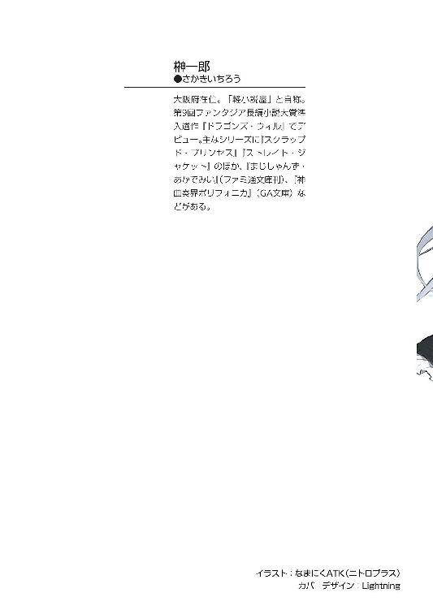
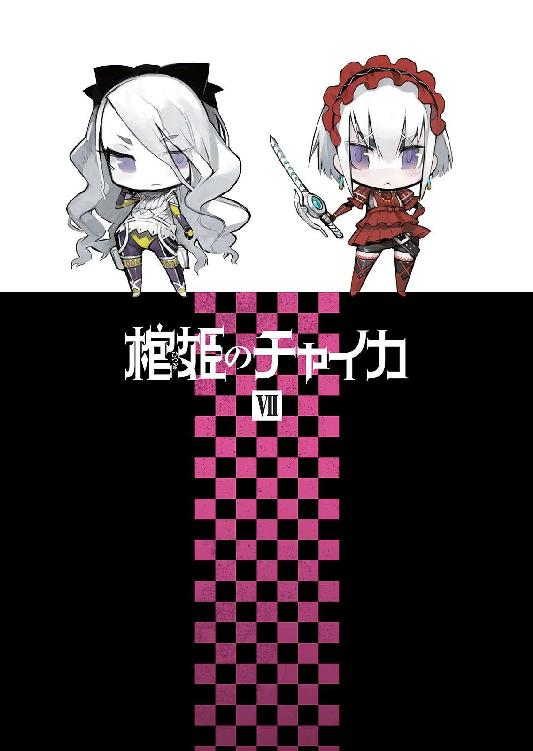
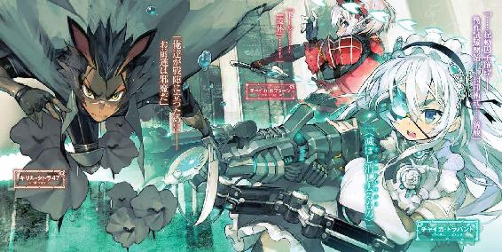
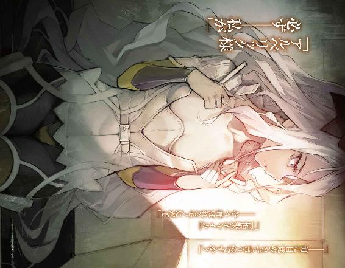
棺姫のチャイカⅦ
榊 一郎

富士見ファンタジア文庫
本作品の全部または一部を無断で複製、転載、配信、送信したり、ホームページ上に転載することを禁止します。また、本作品の内容を無断で改変、改ざん等を行うことも禁止します。
本作品購入時にご承諾いただいた規約により、有償・無償にかかわらず本作品を第三者に譲渡することはできません。
本作品を示すサムネイルなどのイメージ画像は、再ダウンロード時に予告なく変更される場合があります。
本作品は縦書きでレイアウトされています。
また、ご覧になるリーディングシステムにより、表示の差が認められることがあります。
口絵・本文イラスト なまにくＡＴＫ（ニトロプラス）
口絵・本文デザイン Lightning
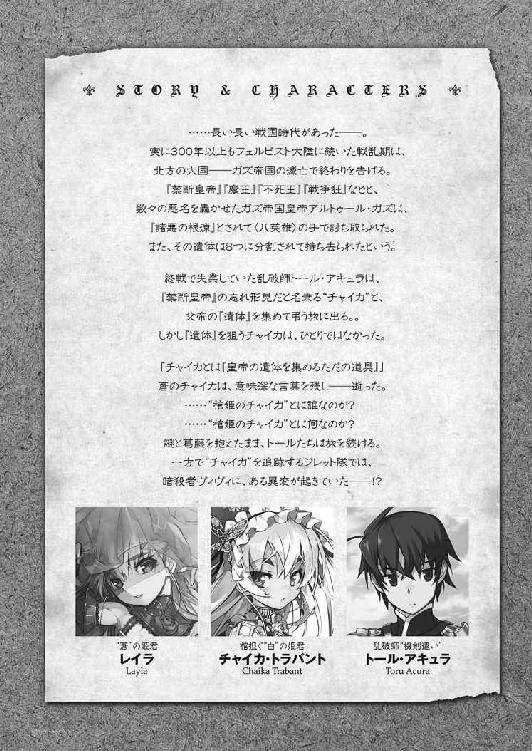
序章 棺姫を狩る者
PRINCESS COURSER
其処には、ただ絶望だけが横たわっていた。
恐怖を湛えた紫の瞳が、忙しなく周囲を見回している。
何度確認しても同じだ。だが確認せずにはおれないのだろう。
せめて覚悟を決めたい、という事なのか、それとも絶望の最中にも、諦めずに希望を見いだそうとしているのか──いずれにせよ、今の彼女に出来る事と言えば、その眼を動かす事位のものだった。
全身の十カ所以上を革の帯で、頑丈な椅子の上に縛り付けられ、身じろぎすらろくに出来ない。怨嗟の叫びを上げようにも、口には強く猿轡が嚙まされていて、くぐもった呻き声しか出ない。どれだけ全身に力を込めても、拘束が緩むような事は無かった。
そう。本当にもう少女に出来る事は、何も無い。
蒼い長衣の男達が、剃刀を彼女の頭部に当てて、その長い銀髪を剃り始めた時ですら、その身体はぴったりと椅子の上に縛り付けられたまま、微塵も浮き上がる事は無かった。
「......！ ......!! ............！」
ただ、ざらつき乾いた音と共に、少女の銀髪が剃られていく。
ばさりばさりと、容赦無く剃られたそれらは、椅子の脇にわだかまり、男達の履いている長靴に踏みしめられる。艶やかで美しい、文字通りまるで銀で出来たかの様な髪であるが、男達はそんなものに興味は無いらしかった。
「──これは本物か？」
蒼い長衣の男達の内の、一人が仲間にそう問うた。
「分かりません」
別の男が答える。
だが彼等は全員が覆面を被っている為──目許以外を蒼い布で覆っている為、誰が喋っているのかは分からない。
強いて区別をつけるならば、先に問うた男の目許には、双眸の間を縦に走る疵痕が見えていた。刃物傷ではない。恐らくは、もっとなまくらな──例えば鈍器の先端部分で、皮膚と肉の一部を刮ぎ墜としたかの様な傷だ。恐らく、負った時からは数年の歳月を経過しているであろうに、それは、ひどく生々しいままに残っていた。
「『チャイカ』を名乗ってはいましたが」
「その上で銀髪、紫眼──ならば是非も無い」
疵痕顔の男は言った。
その双眸には、炯々とした異様な光が宿っている。
「──準備整いました」
剃刀で少女の頭部を剃っていた男の一人が、身を起こして言った。
少女の頭部は、髪を全て剃り落とされて、完全な禿頭状態になっている。丁寧な作業であったのか、傷一つついていない。
代わりに別の男が少女に歩み寄り、筆の先に付けた塗料で少女の頭部に何やら線を描いていく。額から後頭部にかけての大きな円。まるで何かの目印の様に。
「では、これより開頭術式を行う」
疵痕顔の男が一同を見回して告げた。
取り出されたのは、鎌の様な──大きく湾曲した鋸である。
「......！ ......!! ............！」
少女は、猿轡の下で何事か叫んでいるが──やはり明確な声は出ない。
恐怖にその紫の眼を見開きながら、ただ、自分の頭部に迫る刃物を見つめていた。
第一章 海原の罠
ENTRAPMENT ON THE OCEAN
度を超した叫びは、声というよりも音に近い。
そこに明確な意味は無い。抑揚も拍子も無い。
ただ一筋に迸る──音波。
「ああああああああああああああああああああああああああああッ!?」
誰かに何かを伝える為に発せられるのが、声であり、言葉であるとするならば......確かに衝動として迸る悲鳴や咆哮は、その範疇に含まれまい。むしろそれは精神が軋む音──あるいは木っ端微塵に砕け散る際の、炸裂音だ。
「──なに!?」
そう叫んだのは、誰であったか。
揃って驚愕に眼を見開く彼等の、視線の先で──豪奢な金髪が、ゆっくりとだが色を失っていく。まるで薬品で衣類を漂白するかの様に、微妙な色の変遷が、一切合切抜け落ちて、純白に、いや白銀に塗り潰されていく。
「なんだこれは!?」
ジレット隊。
騎士アルベリック・ジレットを隊長とするこの部隊は、東方七カ国会議直下の多国籍組織──戦後復興に関する各種支援を目的として掲げる〈クリーマン機関〉、それが擁する実効戦力の一つである。
戦後復興支援という、平和的な目的を掲げている〈クリーマン機関〉が、小規模ながら実効戦力を抱えているのは......この平和な時勢を乱す可能性の高い存在を、積極的に駆逐する必要が在るからだ。
例えば敗残兵による山賊行為。例えば余剰兵器や流出武器を用いた凶悪犯罪。例えば組織的な軍需物資の横流し。等々。
永い戦乱の時代の後であるだけに、人々の間には、物事を暴力で解決しようとする考え方が蔓延している。話し合うのも先ず相手を這い蹲らせてから──と。だから第三者の介入によって揉め事を解決するにも、双方を先ず大人しくさせる為の実効戦力が、必要になる事も多いのだ。乱暴な話だが、その是非を問うのは、ジレット隊の仕事ではない。
「ヴィヴィ!?」
「おい......おい!?」
〈クリーマン機関〉は、この一年余り、ジレット隊に対して、ある任務を与えている。
ガズ帝国皇帝アルトゥール・ガズの遺児──自らそう主張する少女『チャイカ』の捕縛。
戦国時代末期に滅んだとはいえ、北の大国として三百年以上も君臨し続けてきたガズ帝国の影響力は、未だに大きい。その正当後継者ともなれば、旗頭に担ぎ上げて反乱なり何なりを企む輩も出てくる。そうなる前に『チャイカ』を捕縛──もしくは駆逐する事、それがジレット隊の任務であった。
だが──
「ヴィヴィ！ ヴィヴィ!?」
一体何が起こったのか──それは、全員の理解を絶していた。
ジレット隊の『脚』であると同時に、『家』でもある大型機車〈エイプリル〉号。
この白い大型魔法機関は、各所に彫り込まれたジレット家の紋章からも分かる様に、元々ジレット隊隊長であるアルベリック・ジレットの私物であるが──現在その正当な主たるアルベリックの姿は、此処には無い。
いや。もう無いというべきか。
彼は二基の超巨大魔法機関──航天要塞の戦闘に巻き込まれ、還ってはこなかった。
〈エイプリル〉号に再集結したジレット隊の面々は、そこでアルベリックに同行していた亜人兵レオナルド・ストーラからその事実を聞かされたのだ。
『異変』が起こったのはその直後である。
「大丈夫!? ヴィヴィ!?」
幼さの残る顔を恐れに歪め、眼鏡の奥の瞳を驚きに見開いて──そう問いかけるのは、ジレット隊の機匠であるズィータ・ブルザスコだ。
彼女の、そしてジレット隊の面々の視線の先に在るのは、変わり果てた仲間の姿だった。
ヴィヴィ・ホロパイネン──ジレット隊に所属する元暗殺者の少女。
とある貴族に養女として育てられていたという事も在り、彼女の容姿は実に貴族的──緩やかに波打つ黄金色の髪と、大粒の宝石の様な藍碧の瞳、隙無く整った目鼻立ち、肌は白く滑らかと──未だ幼さを随所に残しながらも、美姫と呼ばれるに相応しいものを幾つも具えていた。
その姿は、相手を油断させる為のものであるからこそ、暗殺の『武器』として徹底的に磨き上げられている。彼女を育てた貴族は、将来的に彼女を使って政敵を葬り、あるいは傀儡の如くに操る事を考えていたらしい。
そう。ヴィヴィ・ホロパイネンは並々ならぬ器量好しだ。
特にその豪奢な金髪は、印象に残りやすい。
だが──
「ヴィヴィ!? ヴィヴィ──！」
過労や心労によって、人間の髪が白髪化する事は別に珍しくない。
若白髪という言葉も在る。発症する者の数こそ少ないが、単純に色素の不足や欠乏により全体的に体色が薄くなるという病気も在る。生まれながらにそういう姿の者も居る。元々の髪が金髪であったなら──色素を失って、銀の髪に見えるという事も在ろう。
しかしそれは、あくまでそれなりの時間を掛けての変化だ。
僅かな間に、はっきりとそれと分かる程にその髪の色が変化するなど......在り得ない。
少なくともジレット隊の誰もが、そんな現象は聞いた事も無かった。
「あ、あ、あ、ああああああ、あ、あああ、あ、あ」
ヴィヴィの唇から迸るその『音』が細切れになっていく。
頭を抱え、がくがくと全身で痙攣さえ始めるその姿は、ジレット隊の面々を戦慄させた。
ヴィヴィは、隊長であるアルベリック・ジレットを慕っていた。
その一途に想いを寄せる様は実にいじらしく、当のアルベリックこそ気付いてはいなかったが、他の隊員達には説明の要も無い程に、彼女の気持ちは明白だった。彼の為なら本当に──比喩でも何でもなく、ヴィヴィは火の中だろうと水の中だろうと躊躇せずに飛び込んだだろう。
だがそれでも......ここまで激しい反応を示すものか？
恐怖や絶望の反応にしても、あまりにこれは......異様だ。
「ああああ──」
遂にヴィヴィが、白目を剝いてその場に膝をつく。
ズィータは、慌てて彼女に駆け寄った。
「ヴィヴィ、しっかりし──ひあッ!?」
親友に呼び掛けるズィータの声が──裏返って上へと抜ける。
彼女のすぐ脇で、獣の様な耳と尾を具えた少年兵──亜人兵のレオナルド・ストーラが足払いを掛けたからである。仰向けにひっくり返るズィータは、何が起こったかすら分からず、混乱の表情で──
「──!?」
そんな彼女の鼻先を、何かがかすめて通り過ぎた。
細く鋭い──銀の凶器。
「──って、おい!?」
大柄な体軀の元傭兵──ジレット隊の副隊長であるニコライ・アフトトルが声を上げる。
彼が掲げた右手、その節くれ立った無骨な指先には、一本の針が摑まれていた。
裁縫のものとは長さも太さも違う。急所に刺されば充分に致命的な代物だ。
こんな武器、いや凶器を使うのは、ジレット隊の中では一人だけ──ヴィヴィが抜く手も見せずに放ったそれを、ニコライが咄嗟に空中で摑み止めたのである。
「壊れたか!?」
唸る様にそう言って、ニコライの隣で身構えるのは、禿頭の魔法師──マテウス・キャラウェイである。
ヴィヴィの全身から噴き上がる殺気は本物だ。
レオナルドが咄嗟に反応する──出来る程に、それは明確で強烈だった。つい錯乱して身につけた武器を振り回した......訳ではない。少なくともヴィヴィは殺す積もりで針を投げたのだ。そうでなければ、これ程の殺気は生じない。
ただ......
「こいつ──既に正気じゃない」
ニコライは針を投げ捨てながら言った。
習い覚えた──徹底的に叩き込まれた暗殺者の技は、身体が覚えてはいるのだろう。だがそれを扱う者の内にその心髄が欠けているのだ。本来、暗殺者はこの様に殺気を辺り構わず放散したりはしない。むしろ卵の殻を割る様に、平然と、無心で──殺気は極力漏らさず、殺人を実行できるからこその、暗殺者である筈だ。
「ズィータ、下がれ、ヴィヴィは俺とレオナルドで押さえる」
「え？ あ──は、はい」
マテウスの手を借りて立ち上がりながら頷くズィータ。
だが、一体何が起こったのかは分からないままだ。
「............」
ゆらりと立ち上がるヴィヴィ。
俯き加減だったその顔を上げる。
「──ッ!?」
さすがのニコライとレオナルドも、愕然と呻いた。
ヴィヴィの顔に塡まっている眼は、皆が見慣れた蒼ではなく──紫へと変化していた。
銀髪。紫眼。
これではまるで──
「............」
ヴィヴィの右手が奔る。
「くっ!?」
ニコライは右手を挙げて、ヴィヴィが更に放ってきた針を受け止める。
更に閃くヴィヴィの左手。
続けて飛んできた二本目、いや三本目の針、これもニコライが左手で受け止め──
「──！」
次の瞬間、両手のふさがったニコライに向けてヴィヴィが四本目の針を、投げず、手に構えて襲い掛かっていた。
機車の中という事もあり、ニコライの本来の得物である長機剣は、壁際に立てかけたままだ。此処で使う事は出来ない。だからニコライは敢えて一撃は受ける覚悟で両腕を広げると、ヴィヴィを押さえ込みにかかる。
次の瞬間、ヴィヴィの姿が一回転した。
「なに!?」
横ではなく──縦。
即ち、彼女は床を蹴った勢いをそのままに、その場で後方宙返り──鉄片を仕込んだ長靴の爪先がニコライの顎を直撃した。
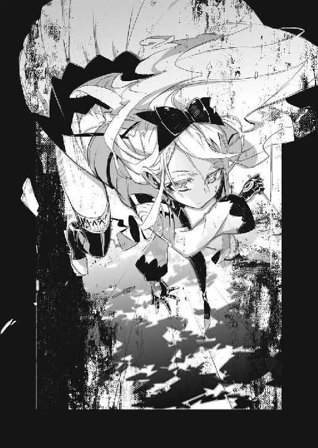
「ぐおっ......!?」
刃がついておらずとも、勢いと角度が合えば、鉄片は刃物同様の効果を発揮する。顎から左頰にかけてを切り裂かれ、血を噴きながらのけぞるニコライ。まさか室内でこんな人間離れした曲芸をヴィヴィがしてくるとは、考えていなかったのだ。喉笛を狙ってきたその一撃を何とかかわしただけでも、ニコライの技量は賞賛されてしかるべきだろう。
たん！ と音を立てて着地したヴィヴィは、今度は横旋回。
手にした三本目の針を、のけぞるニコライの喉に改めて突き立てようとするが──それは横から割り込んできた短剣が受け止めていた。
ぢん！ と音を立てて針先が短剣の刃に激突、火花を散らす。
「危ない──」
レオナルドである。
いつもその中性的に整った顔に、柔らかな微笑を浮かべ、何処か飄々とした雰囲気を絶やさぬこの亜人兵だが......流石に、今は緊張に表情が強張っている。
「技はともかく、この速さと重さは......！」
呻く様に言うレオナルド──彼の掲げる短剣に次々と火花が咲く。
「くっ──？」
次々と繰り出されるヴィヴィの攻撃を、レオナルドは捌くので精一杯だ。
亜人兵は多くの場合、通常の人間よりも身の軽さ、動きの速さに優れている。その亜人兵が──あろう事か、攻撃の速さと手数で普通の人間に圧されているのだ。
いや。それどころか......
「おぶっ──!?」
針を握らぬ方──ヴィヴィが繰り出した左の拳が、レオナルドの腹部に突き刺さる。
無様に吐息と唾液をまき散らしながら、吹っ飛ぶレオナルド。
とても小柄な少女のものとは思えない、打撃の重さであった。
「むう──」
吹っ飛んできたレオナルドの身体を咄嗟に受け止め、マテウスが唸る。
「これではまるで──乱破師の使う奥義〈鉄血転化〉」
「......!? それって」
驚いてズィータがマテウスを振り返る。
「一時的に、肉体的限界を超える技──だが」
マテウスの表情には、うっすらとだが戦慄の色が有った。
「限界は無意味に存在する訳ではない。当然、限界超えは、長引けば肉体の崩壊を招く」
「これは......殺す積もりでかからんと......」
顎を左手で押さえながら、起き上がるニコライ。
「そんな、待ってください、ヴィヴィは」
慌てて前に出ようとするズィータを──マテウスが押さえる。
「そのヴィヴィが、俺達を殺す積もりなんだよ！」
そう怒鳴って、ニコライは予備の武装である短剣を腰の後ろから引き抜く。
彼は腹を押さえながらも立ち上がったレオナルドと共に、改めてヴィヴィに襲い掛かる。
「............」
ヴィヴィは尚も無言。
傭兵と亜人兵、高い技量と能力を誇る二人の使い手を前に、彼女は押されるどころか、益々、その攻撃の勢いを──その速さと重さを増していた。
「ちいっ──」
舌打ちしながら、繰り出される針の攻撃を短剣で弾くニコライ。
レオナルドに至っては、既に口を開く余裕も無い。
このままでは埒があかないのは、誰の目にも明白だった。
だから──
「ズィータ!?」
機車の御者席へ駆け込むズィータを見て、マテウスが声を上げる。
機車の中は狭い為、ニコライの長機剣は勿論、マテウスやズィータの機杖も取り回しに難が在る。ヴィヴィの相手を、格闘戦技能に長けたニコライとレオナルドに任さざるを得ないのは、この為だが──
「これも、魔法機関ですから！」
そう言ってズィータは機車の制御用接続索を首に巻いた。
続けて機車の魔法機関の制御術式に介入、その一部を口頭の呪文詠唱で調整して組み直していく。魔力は低いズィータだが......術式の調整の速さは、そこらの魔法師の比ではない。普通の魔法師ならば半日かかる様な術式の組み直しも、彼女にかかれば──瞬く間だ。
「ブラウ・ニグ・エルム・ナティ・テヌ──」
ズィータは最後に背後を振り返って言った。
「ヴィヴィから離れて！」
「──!?」
一瞬、怪訝の表情がニコライとレオナルドの顔を過ぎるが──、そこは戦いの機を見るに敏い傭兵と、反射神経に優れた亜人兵である。二人は弾かれたかの様に跳んでヴィヴィから距離をとった。
「顕れよ──〈巡り巡るもの〉！」
次の瞬間、ヴィヴィを中心に空気が──猛烈な勢いで渦を巻く。
「うおっ!?」
「──ッ!!」
ニコライとレオナルドが、回転しながらその身体を泳がせる。一応、距離はとった筈だが、やはり狭い車内──それぞれ手にしていた短剣を引き切れず、ヴィヴィの周りに発生した渦動に、弾かれたのである。
そして──ヴィヴィは。
「............ッ!?」
文字通り渦となって回転する空気の中で、翻弄されていた。
ズィータが組んだのは、機車の駆動術式を弄ったものだ。
本来、車輪を繫ぐ軸や、その軸と繫がった歯車に掛ける回転の魔法。効果としては単純だが、それだけに力は強い。魔法の効果発現位置をヴィヴィの処に設定し直した上で、回転数とその回転力を調整したのである。
機車を動かす程の力を発揮する魔法だ。当然──ヴィヴィ個人の力では、どれだけ踏ん張ったところで、これに抗う事など出来はしない。
そして──
「............」
ズィータが魔法を解除した瞬間、彼女は倒れ伏していた。
すかさずニコライとレオナルドが彼女の手足を押さえつける。
だが......既にヴィヴィは気絶している様だった。単に目が回っただけでなく、強い力に晒されて、全身に急激な疲労が蓄積されたのだろう。
「......どうなってんだこれは!?」
ニコライはとりあえず、マテウスから手渡された手枷を──本来は『チャイカ』を捕縛しておく為の道具だ──ヴィヴィの両手に塡めながら言った。
「ジレット殿の死で錯乱した？」
「だがそれだけじゃ、瞳の色の説明がつかないですよ」
マテウスの言葉に首を振るレオナルド。
「銀の髪に紫の瞳──これじゃまるで『チャイカ・ガズ』だ」
彼は気を失ったヴィヴィを見下ろしながら言った。
「............！」
その言葉に顔を見合わせるニコライ、マテウス、そしてズィータ。
それは、改めて言われるまでもなく、彼等の頭の中にも等しく過ぎった発想だ。
しかし......
「これは一体、何の冗談だ!?」
ニコライがヴィヴィを押さえたまま唸る様に言う。
勿論──その問いに答えられる者など〈エイプリル〉号の中には居なかった。
時を同じくして──〈エイプリル〉号の外では。
「──ふむ」
街道の端に停車している白い大型機車を、やや離れた丘の上から見下ろす一対の眼が在った。冷ややかというか無表情というか......およそ感情の揺らぎや濁りを含まない、透明な眼差しである。
亜麻色の髪と琥珀色の瞳を具えた少年だ。
上品で美しい顔立ちである。誰もがそれは認める容姿だろう。だが──同時に誰もが違和感を感じる姿でもあった。何処かおかしい。何か足りない。人間ならば在って当然、具わって当然の何かが欠落している。人形の如く、あるいは幻影の如く、一切、生身の匂いがしない──そんな印象だった。
だからこそ、彼と初めて相対する者は、大抵『何者か』と先ず問う。
そしてこの少年は、常にそうした相手に『ギイ』とのみ名乗ってきた。
「あの個体の『覚醒』は不完全に終わったか」
顎に人差し指と親指の腹を当てて首を傾げる。
如何にも思案している、といった仕草だが、その表情は何処か空疎で、懊悩の震えや歪みとは程遠い。悩んでもいないのに悩んでいる格好をしているだけ、という風にも見えた。
「だが興味深い事例だ。あるいはこちらを利用するのも手か」
そんな事を呟くと──ギイは、悠然と〈エイプリル〉号に向けて歩き出した。
押し寄せては引き。押し寄せては引き。
陸の果て──砂浜で延々と繰り返される、震えにも似た水の動き。
それはまるで、世界の脈動の様でもある。この世界もまた生きていて──そしてこの膨大な水は、その血潮なのだと考える事も出来る。
世界もまた生命ならば──この世界は、何を想うのだろうか。
自らの裡に蠢く人々の、悲喜交々に対して。
「......これ......」
砂浜に立って、少女はただ呆然とその様子を眺めていた。
潮風に揺れる長い銀の髪。双眸はまるで宝玉の様な紫。
年の頃は十代半ばといった処か。色白で、小柄で、華奢で、その姿はまるで名匠の手になる人形の様に愛らしく──乱暴に抱き締めれば壊れてしまいそう、そんな儚さを身に纏っている。まるで幻想を呼吸しているかの様な、俗臭の欠落した可憐な少女であった。
ただし......それは、彼女自身のみを評した場合だ。
その容姿の持つ印象を激しく歪めるものが、その背には在った。
棺である。
黒い死者の器を、少女は背負っているのだ。
自身を容れるのか。誰か他者を容れるのか。あるいは棺に見せかけただけの別の何かなのか。いずれにせよ不吉極まりないその『付属物』は、可憐な少女の姿に、ひどく特異な印象を付け加えていた。
「......何？」
少女が指さして問うのは......目の前に広がる大量の水である。
無辺とも見える程に、延々と、視界の端から端へと広がる巨大な水域。
それは──
「何と言われてもな」
と答えるのは──少女の背後に立っていた二人の人物、その片方だ。
黒髪黒瞳の若者である。
こちらは少女より少し上、二十歳前──十七か八といった処だろうか。
未だ少年と呼ぶべき年齢である筈なのだが、何処か、ひどく老成しているかの様な雰囲気が在る。世の中の悲喜劇を一通り経験した挙げ句に身につく、疲れ果てたかの様な、物憂い表情と気怠げな落ち着き。端正ではあるのだが、それがこの少年の姿を、ひどく大人っぽく見せていた。
「チャイカ......」
若者は呆れた様子で言った。
「お前まさか、海を知らないのか？」
「......海！」
眼を丸くして銀髪の少女──チャイカは言った。
「海..................これ？ 全部？」
と首を傾げた処を見ると、少なくとも『海』という単語は知っていたらしい。
「だろう。多分」
「多分？」
その一言に引っかかったのか、問い質してくるチャイカだが、若者は構わず言った。
「その水、舐めてみろ。塩辛いらしいぞ」
「らしい？」
更に問い質してくるチャイカ。
「............」
「............」
二人の間に微妙な沈黙が横たわる。
「トール。まさか。海、初見？」
「............」
しばらく、適当な言葉を捜しているかの様に、トールは眉をひそめていたが。
「まあ、ずっと山間に在るアキュラの里で育ってきたしな」
トールと呼ばれた若者は、指先で頰を搔きながら、言い訳するかの様に言った。
「トール。海。初体験？」
「......まあな」
決まり悪そうにチャイカから視線を逸らして言うトール。
「私。海。初体験。一緒一緒」
ぱっと花が咲くかの様な笑顔を浮かべて、自分とトールを指さすチャイカ。
明らかな安堵と高揚がその表情には在る。『貴方と一緒でとても嬉しい』と言わんばかりの──素直なその笑顔に、トールは、少し困った様な表情でまた、頰を搔く。
「まったく──」
そんな二人の様子を、それまで黙って見ていた人物が──チャイカの背後に居たもう一人が、妙にわざとらしい溜息をつきながら肩を竦めた。
「兄様は世間知らずで困る」
「世間知らずとか言うのか？ こういうの」
半眼でトールは隣の人物を......自分と同じ黒髪黒瞳の娘を睨んだ。
全体的に凜然とした雰囲気で、容姿は整っているものの、『可愛い』と評される事は殆どあるまい。百歩譲って『美しい』か。普通は『凜々しい』と言う人間が多いだろう。長い黒髪を後頭部の辺りで括る髪型が、見るからに活動的で──また、そうした娘の雰囲気を補強する。
「だがそういう初々しい兄様もまた良いものだ」
大きく頷きながら娘は言った。
仕草がいちいち大袈裟だが、その反面、この娘の顔には、あまり表情が出ない。
今も無表情だ。口調と表情は怜悧とも言える程に淡々としているが、仕草と台詞はその正反対、何処か下手な役者を見ているかの様な、奇妙な雰囲気がこの娘には在った。
「良くねえよ」
トールは唸る様に言った。
「で──そういうお前はどうなんだよ？」
「勿論、私は兄様とは違う」
自信たっぷりといった様子で頷く娘。
「いや。だが待って欲しい兄様。兄様が『妹は世間知らずでいつも兄の袖口を摑んで後をついてくる位、初々しい方がいい』というのなら、私は喜んで世間知らずになろう！」
ぐっと拳を握って見せる娘。顔は相変わらず無表情だが。
「そうじゃなくてな。俺とお前は同じ山奥の里で育ったもんだと思ってたがな、アカリ？ お前だけいつの間に海なんか見てきたんだ？」
「む......？」
アカリと呼ばれた娘は首を傾げた。
「私が、いつ、海を見た事があるなどと言ったのだ？」
「いや、さっきお前、俺が海を見た事無いつってチャイカと言ってたら、『世間知らずで困る』とか、思いっきり上から目線で言ってたじゃないかよ」
「うむ。だが海を見た事がある、などという主張は一言も含まれていないぞ」
「............」
言葉に詰まるトール。
そんな彼を見つめながら肩を竦めると、アカリは言った。
「まったく、兄様は早合点が過ぎる」
「お前が、いちいち変な言い回しするからだよ！」
「そんなうっかりさんな処もまた兄様の魅力だが」
「褒められている気がこれっぽっちもしないな」
「御褒美に頭を撫で撫でして差し上げよう。兄様」
ほら！ と言わんばかりに両手を広げるアカリ。やっぱり無表情だが。
「いらん」
「むう。兄様はやはり撫でられるよりも撫で回す方が好みか」
「いちいちお前の表現は卑猥なんだよ！」
げっそり疲れた様な表情で項垂れるトール。
「ところでチャイカ」
「──むい？」
呼ばれて顔を上げるチャイカ。
彼女はいつの間にか、波打ち際にしゃがみ込み──砂の上を歩いている小さな蟹をじっと見つめていた様だ。
トールは苦笑を浮かべて言った。
「時折、大きな波が来るみたいだから気を──あ」
「ぷにゃあああっ!?」
トールが最後まで言い終わる前に、チャイカは背後から押し寄せてきた大きめの波に巻き込まれていた。寄せる波に背中を押され、引く波に足元を奪われ、チャイカはばちゃんと水飛沫をたてて転がる。
「......遅かったか」
「の、濃厚塩味ぃぃいいッ!?」
口の中の塩水を吐き出しながら叫ぶびっしょりと濡れ鼠のチャイカ。
背負っていた棺桶の為、ひっくり返された亀の様な状態で、手足をばたつかせている彼女を見つめながら、トールは呆れた口調で言った。
「だからさっきそう言ったろ」
「想像以上！」
と叫ぶチャイカの額の上を──蟹が何事も無かったかの様に歩いていた。
永い永い戦乱の時代が終わった。
その中心とも言われていた北の大国──ガズ帝国。
その支配者にして、数多くの伝説を持つ〈禁断皇帝〉アルトゥール・ガズの死により、戦国時代は幕を下ろし、曲がりなりにも平和と呼ばれる時代が、フェルビスト大陸には訪れた。東方七カ国会議を中心に各国は表面的には協調体制をとり、永い戦乱によって疲弊した世界の復興を試みる。
だがその一方で......戦乱の中に生まれ育った人々は、平和という概念に馴染みが薄く、時には戦乱を懐かしむ者も居た。暴力によって全てを決していた筈の時代があまりにも永かった為に、法と理によって事を治める世界に違和感を──苛立ちすら感じる者達。
彼等の中には、ガズ帝国の再興を掲げる者達も居た。
まさにそれを狙ったかの如く──そんな中、一つの噂がフェルビスト大陸の各所に流れ始める。
チャイカ・ガズ。〈禁断皇帝〉の娘。
ガズ帝国が滅びるまでは、その名が知られる事は無かった事から、ガズ皇帝の忘れ形見という存在そのものが捏造なのではないかと考える者も居たが、その一方で、ガズ皇帝の正当後継者を担ぎ上げてガズ帝国再興を目論む者達も出てくる──少なくともその可能性は在った。そしてそれは間違いなく、争乱の火種と成り得る。
だからこそ東方七カ国会議直下の〈クリーマン機関〉は幾つかの部隊を動かしてチャイカ・ガズと呼ばれる少女の逮捕、もしくは排除を開始する。
だが......そんな中、平和な時代の到来と共に、居場所を失い、生きる目的をこの時代に見いだせずに鬱屈した日々を送っていた一人の乱破師と、チャイカを名乗る一人の少女が出会った。
紆余曲折を経て件の乱破師トール・アキュラは、妹のアカリ共々〈禁断皇帝〉の遺体を集めるチャイカに従って旅をする事になる。
その先に何が待っているのかを──知らないままに。
眼下を緩やかに水面が流れていく。
「............」
船縁から海面を眺めながら、トールは顔をしかめた。
船そのものに乗った経験は在るが、見渡す限りに四方を水に囲まれているという状態は初めての経験だった。踏みしめるべき大地が足の下に無いという意味では同じなのだろうが、航天要塞の時とは──空中に在る時とは、また違った不安感がある。
それは虚空を『落ちる』恐怖ではなく、水底に『引きずり込まれる』恐怖に由来するのだろう。滑落死は一瞬だが、溺死は長々と苦しむ上に、大抵は無惨な屍をさらす事になる。
勿論、アキュラの里では乱破師の修練の一環として泳法の教育を──水練をトールは受けているし、その際、単に泳ぐというのならば海の方が浮き易いのだ、という話も聞いている。殊更に怯える必要は無いと頭では分かっている。
だがそれでも──何処か居心地の悪さを感じずにはおれない。
「──兄様」
ふと声を掛けられて振り向くトール。
丁度──甲板上に幾つも、まるで壁の様に積まれた荷箱を回り込んで、妹のアカリ・アキュラが近付いてくる処だった。
「どうかしたのか。随分と渋い顔をしているが」
「あー......」
トールは溜息をついて身体を回すと船縁に背中を預ける。
「万が一に情報が間違っていたら──いや罠だった場合、まずいと思ってな」
海の上では自由に動ける範囲が──逃げ場が限られる。
「それは確かにその通りだが、その様な状況、別に今回に限った事でもあるまいに」
アカリはトールの横で、同じく船縁に身を預ける様にして海を眺める。
「まあそうなんだけどな」
「大体、水場でもあの竜娘とチャイカが居ればどうとでもなるだろう？ 先の航天要塞の時もそうだったが」
「フレドリカに頼りすぎるのもな」
苦笑するトール。
彼がふと視線を向けると、舳先の辺りの船縁で、のんびりと腰掛ける少女の姿が見える。
小柄な上に、永く艶やかな金髪と、大きく円らな紅の瞳を備え、実に愛らしい姿形をしているが──それは擬態に過ぎない。いや。彼女にとっては全てが擬態で、『本当の姿』などというものは元から無いのかもしれないが。
装鎧竜と呼ばれる、魔法生物の化身なのである。
名はフレドリカ。姓は無い。名の方もトールが便宜的に付けたものだ。
「ふらっと居なくなる事はあるし、最後の一線で何を考えているのかよく分からん。まあ人間じゃないんだから、当然っちゃ当然な訳だが」
「呪文を別にすれば、喋る棄獣というのも確かに珍しいな」
人間の言葉を介して会話が成立するからこそ、つい、互いに理解出来ているのではないかと期待が──というか誤解が生じる。だが人間と装鎧竜は、そもそも同じ生き物ではないのだ。夜行性の獣や、ある種の爬虫類は人間と異なる視覚で、人間には黒一色としか思えない闇をも見通すそうだが──ひょっとしたらフレドリカの目も、人間のそれとは全く別の世界が映っているのかもしれない。
「確か棄獣の中では、装鎧竜と大海魔だけが、人間と意思疎通出来るんだっけか？」
「里ではそう習ったな」
とアカリが頷く。
知識としてその存在を知ってはいたが、トールもアカリも装鎧竜と出会ったのはつい最近──里を出てからの話だ。そもそも装鎧竜は数が少なく、滅多に見掛けない為、どうしてもそれに関する知識は伝聞を含まざるを得ない。
「大海魔は、装鎧竜よりも遥かに化け物じみているという話だが」
「装鎧竜だって、人間に変身できるってだけで、元々は全然違う姿だがな」
姿形が同じなら、つい親近感を覚えてしまう。
人間とはそういう錯覚を起こしやすい──が。
「............」
ふとトールは眉をひそめる。
彼の知識と経験の中に、その理屈の真逆とも言える存在が一つあった。
姿形は何処からどう見ても人間なのに、何かひどく隔絶した印象がある存在。同じ言葉で喋り、表面的には意思疎通が出来てはいるのだが、何か、正面で相対していても自分がひどく間違った事をしているかの様な、違和感を覚えてしまう存在。
「......ギイ、か」
トール達に情報提供をしてくる謎の少年だ。
素性も謎なら思惑も謎。概ね提供してくる情報は正しいのだが、だからといって味方と考える事には何か抵抗がある。言葉にしにくいが──トールに言わせれば『何だか得体が知れなくて気持ち悪い』というのが、一番的を射た表現だろう。使命とあれば如何なる者も一切合切の区別無く平然と殺す戦場の狗──そう呼ばれる乱破師としては、甚だ情けない限りなのだが。
「何処まで信用して良いものやらな」
「今までは情報は正確であったのだろう？」
「ああ。だから、余計にな」
当たり前だが、誰かを騙そうとするならば、まずその前に信頼を得ねばならない。
本格的な詭計の前に、相手に正しい情報を伝えて『自分は敵では無い』と思い込ませるのは謀略の基本だ。最初は疑念を抱いていたとしても、二度三度と正しい情報が与えられれば、相手も次第に、その真偽を検証するという手間を省く様になる。
「だからこそ──今回は、敢えて寄り道する事にした訳だが」
トールは肩越しに振り返って、再び流れゆく海面に視線を向ける。
今回の目的は──その下に在るという話だった。
それは、ガヴァーニ領を脱出した直後の事である。
トール達は、チャイカの御する機車〈スヴェトラーナ〉号で街道を進んでいた。
とりあえず航天要塞墜落のゴタゴタで全員が疲労困憊、といった状態であったが、そのゴタゴタの際に『遺体』を──一度は奪われたものも含め──回収する事が出来た。
チャイカが手にした『遺体』はこれで四。
八英雄が、それぞれにガズ皇帝の遺体を分割して持ち帰ったというのならば、残りは同じく四。つまり『遺体』回収の旅は、折り返し地点に辿り着いたとも言える。
だが『遺体』は、そもそも八英雄によって均等に分割されたのかも分からず、それが持ち帰られた後もそのままの状態なのか──それとも更に分割されたのかも不明のままだ。当然、それらが方々に売り払われたり譲渡されたりしている可能性も在る。
「さて──どうしたもんだか」
機車の御者台の上──チャイカの隣に座って空を眺めながら、トールは言った。
「............」
チャイカは無言。
彼女は何処か沈んだ表情で前方を見つめている。
トールは溜息を一つついてから、やや声を大きくして言った。
「さて、どうしたもんかな、我が雇い主？」
「......むい？」
チャイカが、若干慌てた様子でトールの方を振り向く。
「相談？ 議題──何？」
「いや。次の『遺体』さ」
苦笑を浮かべて見せながらトールは言った。
「捜す。勿論」
「そりゃそうだが。さっきの街で得た情報、あれが信用出来るかどうかが先ず問題だろ」
トール達は先程、食料その他を補給する為に、街道沿いの小さな町に立ち寄っていた。
そしてそこで──『遺体』の話を耳にしたのだ。
曰く『〈禁断皇帝〉の遺体の一部が海路で運ばれる途中、船が沈没して近くの海域に沈んでいる』......と。
トールとアカリが町の中数カ所で確認をとったが、噂の中身はいずれも同じだった。
どの噂も、船の沈没した位置ははっきりしないものの、おおよそこの辺り、という程度には共通している。人から人に伝わっていく過程で、根も葉もない噂の場合は、そうした細部がいい加減になるものなのだが。
勿論、この噂が本当であるという保証は、何処にも無い。
そもそも海路で運ぶというが、何処の誰の処から、更に何処の誰の処に運ぶ予定だったのかが、はっきりしない。どうも、近くに在る交易港の作業夫が見たという話だが、その作業夫が誰で、その船の名は、所有者は、といった細かい情報になると途端に曖昧になる。
「むう。念の為に確認？」
「根も葉もない噂に関わってる暇なんか無いが──しかし絶対に違うとも言い切れない」
トールは顔をしかめて言った。
「じっくり捜せば──とは最初、思っていたんだがな」
そもそもトールがチャイカに雇われるのを決めた時には、『遺体』についての情報は殆ど無かった。正直言って、チャイカがその全てを回収出来るかどうかについても、トールは確信が無かったのだ。
何年も、いや何十年も掛かるかもしれない。
その覚悟が在ったし、逆に、制限期間など無いものと思っていたのだが。
「だが──こうもお前の『姉妹』が何人も出てくるとな」
「姉妹違う......！」
ぶんぶんと首を左右に振ってチャイカは言った。
「分かってるよ。ものの喩えだ」
確かに『姉妹』ではないだろう。
何しろ彼女等は上も下も無く、全員が『我こそはチャイカ』と主張しているのだから。
以前に出会った『紅』のチャイカ。そしてガヴァーニ領に居た『蒼』のチャイカ。彼女等はそれぞれ本物──少なくともそう主張していた。そして『蒼』のチャイカによれば、更に何人もの『本物』のチャイカが居るという。
彼女等もまた『遺体』を集めている。
つまり、これは競争なのだ。
最終的に『遺体』を集めてどうするのか、どうも、それぞれのチャイカによって考え方は微妙に異なる様だが......いずれにせよ、仲良く分け合うという訳にはいかないらしい。ならば今後は『遺体』の争奪戦になる可能性が高い訳だが、その場合でも、先に多くの『遺体』を手にしている方が何かと有利なのは間違いない。
「別に期限がある訳じゃないんだろうがな。明日には山間部を抜けて近くの港町に着く。噂を確かめるなら、そこで船を調達すべきだろう」
「船......購入？」
「んな訳あるか。さすがに船の類は専門の技術が──っていうか前見ろ前！」
そう言いながらトールもまた視線を前に戻す。
そして──
「──!?」
息を吞んだ。
それなりの速度で街道を走っていた〈スヴェトラーナ〉号の前に、忽然と人の姿が現れていたからだ。道は曲がる事も無く真っ直ぐに延びている。そしてつい先程までは、トール達以外、完全に無人──全く付近に人影は無かった筈なのに。
「馬鹿、停めろ！」
「むいっ!?」
トールの叫びに、慌てて機車の制御桿を操作するチャイカ。
ぎぎぎと耳障りな金属の悲鳴を上げながら〈スヴェトラーナ〉号は急減速──それでも止まりきれずに横滑りを起こす。街道の路面に大きく乱れた轍を刻みながら、しかし〈スヴェトラーナ〉号は横転する事無く、停車出来た。
「くっ............!?」
機車からトールは飛び降りる。
轢いた。
立ちすくんででもいたのか、人影は全く逃げる事無く、棒立ちだった。そしてその上に未だ勢いを半分も殺せないままに〈スヴェトラーナ〉号はのしかかったのだ。勿論、鋼鉄製の車体に加えて、トール達やその荷物の重量が加わっているのだから、まともに轢かれれば、ただでは済まない。
「おい！ 大丈夫か!?」
自分でも間が抜けている問いだと思いつつも、そう言いながら、トールは車体の下を覗き込む。良くて骨折──悪ければ人の形も残っていまい。
トールは乱破師だ。人の死は日常とまではいかずとも、商売の内である。だが、だからこそ、無関係の他人を、その意図も覚悟も無く殺す事には、抵抗がある。その区別がついていなければ、乱破師は殺し屋どころか、ただの人でなしだ。
「おい......！」
「──次の遺体についてだが」
唐突に。何の脈絡も無く。
まるで場違いな程に落ち着いた声が、トールの背に触れた。
「......ッ!?」
愕然と振り返りながら、トールは腰に提げた二本の小機剣に手を掛けていた。
彼のすぐ背後──相手にその気があれば、トールを殺せるであろう場所に、その人物は平然と立っていた。
亜麻色の髪と琥珀色の瞳。恐ろしい程に整った──人形めいた顔。
年齢はよく分からない。見た目は少年の様だが、その仕草におよそ年齢を感じさせるものが無いのだ。幼稚さも無ければ老獪さも無い。むしろ本当に人間の物腰なのか、と疑いたくなる様な──よく出来た人形が操り糸に手繰られて動いているだけの様な、『中身の無さ』の様なものが、その人物には感じられた。
「──ギイ」
その人物にトールは見覚えがあった。
トール達の──というよりチャイカの行動に興味を持っているらしく、しばしば彼等の前に現れては、情報を与えて去って行く存在。本名不明、所属不明、経歴不明、分かっているのはその顔立ちと『ギイ』という呼称だけという怪しさである。
だが......
「親切な人！」
とチャイカが御者台の上で驚きの声を上げる。
チャイカは、情報をくれるギイの事を、一方的に『親切な人』として受け入れている様だが。トールにしてみれば、この得体の知れない相手を必要以上に信用するのは、危険に思えて仕方が無いのだった。
「何事か!?」
「どうしたの？」
と──機車の中から出てきたのは、アカリと、フレドリカだ。
「ハルトゲン公国の方に、遺体を持っている者が居る」
ギイは〈スヴェトラーナ〉号に轢かれそうになった事など認識していないかの様に──いや、明らかに轢かれていた筈なのだが──そもそもそんな事実は無かったとでも言うかの様に、平然と喋っている。トール達の驚きも意に介していない。まるで既に先程から会話していて、その途中であるかの様な喋り方だった。
勿論、出会ったからといって、挨拶を交わす様な間柄でもないが──
「ハルトゲン公国の公王バルタザール・ハルトゲン。彼は八英雄の一人だ」
「相変わらず、何の脈絡も無く出てくるな」
トールは小機剣から手を離して、ギイに向き直りながら言った。
「驚かせてしまったかね」
「かなりな」
アカリとフレドリカに『動くな』と手で合図しながら、トールはそう応じる。
「とりあえず今回の情報はそれだけだ。健闘を期待する」
とギイは静かな微笑を浮かべながら、そう言った。
「──一つ聞くが」
トールはギイを睨み据えたまま言った。
こうして瞬きもせずに見ていても、見失わずに居る自信が無い。何というか、自分の常識が、この少年にはまるで通用しない気がするのだ。
「ギイ。お前はチャイカが複数居るという事を、知っているのか？」
「.........ふむ？」
ギイは首を傾げる。
その仕草がまたトールにはひどくわざとらしく見える。人間の仕草を真似る人形の様で、そこに怪訝に思う気持ちがこもっていないかの様なのだ。
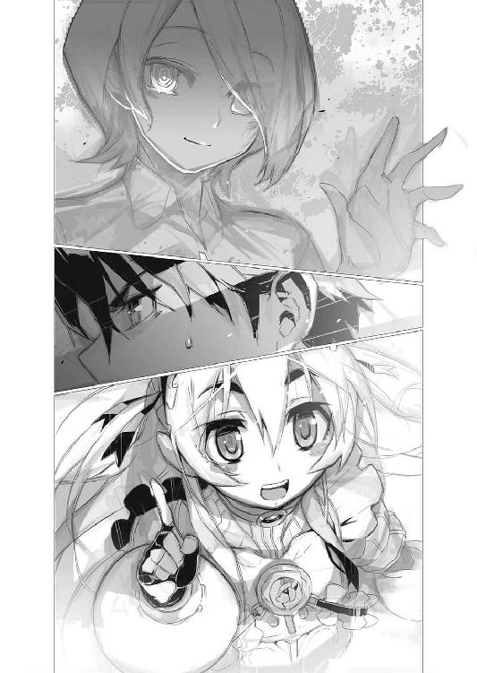
もしギイが、複数のチャイカに同じ様に情報を提供しているとしたら。
チャイカ『達』が存在する背景事情を知っている可能性が高い──
「逆に問うが」
ギイは微塵も微笑を揺らがさずに言った。
「そもそも君はどうなのかね？」
「なんだと？」
「トール・アキュラは本当にこの世に一人かね？」
「............」
「私は以前、君と会った私だと本当に思うかね？」
「......つまりまともに答える積もりは無い訳か？」
トールは眉をひそめて言った。
「どう思うかは君の自由だ。トール・アキュラ」
ギイはそう言い、そして──ふらりと軽い仕草で一歩踏み出す。
トールから見て〈スヴェトラーナ〉号の陰に入るかの様に。
「おい、待──」
追って踏み出すトール。
だが......
「............」
既にギイの姿はそこに、無い。
「──チャイカ」
「むいっ!?」
「お前は見ていたか？ ギイの奴は何処に行った？」
「............」
チャイカは慌てた様子で首を振る。
しばらく彼女は言葉を探していた様だったが......
「......突然。消滅」
と言った。
「アカリ。フレドリカ」
「私にもそう見えたな」
と答えるのはフレドリカである。
つまり、ギイは、人間の視覚のみならず、装鎧竜の視覚をも同時に欺いた事になる。
それとも欺いてなどいなくて──本当に一瞬で姿を消したりする事が出来るのか。魔法を使っていると考える事も出来るが、それならチャイカやフレドリカが気付く筈だ。
「本当に──厄介な相手だな」
トールは呟く。
今は敵では無いのだろう。だが──もしアレが敵になったとしたら？
正直言って、どうやって倒せば良いのか、見当もつかない。
「......ところで、どうするよ」
トールは溜息をついて──チャイカにそう問うた。
「ギイの奴はそのハルトゲン公国ってのに行けと言ってるが。沈んだって噂の『遺体』はどうする？」
基本的に『遺体』は腐敗を防ぐ意味もあり、容器に密閉封入されている事が多い。もし実際に海路で運ばれる際に船が沈んだとしても、『遺体』そのものは無事に残っている可能性が高い。もしその噂が本当ならば──だが。
「兄様──」
アカリが片手を挙げて言ってきた。
「もしあのギイという奴が、兄様の疑う様に他の『チャイカ』にも情報を提供していたとして──先に例の『紅』なり何なりがハルトゲン公国の『遺体』を手に入れるとする」
「ふむ？」
「『チャイカ』達の『遺体』を集める動機というか、背景事情は少し異なっている様だが、彼女等は一つ手に入れたからそれでいい、と満足するだろうか？」
「......ああ、そういう事か」
とトールは頷くが、チャイカはよく分かっていない様で、首を傾げた。
「むい？ 満足？」
「つまり、既に俺達は──お前は四つの『遺体』を持ってる訳だろう？ まあ『遺体』が本当に八分割されただけかどうかは分からないが、無視出来ない量だ。ならばそれを餌に他をおびき寄せる事だって出来る。それこそ、噂を流してな」
とトールは肩を竦めた。
「なら、ハルトゲン公国の『遺体』は別のチャイカに回収させておけばいい。俺達が後からそれをかっさらうなり何なり出来れば、それはそれでいいんだ。だけどこっちの噂の方は他のチャイカ達の耳に届いていない可能性が在る。現に問題の港や海域は近くだが、ギイはその事には全く触れていない」
「......うい」
「ならば噂の方を優先してしまっても良いだろう。それにギイに毎度毎度、踊らされてるってのも少々癪だ──いや危険かもしれん」
あのギイという少年が、何を考えているのか分からない。
未だにその目的は不明なのだ。今までは助力となる情報をくれてはいたが、それに頼り切ると、いつ足元をすくわれるか、分かったものではない。
「よし。決めた」
情報が揃えば即断即決──戦場での単独行動も珍しくない乱破師は、常に物事の優先順位を確認する癖がついている。逆に言えばそれが論理的に決まれば、トールもまた悩む事無く行動出来る。
「噂を──海に沈んだって『遺体』の方を優先しよう。いいか？」
「うい。勿論」
チャイカは大きく頷いた。
気がつけば、首を絞められていた。
「死になさい」
相手は、絞首の力の強さとは裏腹に、静かな口調でそう告げてくる。
真正面から向き合っている筈なのに、相手の顔は影に覆われていて見えない。ただその声は何処かで聴いた事があるような──微かに覚えの在るものだった。
一体これは誰だ？
息苦しさを覚えながら、自分の首を絞めてくる、その手を摑む。
そう太い手ではない。自分の腕力でも外せるのではないか──そう思う。
しかし......
「貴女の役目は終わったから。死んで良いの。その方が楽よ」
相手はまるで、諭すかの様に落ち着いた口調で言った。
「今までご苦労様。これからは私の番。ただそれだけ」
淡々とした口調が、むしろ不愉快さを増す。
他人の首を絞めながらまるで、何ほどの事も無い単純作業をしているかの様な物言いである。こちらの事を気遣う様な言葉面ではあるが、その一方で、声音は、口調は、まるで家畜を絞めるかの様──そこには何の感慨も無い。
「......ふ......ざ......ける......なっ......！」
相手の手を外そうと力を込める。
しかし──びくともしない。そんな筋肉のついた腕には見えないのに、どれだけ押しても引いても首から指が離れない。
「無駄よ。むしろ貴女はもう帰る場所なんて無いのだから。自分で無くしてしまうのだから。現実を知れば、むしろ貴女は自分で居なくなってしまおうとするでしょうね」
「......!?」
それは一体どういう意味か。
「人間は一人では生きられない。だから家族や恋人や親友や仲間や、そうした者達が根こそぎ失われた時、絶望する。ただ会えないだけではなく、それらを自らの手で完璧に、これ以上無い位に排除した時、人間は、生きる事を諦める」
まるで自明の理を語るかの様な口調であり声音だ。
疑問を差し挟む余地を全く認めないかの様に──静かだがひどく一方的である。
「だからほら──」
不意に相手の背後に凝っていた闇が薄れる。
「なっ......!?」
そこには......見知った仲間達の遺体が在った。
ズィータ。ニコライ。マテウス。レオナルド。
そして──
「アルベリック──様ッ」
喘ぐ様にその名を呼ぶ。
嗚呼。確かに相手の言う通りだ。
今の自分にとって彼等は全てだ。自分を暗殺者として育てた養父や、顔も覚えていない生みの親などどうでもいい。だが彼等は──彼等こそは、自分が生まれて初めて手にする事が出来た仲間、いや、『家族』だ。
だが......
「噓っ......」
遺体は、全て喉に、眼に、口に、額に──致命の部分に深々と針が突き刺さっていた。
見慣れた武器は自分のものだ。
自分が殺した。自分が壊した。自分が帰るべき場所を全て──
「だからほら」
相手の影に覆われた黒い顔が淡々と告げる。
笑う事も無く。嘲る事も無く。
ただ──本当にそれが当初から、決められていた所定の作業であるかの様に。
「死んでしまいましょう。消えてしまいましょう。後は私がやってあげ──」
その言葉が不意に乱れる。
「......!?」
相手の手が──首を絞めてきていたその二本の腕が、離れていく。
腕にはそれぞれ、死んだ筈の者達が二人ずつしがみついていた。
「......ズィータ!? 副隊長！ マテウス！ レオ......！」
彼等は強引に相手の腕を引きはがし、更には地面に引き倒す。
急速に回復した呼吸に喘ぎながらも、身を起こし、今や、光の下にさらけ出された顔を見下ろそうとして──
「......え」
そこに在ったのは、紛う事無き──自分の、顔。
鏡で見慣れた目鼻立ちが、そのままに、しかし──
「なん......で......？」
紫の瞳と銀の髪。
ただそれだけが、自分と──ヴィヴィ・ホロパイネンのそれとは異なっていた。
「──ッ!?」
覚醒は一瞬。
悪夢の衝撃に弾かれたかの様に、ヴィヴィは跳ね起きていた。
「はっ......はぁっ......はぁっ......」
一体、今の夢は何だったのか。
目覚めてさえ、ひどく生々しい後味の悪さが残っている。
ヴィヴィは胸元を押さえて動悸を抑え──そして。
「............？」
ようやく自分が何処にいて、どうなっているのか、気付いた。
見慣れた〈エイプリル〉号の中──自分は寝台の上に寝かしつけられていた様だ。〈エイプリル〉号の中には、小さいが人数分の寝台と、個室に近い状況を作れるようにと仕切りが設けてあり、そこでジレット隊の隊員達は休める様になっている。
だが──
「......ど、どうした、の？」
今、仕切りは全て壁際に寄せられ、ヴィヴィの周りを見慣れた仲間達が取り巻いている。
彼等は──それぞれ身構えていた。
武器こそ帯びていないが、明らかに戦闘態勢だ。まるで敵に対するかの様に。そして彼等の視線は全てヴィヴィに向いている。
「皆、どうした──の？」
訳が分からない。
何故、自分がまるで──敵で在るかの様に皆は身構えている？
「......！」
そこでようやくヴィヴィは気付いた。
自分の両手首に手枷が塡められている事を。
「何よこれっ!?」
「ヴィヴィ──」
喘ぐ様に声を掛けてきたのは、ズィータだった。
「あなた、十日も眠......いえ、それよりも、大丈夫、なの？」
「大丈夫って、なに？」
尖った声で尋ねるヴィヴィ。
一体これは何の仕打ちなのか。身構えるのはともかく、手枷を塡めるなど、断じて冗談では済まない。
「だから、その──」
ズィータは一瞬、困惑した様に言葉を詰まらせて──
「正気、なのね？」
「正気？ 何を言って──」
ヴィヴィは顔をしかめて仲間達を見回す。
だがズィータは勿論、ニコライも、レオナルドも、そして冗談とはおよそ縁遠いマテウスですらも、笑いもせず、首を振りもせず、ただ真剣な表情でこちらを見つめている。
「何の話!? 何？」
脳裏を過ぎる想像。
身構える仲間達。手枷。大丈夫。正気。
つまり──
「私が何かしたっていうの!?」
「............マテウス」
「恐らくは大丈夫、かと」
ニコライの問いに対してマテウスが頷く。
通信系の魔法に通じているという以上に、彼は観察眼に優れる。最小限の魔法で大量の鳥獣を、それも精密に操るには、一律に術式を起動するだけでは足りない。各個に合わせた調整が必要になってくる。対象の個性を見分ける眼が必要なのだ。
「言動、眼の動き、仕草、全ていつものヴィヴィ・ホロパイネンです」
「............」
マテウスの断言と共に──ジレット隊の面々の間に長々と溜息が漏れる。
だが、その意味がヴィヴィだけは分からない。
「だから何なのよ!?」
苛立たしげにそう問うヴィヴィに、ズィータが手枷を外し、更に手鏡を渡してきた。
「見て──自分の、顔」
言われて手鏡の中を覗き込む。
そこには──
「............!?」
思わずヴィヴィは手鏡を投げ出しながら懐の武器を探っていた。
だが、いつも持ち歩いている筈の針入れが無い。
「悪いが武装解除させてもらっている」
と言うのはニコライだ。
彼がひょいと背後に示したのは、針袋を含め、ヴィヴィが全身に仕込んで持ち歩いている暗器──暗殺用の隠し武器の全てだった。それらは全て、壁に作り付けられた棚の上に積み上げられている。
「というか普段、そのちっこい身体にどれだけ持ち歩いてるんだ、お前は？」
ニコライの口調には呆れと──そして安堵の響きが在った。
だが、ヴィヴィはそれどころではない。
「こっ──これっ......」
反射的に鏡の中を攻撃しようとして──しかしヴィヴィは、それが自分の首を夢の中で絞めてきた敵ではなく、今現在の、自分の姿なのだと気付いた。
「だ、誰、いや、違う、私？ ど、どうして!?」
「こっちが聞きたいよ」
とレオナルドが肩を竦めて言った。
「いきなり髪の色と眼の色が変わったかと思ったら、僕達に襲い掛かってきた」
「襲い掛か──わ、私の事!?」
「他に誰が？」
と苦笑するレオナルド。
「でもその様子だと、とりあえずは、正気に戻ってるみたい、だね」
「............」
「良かった......」
絶句するヴィヴィに、ズィータが眼鏡の奥の眼を潤ませてそう言ってきた。
「これは一体......何なのよ......」
本当に何が何だか分からない。
銀の髪に紫の瞳。これではまるで、あの──
「本当に何なのよ......！」
自分の髪を手に取りながら、ヴィヴィは喘ぐ様に言った。
トール達が乗った船は──縦帆と横帆を複数備えた大型帆船であった。
帆柱は全部で四本。巨木の如き根元に立って見上げれば、巨大な、日焼けした亜麻色の帆が風を孕んで大きく膨らんでいる。
この船は廻運船──定期的に海路を使って、物資と乗客を運ぶ船の一種だ。
ただし基本は商売人達が物資、それも馬車では重量や体積の問題で無理のある荷物を運ぶのに使う代物である。乗客を乗せるのは、むしろついでの意味合いが強い。
勿論──客室や指定席などという上等なものも無い。乗客達は航海中、船員達の邪魔にならない様な場所で座ったり、寝転んだりしている。船は甲板上にも幾つもの木箱を積み上げている為、見通しは悪く......その隙間に、ちらほらと乗客の姿を見る事が出来る様な状態だった。
「──あ。いたいた」
積み上げられた木箱の陰から、小柄な少女がひょっこりと顔を出す。
フレドリカである。
この装鎧竜の化身は船が、あるいは海が珍しいのか、あちらこちらを落ち着き無く見て回っている様だった。先程は勝手に帆柱に登って、何も知らない船員に怒鳴られているのも見たが......あまり懲りた様子は無い。ちなみにチャイカは早々に船酔いして、今は船尾の方でアカリが彼女の面倒を見ている。
「トールは大丈夫？」
「別にアカリも酔ってねえだろ。まあ船には慣れてないが、身体調整は乱破師の基本技能だしな。〈鉄血転化〉なんてその最たるもんだ」
苦笑してトールは言った。
「自由自在に感覚を操れるって事？ 便利なもんだね」
「お前が言うか？」
トール達が自己暗示や精神統一で操れるのは、あくまで『感じ方』であり、その延長としての身体運用である訳だが──フレドリカの、というか装鎧竜の魔法は、身体そのものを文字通りに好き勝手に変形し得るという、とんでもないものだ。どちらが便利かと問われれば明らかに後者だろう。
「ところでトール？」
ふとフレドリカが首を傾げて尋ねてくる。
「その問題の船が沈んだって場所だけど、はっきり分かってるの？」
「いや。大体だ。だから何らかの方法で捜さないといけない」
トールは舳先の辺りで働いている船員達の方を見て言った。
「だから適当な処で、船員の目を誤魔化して降りないといけないんだが......」
「降りる？」
フレドリカは周囲を見回して言った。
見渡す限りに何も無い様に見える──海の真ん中。船から降りるのは良いとしても、降りた先に両足で立てる地面は無い。
「そもそも水の中どうやって捜すの？ トール達、そんな長距離、泳げないし、息も続かないでしょ？ 深いと底まで辿り着くだけでも大変だし」
「まあ、チャイカの嫌水魔法があるからな。一定時間は何とか。後は──」
トールは水平線を眼を細めて見遣る。
「この辺りには──少し北に行った辺りに、ぽつぽつ島が在るらしい。海流の関係からか、切り立った崖に囲まれた島ばかりで、上陸するのも難しいから、無人島ばかりだそうが。あの辺りに一旦上陸して、帰りに乗れる船が通り掛かるのを待つのが現実的か」
上陸そのものはチャイカの浮遊魔法を使うなり、トール達が絶壁登攀の技術を使うなりすれば、何とかなるだろう。
「............トール？」
ふとフレドリカは──にんまりと笑みを見せた。
「『運んでくれ』とは言わないんだ？」
「............」
トールは顔をしかめて黙り込む。
実の所──それを当てにしている部分が、無い訳ではない。
フレドリカが竜として飛んでくれるなら、わざわざ船を使う必要すら無かったのである。だが先にもトールが言っていた通り、フレドリカは最後の一線で、何を考えているのか分からない部分が在る。その意味で、この竜娘はギイと同じなのだ。ギイ程に正体不明、という訳ではないので、トールも殊更に警戒はしなくなってきたが──それでも、彼女が居ないと成り立たない計画や作戦は、立てないようにトールは心掛けていた。
「この際だから一つ聞くが」
トールは改めてフレドリカに向き直りながら言った。
「お前は俺達の敵か、味方か」
「トールの敵──の積もりではあったんだけどねー」
フレドリカは腕を組んで首を傾げる。
「チャイカやアカリは嫌いじゃないし。トールを殺したら彼女等は嫌がるだろうし......そういう意味ではトールも嫌いじゃないし」
「......俺は喜ぶべきなんだろうな、そこは」
と苦笑するトール。
「私にとって『味方』っていうのは、結局、契約者だけだよ」
とフレドリカは言った。
「私達は──人間で言う処の自我が薄いからね」
「自我が、薄い？」
「他に適当な言い方が思いつかないからだけど。元々、人間に比べると喜怒哀楽とかの感情薄いんだよ、装鎧竜は。大抵の棄獣がそうだとは思うけどね。だから私の表情とかも、ドミニカの記憶から引っ張ってきているものだし、私の言動も、感情っぽい部分は、彼女のそれを模している部分が大きいし」
「......お前のその脳天気さは、実は、ドミニカ本来のものだってのか？」
言いながら、トールは胸の奥で暗澹たる気持ちを覚える。
元々ドミニカがこのフレドリカと似た明るい性格だったとしたら──戦場に出て妹を守れず、その死も看取れなかった事が、ドミニカの性格を決定的に変えてしまったという事なのだろう。少なくとも今のフレドリカと、トール達が知るドミニカには、共通点を探す方が難しい。
大事な誰かを失うという事は、それまでの自分を失う事でもあるのかもしれない。
ひょっとしたら、トールに自覚が無いだけで、ハスミンを失った後の彼もまた、アカリから見れば別人になっていたのかもしれない。
「私はあくまでトールともう一度戦いたいって思ったから、ついてきた訳だけど」
フレドリカはトールの顔を覗き込む様にして言った。
「それだって『人間なら多分そう思うだろうなあ』ってだけだしね。改めて考えると、トールと戦って殺したいとは思うけど、死んで欲しいとは思わないんだよね」
物騒な事を朗らかな口調で言うフレドリカ。
「つまり......何か。俺を殺すだの戦うだの言っていたのは、人間の真似をしているだけで、自分で心底からそう思ってる訳ではない......と？」
「かもね」
とフレドリカは笑う。
案外──彼女自身も、自分の気持ちがよく分かっていないのかもしれない。
「まあ、その辺の区切りは私もつけておきたくなったからこそ、トールに、契約しないかって誘ってみた訳だけど」
「......有り難い申し出ではあるんだがな」
トールは肩を竦める。
「ガヴァーニ領でも言ったが。お前との契約は魅力的だが、今の俺はそれに溺れちまう気がするんだよな。俺は未だ──半人前も良いところだ」
「ふぅん」
首を傾げてフレドリカはトールの顔を覗き込む。
「分かった。じゃあ、いつかは、って事で、待ってていいのかな」
「あ──まあ、そう、かな」
トールは曖昧に苦笑する。
まるで求婚されているかの様で、微妙に恥ずかしいような、奇妙な感覚である。
トールは、彼女の視線から逃げる様に、船縁から身を離して──
「......っと」
丁度、木箱の陰から出てきた別の客とぶつかりそうになり、これを避ける。
相手は相手で、咄嗟にトールを避けた様で──トールとその相手の二人は、互いにすれ違う様な状態から、肩越しに振り返った。
視線が──合う。
「──!!」
トールと──相手と。
武器に手を掛けるのはどちらが早かったか。
「──ッ！」
トールは右手を腰の小機剣の片方に掛けながら、左の掌を突き出していた。
相手が抜こうとした武器──剣の柄頭を掌で押さえ込む。互いの腕が届く様な、ほぼ密着する様な距離だからこその芸当である。
「クッ......」
柄頭を押さえられて、剣を鞘から抜けなくなった相手は、右足を軸に回転しながら左足で蹴りを放ってくる。だがこれにトールは、更に踏み込む事で対応した。蹴りの威力が最も強いのは爪先だ。踏み込んで間合いをつめれば、その威力は大幅に減殺される。
「──!?」
更にトールはもう一歩踏み込む。
相手は姿勢を崩し、更には蹴りのせいで安定を欠いていたため、その場に倒れ──いや、尻餅をつくこととなった。
「痛っ......」
倒れた剣士など、恐るるに足りない。
トールは立ち上がる隙を許さず、のしかかる様な体勢で、敢えて手裏剣を相手の鼻先に突きつけた。密着状態ならば、こういう小回りの利く小さな刃物の方が扱い易い。
「............」
相手の剣士は、表情を強張らせてトールを睨む。
対して──
「......まあそのうち、また会うだろうとは思っていたけどな」
トールはうんざりした表情で言った。
「まさか此処で、とはな」
「こちらの、台詞」
紫の瞳でトールを睨み据えながら、その少女は言った。
チャイカ・ボフダーン。
それは赤い衣を着た──もう一人のチャイカであった。
「............」
改めて手鏡の中の自分の顔を凝視する。
銀の髪と紫の瞳。
特徴的な色彩配置なだけに──目鼻立ちの特徴よりも、先ずそれが見る者の意識に残る。
くどい位に『銀の髪と紫の瞳』と『〈禁断皇帝〉の娘』の特徴を聞かされていたから、もうそれは、『チャイカ』にしか見えなかった。
「本当に......どうしてこんな」
ヴィヴィは、ぼんやりと呟いた。
怒りとか悲しみとか......そういう感情は、一定限度を超えると、虚脱感に繫がる。
アルベリックの死を報された直後、錯乱し、記憶には無いが自分は仲間達に襲い掛かったのだという。その上、自分の髪と眼の色が『チャイカ』のそれとしか思えないものに変わった。
自分が依って立つものが、根こそぎ、えぐり取られたかの様な印象だ。
訳が分からなくて、本当に、どうして良いか分からなくて......ただヴィヴィは、目の前の現実を無為に見つめるしかない。悲嘆する気力すら残っていないのだ。
今──ジレット隊は、街道脇に〈エイプリル〉号を停めている。
ニコライやマテウスは車内で今後の行動指針を本部に仰ぐべく、定期通信の時刻を待っている。ズィータとレオナルドは、ヴィヴィと共に〈エイプリル〉号の外に出て、休憩中だった。〈エイプリル〉号は貴族の持ち物らしく、機車としてはかなり豪華で快適な内装を誇るが、それでもずっと車内に詰めていると気が滅入ってくるからである。
ともあれ──
「もう何が何だか、分からないわよ......」
項垂れてヴィヴィは呟く。
すぐ傍にはズィータ達の姿も在るが、二人は、殊更に声を掛けてはこない。何の責任も確信も無い迂闊な言葉はむしろ、ヴィヴィを混乱させるだけだと理解しているからだろう。
だが......
「見た目通りの意味だ。それ以上でもそれ以下でもない」
予想だにしなかった返事が、ふと背後から届いた。
「......!?」
ヴィヴィが愕然と振り返る。
まるで、それは降って湧いたかの様だった。それまで声の主の気配というものを全く感じなかったのだ。いや。今も気配が殆ど感じられない。風の音とか、雨の音とか、そんな自然現象の様な声だった。
「何者!?」
レオナルドが腰の短剣に手をやっている処を見ると、亜人兵たる彼もまた、同じ様に感じたのだろう。明らかに声の主は普通ではない。姿を視認する前にそれだけは分かった。
「ギイ。とりあえずそう名乗っている」
声の主はそう名乗った。
亜麻色の髪に琥珀色の眼をした、綺麗な顔立ちの少年だ。
だが綺麗過ぎて何処か白々しいというか、まるで作り物めいて見える。
人間は、生きていれば喜怒哀楽や様々な経験を積み重ねて、心の内にある種の偏りや歪みを生じる──それがつまり個性を形成していくものだ。
だが、この少年にはそれが無い。ヴィヴィには全くそれが感じられない。暗殺者として育てられたヴィヴィには、そうした他人の個性──そこから派生する癖の様なものを読んで、無意識の内にも最善手を模索して対応する様な反応が叩き込まれているが......それが全く出来ないのである。そこに確かに存在しているのに、無個性の極みというか、何をどう対応すれば、この人物からどんな反応が引き出せるのか、まるで取っかかりが無いのだ。
「素性については語れない。語れないようになっている」
まるで他人事の様にギイは言った。
「面白い結果になった。だがこれも、ひょっとしたら企図されていた事か」
ヴィヴィの方を改めて見て、何やら呟く様に言うギイ。殊更に武器を構えるでもなく、ただそこに佇んでいるだけで、敵という訳ではなさそうだが──
「何を言ってるの？」
「君の『覚醒』は、中途半端な状態で終わったという事だ」
ヴィヴィの問いに、ギイはそう答えた。
「本来は、それまでのしがらみ──それまでの人格を綺麗さっぱり消して、近くに居る誰か、まあ基本的には家族や友人や恋人を根こそぎ、皆殺しにする筈なのだがね」
「......!?」
「どういう事ですか？ 根こそぎ、皆殺し？ 覚醒って」
絶句するヴィヴィの代わりに、ズィータが尋ねる。
「人間にとって、周囲との関係性は非常に重要だ。関係性──しがらみという糸で織りなした、自分の『居場所』だ。だが全ての関係性を自らの手で破壊すれば、もう、そこには戻れない。それまでの自分自身を全否定するのに等しい。結果『覚醒』も円滑に行われる。だが──」
ギイはヴィヴィを見据えながら言った。
「君の場合はそれに失敗した。だから君は、それまでの人格が残ってしまった」
まるで人間を遠くから──いや遥かな高みから見下ろして語るかの様な、それは淡々とした、そしてひどく乾いた物言いだった。
いきなり現れて、何を言うのか──この少年は。
頭のおかしい、ただの通りすがり？
いや──そんな筈は無い。
「覚醒って言いましたね」
とギイを眼鏡の奥の瞳で睨み据えながらズィータは言った。
「ヴィヴィが、何に、目覚めるって言うのですか？」
「勿論見ての通り、『棺姫のチャイカ』──そう呼ばれるモノにだよ」
とギイは静かに言った。
「──！」
揃って息を吞むヴィヴィ、ズィータ、そしてレオナルド。
「本当に何者なのかな？」
「言ったろう。言えないのだ」
問うレオナルドの方を振り向いて、ギイはそう答えた。
「この状況下では告知できない。そういう権限を与えられていない」
「つまりお前は、より上位の、何者かの意を汲んで動いている？」
「言えないのだよ」
レオナルドの探りの言葉にも、まるで感情を示さず、ギイは淡々とそう告げた。
「では別の事を。『チャイカ』とは何なの？」
ズィータが問う。
「............」
ギイはしばし、ズィータと、そしてその隣のヴィヴィを見つめていたが。
「特殊事例故に、説明しても良い──と判断する」
そう呟くとギイの右手が掲げられ、その白い指先がヴィヴィを指す。
「元々〈禁断皇帝〉に『娘』は居なかった」
それは戦後──『チャイカ』の出現と同時に、あちらこちらで囁かれてきた事だった。
そもそも戦前に〈禁断皇帝〉の娘の存在は知られていなかった。帝妃や側室の存在すら知られていなかったのだ。敵国は勿論だが、ガズ帝国の属国や同盟国ですらも、ガズ皇帝の家族関係については何も知らなかったという。
だからこそ『チャイカ』とは、ガズ帝国再興を目論む残党達が担ぎ上げる偶像に過ぎないのではないか、という説は以前から在った。
「『チャイカ』という存在は、〈禁断皇帝〉の後継者として、遺体を集める者として、予め用意されていた。勿論、一人では不測の事態に対応しきれず、死んでしまったり行動不能に陥る場合もある。その為に、『チャイカ』は世界中にばらまかれた。正確な表現をすれば、世界中の孤児に『チャイカ』になる『要素』を植え付けておいたのだな」
「要素って............だ、誰が？」
喘ぐ様な声で問うズィータ。
ギイは至極当然といった口調でこう答えた。
「勿論〈禁断皇帝〉──アルトゥール・ガズ皇帝本人だ」
「............な、何の、為に？」
「自らの『遺体』を集めさせ、復活させる為に」
「復活──」
「ガズ皇帝は少なくともその技術を完成させていた。完成したと確信していた。そしてその為の技法は全て『チャイカ』の中に眠っている。全ての遺体を集めきったその時、『チャイカ』の中のそれは目覚め、〈禁断皇帝〉を復活させる」
「そんな馬鹿な事を──」
とヴィヴィは言いかけて──傍らのズィータが、俯いて黙り込んでいる事に気付く。
「遺体には記憶が宿る......」
ズィータは──魔法機匠の少女は言った。
「肉体を修復して、記憶を全てつなぎ合わせれば、あるいは......？」
そもそも魔法とは、生物の記憶を消費して、奇跡を引き起こす技法である。
魔法を大幅に改良し発展させたと言われるガズ帝国──しかも本人も大魔法師であったというガズ皇帝ならば、そうした技術を完成させていたとしても、不思議ではない。
「ズィータ──」
ヴィヴィはギイを睨み据えたまま、言った。
「遺体が在れば、死者を生き返らせる技術というのは、在り得る、のね？」
「理屈の上では──多分。殆ど机上の空論だけど......」
言ってからズィータはある事に気付いて眼鏡の奥の眼を丸くする。
「ヴィヴィ、まさか」
「......例えば、腕だけで、無理矢理その死者復活の技術を使ったらどうなるの？」
驚いて自分の方を振り向いてくるズィータを片手で制して、ヴィヴィはギイに問うた。
「記憶は不完全になるかもしれない。あるいは人格に欠落が生じるか。実の所、その部分については不完全な情報しか無い。開発したガズ皇帝本人が既に死んでいるのだから」
「............」
ヴィヴィはしばし、唇を嚙んで黙考する。
そんな彼女をどう見たのか──ギイはやはり静かな口調で告げた。
「どうするかは勿論、君の『自由』だ」
青白い顔でチャイカが唸る。
「うー............」
船に乗った当初は、初体験という事もあって、若干、興奮気味だった彼女であるが──出航後、程なくして強烈な船酔いに悩まされる事になった。具体的には船尾の船縁にもたれかかって、胃の中のものを全部、海に向けてぶちまけてしまっていた。
「お昼御飯......無意味......」
口元を拭きながら呟くチャイカ。
彼女は力尽きたかの様に、両腕で船縁に引っかかったままだ。
ちなみに珍しく棺は背負っておらず、足元に置かれている。
「それは仕方あるまい。嘔吐感は無理に堪えていると尚更辛いぞ」
と言うのはアカリである。
チャイカに棺を降ろさせたのはアカリだ。背中をさするのに邪魔だからである。
「アカリ、トール、平気？」
「海で船に乗るのは私も初めてだが、修練で、散々、揺らされたり振り回されたりは慣れ..................いや。待て。船酔いを装って兄様に介抱を求めるという手も在りなのか？」
首を傾げながらアカリは眉をひそめてそう呟く。
「......！」
船縁にもたれかかったまま──しかしぴくりとチャイカが震える。
「胸元を緩めると楽になるというしな。そこで胸の谷間を兄様は覗く事になる」
「............谷間」
侘びしげな表情で自分の胸元に視線を落とすチャイカ。
そんな彼女を一瞥してから──腕を組んでアカリは言った。
「うむ。試してみる価値はある」
「アカリ！ 私──本当、船酔い！ アカリ、偽物、船酔い！ 私、先！」
「何がどうなるとチャイカが先なのか知らないが」
船酔いを忘れたかの様にぴょんぴょんと飛び跳ねるチャイカを眺めて、アカリは言った。
「胃液の臭いをまず取ってからにするべきだ」
「むい!?」
「さすがに兄様も吐瀉物の臭いで興奮する様な変態でもあるまいしな」
と言ってから──ふと首を傾げるアカリ。
「......いや、しかし万一という事も？」
「............」
「その場合は喉に指を突っ込んで吐くとしよう」
「むぅ......」
頷くアカリと唸るチャイカ。
この場にトール本人が居ればまた喚くなり怒鳴るなりしただろうが、生憎と周りにはトールはおろか船員達の姿も無い。まあ好きこのんで、見ず知らずの、胃の中のものをぶちまけている最中の人間の近くへ寄ってくる者も居ないだろうが。
「ともあれ、兄様は何処に行った？ フレドリカの姿も見えないが」
言ってアカリは左右を見ながら、積み上げられた木箱の間を歩き出す。
チャイカも慌てて棺を背負うと、彼女の後を追った。
荒縄で固定された大量の木箱は、甲板の上をまるで迷路の様な状態にしている。二人はトールの姿を捜して積み荷の隙間を歩き──
「──む？」
「むむっ？」
立ち止まる二人。
彼女等の視線の先には──トールが居た。
倒れて半身を起こしかけた体勢の少女に──上からのしかかる様な体勢で。
「兄様！」
「！ ──アカリ！」
と顔を上げて叫ぶトール。
その鼻先に彼が片手を掲げ──唸りを上げる勢いで飛んできた手裏剣を空中で摑み取ったのは次の瞬間であった。
「いつもの事だが、何をするんだお前は!?」
「いつもの事だが、それはこっちの台詞だ兄様」
とアカリは返した。
「私がゲロを吐くチャイカの面倒を見ている間に、兄様は何をしているのか？」
「何って──あ」
眼を瞬かせるトール。
自分と少女の体勢が、傍から見るとどう見えるかに気付いたらしい。
「ち、違うわ！ 見て分かれよ！」
「妹を差し置いて何処の馬の骨ともしれない婦女子を押し倒すとは何事か！」
「よく見ろ！」
言って足元の少女を指さすトール。
アカリは眼を細めつつ首を傾げて──
「そうか。兄様は銀髪が好みか」
「トール、銀髪好み!?」
妙に嬉しそうに言うチャイカはさておき。
「お前等、記憶力無いのか！」
トールは喚いた。
「無論、分かっているが」
とアカリはトールに歩み寄りながら片手を差し出す。トールは一つ溜息をつくと、摑み取った手裏剣を彼女に返しながら、一歩身を引いて身体を伸ばした。
「しかし、一体どうした事だこれは」
「俺が聞きたいよ。いきなり出会した」
とトールは溜息をつく。
一方チャイカは──
「──!?」
ようやくトールの相手が誰なのか、気付いたらしい。
彼女はあたふたと棺を降ろして蓋を開くと、中から分解してあった魔法機杖の部品を取り出して組み立てる。普段はとにかくやる事なす事鈍臭い彼女なのだが、これだけは別なのか、トール達すら驚く様な素早い手際である。
「トール、アカリ、離れる！」
チャイカは叫びながら魔法機杖の先端を、未だ座り込んだままのその少女に向ける。
少女の名はチャイカ・ボフダーン。
トール達が『紅チャイカ』と呼ぶもう一人のチャイカだ。
銀の髪と紫の瞳は同じだが、やや、目付きが鋭く、髪も短めにまとめられているので、印象はむしろ、トール達と共に行動するチャイカの──『白』とは真逆に近い。
「よせ、何をしようってんだお前は」
とトールは呆れた様にチャイカを──白チャイカを振り返る。
「ここで魔法なんぞ──」
と──そこまで言って。
「──！」
トールとアカリは、その場に紅チャイカを残して左右に跳ぶ。
次の瞬間、だん！ と音を立てて、二人が退いたその場に、入れ替わる様にして落下してきたものがある。
「よぉ......」
と笑いながら長い武器──槍を旋回させてトールとアカリを牽制しながら立ち上がる男。
恐らくは帆柱の上からでも飛び降りてきたのだろう。
縦長の顔と、顎の先に付いた傷が特徴的で、一度出会えば忘れはすまい。
確か名はダヴィード──紅チャイカの仲間である。
「奇遇だなあ、白の」
紅チャイカに手を貸して彼女を立たせながらダヴィードは言った。
「トール、アカリ......！」
「だからよせ！」
機杖をダヴィードに向ける白チャイカに、トールが叫んだ。
「下手に魔法なんぞ撃ち合ったら、船が沈む！」
「............！」
はっとした様子で白チャイカは辺りを見回し──そして、少し離れた木箱の上で、伏撃の体勢をとりながらこちらに機杖を向けている魔法師を見つけた。
浅黒い肌と赤毛が特徴の、若い娘だ。
紅チャイカのもう一人の仲間──こちらは確かセルマという名前だった筈である。
そう。紅チャイカとダヴィードが居るなら、この魔法師の娘も近くに居て当然なのだ。
「............」
トール、アカリ、チャイカは軽く身構えながらダヴィード、紅チャイカ、セルマと対峙する。ただ......この場に居る者の中で、フレドリカだけは面白そうに双方を眺めているだけで、殊更に構える様子は無かった。
「......で？ どうするよ？」
とダヴィードがむしろ状況を愉しむかの様に尋ねてくる。
今の処、積み荷の陰になって、船員達はトール達の対峙に気付いていない様だが......本格的な戦闘に入れば、流石に分からない筈が無い。そして放置も無視もしてくれないだろう。船員にはこちらの事情が分からない以上、三つ巴の乱戦にならざるを得ない。
面倒な状況だ。
「ここでいきなり、いつぞやの再戦をするか？」
甲板の上を見回してダヴィードは言った。
「ちょいと変わった舞台だが、これはこれで面白かろうぜ」
「お前等と一緒に海の藻屑になる積もりは無い」
とトールは構えを維持したままそう答える。
「......そうか。俺達と同じ噂を聞きつけたな？」
「さて？ 何の事かねえ？」
とダヴィードは白々しくも首を傾げるが、恐らく間違いあるまい。
海路で運ばれていた途中に、船ごと沈んだと噂される『遺体』を探しに来たのだ。しかしトール達と鉢合わせするとは、紅チャイカ達も考えていなかったのだろう。
しばらく一同は、それぞれ睨み合った状態で身動きがとれずにいたが──
「......トール」
声を上げたのは、それまで黙っていた紅チャイカだ。
彼女は背中に背負った武器──蛇咬剣の柄から手を離すと、肩の力を抜いて言った。
「とりあえず、双方共に武器、引く。同意？」
「............いいだろう」
トールはゆっくりと更に後方へ二歩ばかり下がって、紅チャイカ達を視界に納めつつ、小機剣から手を離す。アカリも同様にして、背負っていた愛用の鉄槌から手を離した。
「......奇遇」
と紅チャイカが呟く様に言う。
「本当にな」
とりあえず紅チャイカに殺気や闘気の類はもう感じられない。彼女に闘う積もりが無いならば、ダヴィードとセルマもこれに従うだろう。
トールと紅チャイカの間で張り詰めていた空気が、緩む。
そんな二人の間で、視線を右往左往させながら──
「......むう？」
何故か、白チャイカが妙に不満げだった。
服を、いつものドレスから着替えた事に、はっきりとした意味は無い。
強いて言えば──区切りの為の、それは作業だった。
「............」
〈エイプリル〉号に持ち込んだ手荷物の箱──その一番下に、その衣装は眠っていた。
暗殺者として育てられていた頃のものだ。
勿論、他人を欺き、油断した処を背後から刺すのが暗殺者であるから、その衣装にこれと決まった特別なものは無い。通常、普段着が、いわば暗殺者達の仕事装束だ。
だがそれでも、夜陰に乗じて動き回る際など、普段着ではない衣装に身を包んで仕事をせねばならない時がある。物陰に潜み、隘路をぬって、標的の背後に迫る為、普段着のドレスとは異なる、いわば『暗殺装束』なるものを使う場合がある。
育ての親の貴族の失脚と自害に伴い、自由の身となったヴィヴィが、どうして暗殺者時代の象徴とも言うべきこの衣装を残しておいたのかは、彼女自身にもよく分からない。だがいざ出して着てみれば、それは、むしろ普段のドレスよりもしっくりと彼女の身体に馴染んでいた。
どれだけ忘れようとしても、お前は暗殺者として既に『完成』しているのだ、と衣装までもが告げてくるかの様に。その声は亡き養父のものだった。
「......ジレット様」
胸元を押さえて呟くヴィヴィ。
生きる為に仕事を探し回り、〈クリーマン〉機関に雇われる事となったヴィヴィは──その後、アルベリック・ジレット率いる実働部隊に配される事となった。
勿論それは、彼女の身に叩き込まれた暗殺技能を買われての事である。
当然、その事はアルベリック・ジレットも知っている。
だが暗殺者の過去を知っていて尚、彼は彼女を普通の少女として扱ってくれた。荒事の場面では、極力、ヴィヴィを前に出さないように彼が心掛けてくれているのが──つまりは暗殺技能を使わせないように気を使ってくれているのが、すぐに分かった。
それは貴族のお坊ちゃんらしい、甘い価値観に基づく御節介であったかもしれない。
女性を闘わせてはならない。少女ならば尚更の事。
そんな風に、彼は思っていた様だ。
だが──だからこそヴィヴィは、それを知ってからは敢えて、積極的に暗殺技能を使う様になった。実際に相手を殺しはしないにしても、それまでは暗器を見る事さえ嫌だったのに、アルベリックの役に立ちたくて、暗殺者としての自分を表に出すようになった。
本当に──ヴィヴィは嬉しかったのだ。
ジレット隊の他の者達も、殊更にヴィヴィを暗殺者として蔑む様な事は無かった。それが彼等個々人の元々の考え方なのか、隊長であるアルベリックに倣った結果なのかは分からない。だがアルベリックの考え方がそうであるからこそ、彼等もまたアルベリックの下に集まってきたのだと──そして無理なく部隊を組んで活動できていたのだとヴィヴィは思う。
そう。アルベリックのお陰だ。少なくともヴィヴィはそう考えていた。
物心ついて初めて......ヴィヴィは生きている事が楽しいと思った。
自分が何かの道具ではなく、一個人として生きている事を許される──暗殺の道具としての『置場所』ではなく、人間としての『居場所』を得たのだと思った。自分はジレット隊に配属されて初めて、人間として生まれ直す事が出来たのだとすら。
「だから、必ず──私が」
自分はアルベリックに命を貰った。
だから今度はアルベリックに命をあげる番だ。彼を生き返らせる事が出来るなら、自分は何でもする──出来るのだ。
それこそ、自らの命を、対価として差し出す事になろうとも。
船は大量の荷物を積載していたが──甲板の上でも、舳先に近い辺りには木箱は積まれておらず、比較的、開けた空間が出来上がっていた。
トール。そして紅チャイカ。
両者はその舳先の根元とも言うべき場所で向かい合っていた。
周囲には船員達が忙しく行き来しており、時折、トールや紅チャイカの姿に怪訝そうな一瞥を投げ掛けたりもするが......特に声を掛けてくる事も無かった。彼等にとってはどちらもただの客──荷物のついでに乗せただけの他人に過ぎない。
アカリ、フレドリカ、そして白チャイカは二人を遠巻きに見守る形だ。これはダヴィードとセルマも同じである。
「久し振りって程でもないか」
「......ん」
紅チャイカは頷く。
勿論、緊張感は互いに抜けないが、今の彼女から敵意の類は感じられない。いずれは『遺体』を巡って互いに争う立場だとしても、元々、憎悪や嫌悪を抱いていた相手ではない。
「てっきりあの後も、しつこく追いかけられると思っていたんだがな」
苦笑するトール。
紅チャイカ達は、以前、トール達の──白チャイカの保持している『遺体』を奪おうと襲ってきた。紆余曲折あってその時はトール達が紅チャイカ達を退けた訳だが......殺した訳ではなかったので、後々、再戦を挑んでくる可能性をトールは警戒していた。
だが──
「新たな『遺体』......見つけた」
と紅チャイカは言った。
相変わらず、白チャイカに比べると気の強さが如実というか、奇妙に張り詰めた雰囲気を纏っている。そっくりの目鼻立ちでありながら、白チャイカとは随分と印象が違うのは、髪の短さよりも、この雰囲気のせいだろう。横で見ているだけで放っておけなくなる危なっかしさという意味では、両者共に同じだが。
「俺達の持っているのとは別に、か？」
「そう。勿論、『白』、持っている『遺体』、貰う、いずれ」
と紅チャイカは挑発的な表情で頷いた。
「それはこっちの台詞だが......どうにもな......」
「......？」
自分の挑発にトールが乗ってこないのを、紅チャイカは訝しんでいる様だった。
「もう一人『チャイカ』を名乗る奴に会った。少なくともそいつは、『自分も本物のチャイカだ』と言っていたそうだが」
トールは頰を指先で搔いて言った。
「......『自分も』？」
「そのチャイカ──『蒼』と言っておくが、そいつ曰く、チャイカってのは複数居て、全員が本物である、と」
「............眉唾」
あっさりと切って棄てる紅チャイカ。
「まあそう思うだろうな、実際、見てないなら」
トールは肩を竦める。
実の所、レイラと呼ばれていた女が『蒼チャイカ』だという話はトールも伝聞だ。彼の目の前でレイラが自ら『蒼チャイカ』を名乗った訳ではない。
「お前は──お前達は」
トールは眼を細めて紅チャイカを見る。
「自分でも、自分の事が全て分かってる訳じゃないみたいだな」
「......記憶の欠落」
紅チャイカは眼を伏せて言った。
「仕方ない」
「............」
トールはそれ以上の追及を躊躇した。
白チャイカも同様だが、彼女等は、記憶に一定の空白を持っている。
だから実は、彼女等を駆り立てる動機──過去の記憶と、今とは、連続していないのだ。
もしそれが、何らかの辻褄合わせの為に設けられた、空白なのだとしたら？
（......追及して良いのか？）
ふとそんな想いが脳裏を過ぎる。
白チャイカにしても紅チャイカにしても、追及が過ぎれば、それは、彼女等自身の人生の目的を否定しかねない。それが『他人から後付けで与えられて、自分がそう思いついたと、思わせられているだけ』などと言われて──果たして、チャイカ達は納得するかどうか。
生きている意味。それがもし他人からの借り物だとしたら。
（もし──本当に全員が本物の『チャイカ』だったとしたら）
トールの脳裏に、幾つかの暗い未来予想が瞬く。
そして──
「──!?」
反応はほぼ同時だった。
強いて言えば若干、トールの方が早かったのだろう。トールが二本の小機剣を抜き放って一歩前に出たその瞬間、蛇咬剣独特のざらりとした鞘走りの音が響いていた。
「なんだ!?」
驚いているのはアカリ達、そしてダヴィード達も同様だった。
ダヴィードが槍を構え、アカリが鉄槌を背中から引き抜く。
「こいつら......!?」
トール達全員を囲む様にして──十数名の人影が現れていた。
「......いつの間に？」
そう問わずにはいられない程に、唐突に。
全員が灰色の、外套状の衣装を身に纏い、フードを降ろして頭部を覆い隠している。中身は小さな暗がりに紛れて判然としない。顔立ちはおろか、性別や年齢すらも分からない状態だ。
ギイの様な、得体の知れ無さは──奇妙な気配の欠落は無い。
ただ、体術、特にその延長としての気配を扱う術に、この何者か達は長けている様だった。気配を消して静かにトール達を、そして紅チャイカ達を包囲してのけたのだから。隠密行動に長けるという意味では、暗殺者や、それこそトール達の様な乱破師に近い。
「──ッ！」
短い呼気を吐いて、外套姿の者達は一斉に剣を抜いていた。
僅かに刀身が反り返る薄手の曲刀──俗に新月刀と呼ばれる武器だ。騎士や剣士の使う長剣よりは脆いが、その分切れ味に優れ、振り回す速度も早い。
これを手に──襲い掛かるのも、また同時。
まるで罠が閉じるかの様に、十数本の凶器が一斉にトール達に向けて走っていた。
「ちいっ!?」
トールと紅チャイカは咄嗟に背中合わせになりながら、剣を振るう。
紅チャイカの扱う蛇咬剣が、うねりながら殺到する外套姿の者達を牽制し、トールの双機剣が振り下ろされる新月刀を次々と弾いていく。
だが──
「──!?」
一方、これ見よがしに槍を片手に身構えるダヴィードや、機杖を手にしたセルマは──完全に無視されていた。フレドリカも同様だ。外套姿の半数はトールと紅チャイカに、残りは白チャイカとアカリの処へと向かっている。
「──兄様！」
咄嗟に抜いた鉄槌を振り回して、外套姿の者達を遠ざけながらアカリが叫ぶ。
「この感じは──」
「分かってる！」
一際大きく踏み込んできた相手に向けてトールは左の小機剣で斬撃を放つ。
相手の踏み込みを逆手にとった一撃である。
相対的に倍加した速度の刃が相手の──膝を狙う。踏み込んだその瞬間に足を、それも膝を引くのは難しい。咄嗟の回避でも遅れがちになるのが膝から下だ。勿論、そこは急所ではないが、斬撃が当たれば、その瞬間に相手の動きは事実上、封じられる事になる。
だが......
「──！」
トールの一撃は、あっさりとかわされていた。
右に避けるでも左に避けるでもなく。ましてや後方に引くでもなく。その外套姿の相手は、甲板を蹴って、ふわりと、まるで体重が無いものの様に浮き上がると──小機剣を握るトールの腕の上に降り立っていた。
「──！」
咄嗟に腕を引くトール。だが相手はその動きに乗って、むしろトールに向けて接近、片足を跳ね上げる様にして、彼の顎を狙ってきた。
「くっ──」
身体を傾けてトールはこれを避ける。
蹴りをかわされても全く動じず、更に斬り込んでくる外套姿の相手。
トールは左の小機剣でこれを受け止めると同時に──強引に小機剣で搦め捕る様にして新月刀を叩き落とす。気脈を通じ、文字通りに自らの身体の一部の様に扱える機剣ならではの精妙な動きである。そのままトールは相手に向けて更に一歩踏み出すと、右の小機剣で突きを放っていた。
身を反らす外套姿の相手。
突きそのものはかわされたものの──小機剣の切っ先は、相手の外套のフード部分を大きく切り裂いて、肩の後ろへと抜けた。
潮風に煽られて、その顔が露わになる。
若干の幼さを残しながらも、眉が、眼が、鼻が、唇が、顎が、諸々が端正に組み上がった少年の顔。そこにおかしな部分は何も無い。吊り上がり気味の双眸のせいか、ややきつめの雰囲気に整っているが......要素としては、ごく当たり前な人間の貌だ。
ただ一点──顔の外側、黒い髪の間から上へと伸びる、毛の生えた尖り耳を除いては。
その耳と周りだけは亜麻色の毛で覆われている為、余計にそれは目立って見えた。
二色の髪と、獣の耳を具える人間。
よく見れば、その瞳は金色で、しかも光彩の形が普通と違う──夜行性の肉食獣の様に。
「亜人兵......！」
蛇咬剣を振るいながら、紅チャイカが呻く様に言った。
妊婦の胎内に居る胎児に対して、魔法による干渉を行い、高い能力を備えた個体を造り出す、という実験が戦国時代末期には、各国で行われていた。
その結果として造り出されたのが、亜人兵──人の様でいて、しかし人ならざる能力の証に獣耳や尻尾を備えた、異形の存在である。
魔法技術の常として、亜人兵について一番進んでいたのはやはりガズ帝国であるが、他の国も実用段階にこぎ着けつつあったという。ただし戦国時代が終了し、各国の亜人兵開発は事実上、頓挫──倫理を無視出来る大義名分が失われた平和な時代では、彼等の居場所は無く、試作段階の亜人兵士達が幾つかの組織に引き取られたに留まっているらしい。
少なくとも、公式に亜人兵を部隊規模で運用している国は無い。
だが......
「............」
一人の姿がばれた事で、もう隠す必要は無いと感じたのか。
他の亜人兵達も揃って外套のフードを払う。角の在る者、獣耳の在る者、と細かい部分で差が在るが、いずれも人間と同じ顔ながら、人間とは明らかに異なる『部分』を備えている点は共通していた。
「なんだお前達は......!?」
騒ぎを聞きつけて、数名の船員が駆け寄ってくる。
だが、次の瞬間──
「げっ......!?」
彼等は揃って血を噴きながら、甲板の上に這っていた。
亜人兵達の仕業である。
邪魔だとばかりに、振り向きざまに船員達に斬り付けたのだ。その動きは正確無比、まるで首を刎ねるかの様に、船員達の首筋を一薙ぎ──恐らくは殆どの者が即死だろう。
「なんてことをしやがる──」
と表情を歪めて言うのはダヴィードである。
勿論、彼が問題にしているのは倫理の話ではない。傭兵に殺人への禁忌など元々無い。それが必要な事なら眉一つ動かす事無く、無抵抗の民でも殺すのが傭兵だ。さもなければ正規兵の嫌がる汚れ仕事を請け負う事など出来はすまい。その点において、傭兵は乱破師の同類──というより乱破師は、傭兵の一部が特殊化した職業に過ぎない。
今彼が問題にしているのは、航行中の船で船員を殺した、という事実だ。
先にトール達が紅チャイカ一行と出会っても戦闘を自粛した様に、ここは船の上、何か在れば全員揃って海の藻屑になりかねない。そして船を操る船員達を殺すという事は──船そのものが制御を失うという事だ。
つまりは──既に陸を離れてそれなりになる今、自分達が操船の技術を持っているか、さもなければ別の船を近くに待機させているのでもない限り、船員の殺傷は自殺行為なのである。
（鉄血転化を使ってる暇は無い、か）
二本の小機剣を構えて周囲の亜人兵を牽制しながらトールはゆっくりと白チャイカやアカリの傍へと移動してゆく。先程から何度か撃ち合った亜人兵もまた、トールを追って移動する。予備を持っていたのか、拾ったのか、叩き落とした筈の新月刀が、再びその手に握られているのが見えた。
（くそっ──）
一対一で撃ち合って負けるとは思わない。
だが楽に勝てる相手では断じてない。しかも亜人兵側は数が多い上に、一人一人が基礎能力からして高い様だ。包囲されては、いずれこちらが押し負ける。
どうにも埒があかない状態だった。
そこに──
「ねえねえトール」
いつの間にか、帆柱の『枝』部分に腰掛けて状況を見下ろしていた装鎧竜の化身が、状況をまるで理解していないかの様な、のんびりした口調で声を掛けてくる。
「手伝って欲しい？」
「手伝ってくれるのか？」
右に左にと繰り出される新月刀を小機剣で弾きながらトールは言った。
フレドリカはふと首を傾げて──
「さすがに、これはちょっと──不公平かなって」
多勢に無勢という事を言っているのか。
それとも相手が亜人兵である事を言っているのか。
一瞬、トールが悩んだその時──
「──!?」
船縁の向こうで水柱が噴き上がった。
いや。違う。確かに大量の水が盛り上がり、無数の飛沫が空中に跳ね上げられはしたが──それは、文字通りの余波に過ぎない。水面下から出現したそれの。
巨大な──白い触手。
一本の太さが、大の大人の一抱え程もあるそれが、しかも十本余り。
柱の様に天へと向けて屹立していたそれらは、次の瞬間、一斉に倒れてきて船縁に叩き付けられていた。耳障りな音を立てて、木製の船体のあちらこちらがへこみ、甲板に亀裂が入るのが見えた。がらがらと木箱が崩れ、下敷きになった船員達が悲鳴を上げる。
そして──
「棄獣──大海魔か!?」
未だその姿の大半は水面下だが......間違いない。
棄獣七種の中でも装鎧竜と並んで特別とされる、巨大な海の棄獣──大海魔。伝え聞く処によれば、高い知能を持ち、その強大な魔力は如何なる大型船も容易く沈めるという。地方によっては大海魔と遭遇した際に、生け贄として海に投げ入れる為の奴隷を、必ず一人は船に乗せているとか。
（フレドリカの言ってたのはこれか......！）
ただでさえ面倒なこの状況に、大海魔が加われば、もう本当にどうしようもない。
しかも──
「──ッ！」
新月刀が振り下ろされる。
トールは咄嗟に小機剣を交叉させてこれを受け止めていた。本来ならば弾いて流す筈の一撃を正面から受け止めてしまったのは、一瞬ながら、大海魔に気をとられていたからだ。
逆に言えば──
「............」
目の前のこの亜人兵は、全く大海魔の出現に驚いていない。
（まさかこいつら!?）
つまりこの連中は大海魔の襲撃を知っていたという事だ。
事前に予測していた？ いや。それだけならむしろ襲撃してこないだろう。
つまり──
（大海魔とグル──いや、操ってる!?）
大海魔は、装鎧竜と並んで高い知能を持ち、それ故に、精神支配の魔法が効かないとされている。では──一体どうやって？ それとも大海魔が──フレドリカの様に──何らかの利害が一致して、この亜人兵達と共にチャイカ達を襲っているのか。
「なんなんだ、この状況!?」
左右の小機剣を封じられた状態のトールに、背後から別の亜人兵が襲い掛かる。
トールは小機剣から手を離し、身を沈めながら後ろ蹴りをその亜人兵に放っていた。
「ぎゃっ──」
もろに鳩尾に蹴りを食らって吹っ飛ぶ亜人兵。
だがトールもまた武器を手放している。先に切り結んでいた亜人兵が今度は鋭い突きを放ってきた。これを身を反らしてかわしながら、トールは素拳で相手の顔面を叩く。
「くおっ──」
短く呻いて後ずさる亜人兵。
当たりは浅いが、それで充分だった。鼻面を叩かれてはどんな剛の者も一瞬は怯む。まして鼻の直ぐ下は、人体における急所の一つだ。まともに打撃が入れば悶絶する。
トールは甲板に身を投げ出しながら小機剣を拾う。
そこへ、先に後ろ蹴りで吹っ飛ばした亜人兵が更に襲い掛かってくる。
「くっそ──本当に何なんだ、これは!?」
立て続けに繰り出される新月刀の攻撃をさばき、周囲に鉄と鉄の撃ち合う火花を幾つも咲かせながら──トールは苛立たしげに吠えた。
音を立てて蛇咬剣がしなる。
「くぅっ──」
紅チャイカもまた、苛立たしげに短く呻いた。
十数個の小さな刃物を鋼糸でつなぎ合わせ、伸ばせば鞭の様に、縮めれば剣──いや鋸の様に使う事が出来る蛇咬剣。使い方によっては絶大な威力を発揮する武器だが、単に振り回すなら鞭、単に斬りかかるなら、剣の方が単純で融通が利くのもまた事実だ。
紅チャイカの蛇咬剣は、機剣の一種である。
掌に刻まれた刻印から気脈を通じて、ある種の感覚を通わせ──これを操る。その気になれば、まるで一本の触手の様に、使い手の意思通り折れ曲がって、相手を攻撃する事も可能だが、それもこれも、広い場所での効能だ。
あちらこちらに木箱が積み上げられているこの甲板上では、迂闊に伸ばして振り回すと、刃の部分が木箱に食い込んで、動かせなくなってしまう。かといって剣の状態で振ろうにも、複数の敵を相手にしていると、どうしても隙が出来る。むしろ未だ間合いが長いダヴィードの方が、相手を押し返すのに有利な状態だった。
「ああくそっ！」
だが──そのダヴィードの声にも苛立ちが濃い。
大海魔出現により甲板の上はびしょ濡れ、気を抜くと足が滑る。対して、元からこの状況は想定済みなのか、亜人兵達は滑止鋲付きの靴を履いていて、右に左にと踏みだし、時にダヴィードの槍をかわして宙返りをうったりもしているが、滑って体勢を崩す様子は全く無い。
「チャイカ！」
ダヴィードが叫ぶ。
はっとして振り返った紅チャイカの目の前に、濡れた甲板の上を木箱が滑ってくる。亜人兵の新月刀を蛇咬剣で受け止めていた紅チャイカに、これを避ける余裕は無い。
「くっ──」
ダヴィードは咄嗟に槍の石突きで木箱を突いて、これを紅チャイカから逸らす。
だが──
「うおっ!?」
次の瞬間、彼の脇腹を亜人兵の新月刀が抉っていた。
「ダヴィード！」
飛んでくる叫びはセルマのものだ。
次の瞬間、彼女が魔法を撃ったのだろう──鋭い音と共に不可視の刃が空中の水飛沫を、そして木箱を切断しながら亜人兵に飛ぶ。だが水飛沫や木箱のせいでその軌道が見えていたか、亜人兵は難なくこれを回避。
しかも──
「──ッ!?」
「セルマ！」
今度はダヴィードが叫ぶ。
彼女の上に、大量の海水が叩き付けられたからだ。
それは──あろう事か、海面から噴き上がり、空中で斜めに──鋭角に折れ曲がって、正確に彼女を狙っていた。水といえど大量であれば立派な凶器、セルマは乗っていた木箱に全身を叩き付けられて、跳ねる。
「がはっ......！」
恐らくそれは......大海魔の魔法だ。
「うっ......」
セルマは呻きながらも立とうとするが、木箱の上で手も足も滑って、身を起こす事すら出来ない。それどころか、機杖に伸ばした指先すらもが滑って、彼女の手から機杖が離れていた。
まずい。亜人兵だけならともかく、連携すらとって大海魔が攻めてきては、今の紅チャイカ達に太刀打ちする手段は無い。いや。トール達にすら、在るかどうか──
「トール！」
紅チャイカは乱破師の青年の方を振り返る。
いつの間にか、トール達は紅チャイカから離れた所で戦っている様だった。
積み荷の木箱は縄が切れ、あるいは水で滑ったお陰で、甲板の一方に寄っており、見通しは良くなっている。だがその分、船は大きく傾いており、ただでさえ濡れて滑り易い甲板の上では、真っ直ぐ立つのも難しい状態になりつつあった。
しかも──
「──!?」
みりみりと音を立てて世界が斜めに傾ぐ。
いや違う。これは──
「船......！」
船が真っ二つに折れていく。
先に、大海魔が叩き付けた触手の部分から、甲板の上に大きな亀裂が生じ、そこから船体が折れ曲がっているのだ。
「──！」
恐らく船倉には、既に大量の水が流れ込んでいるだろう──振り返った紅チャイカは、あちらこちらで、甲板下に繫がる扉や蓋が、跳ね飛ぶ様にして開くのを見た。水に押され、圧搾された空気の仕業だ。
不意に木箱が滑って──いや、滑走で勢いがついた上に、何かの上に乗り上げたか、跳ね飛んでくる。まともに激突すれば、全身の骨を砕かれかねない。
紅チャイカは、これを避けて横に跳ぶ。
だが──
「──！」
そこに待ち構えていたのは、巨大な白い触手だった。
「くあっ!?」
巻き付いてくる触手を、蛇咬剣で切り落とそうとする紅チャイカ。
しかし──彼女の得物は、木箱の陰から飛び出してきた新月刀が、撥ね上げてしまう。
紅チャイカの手を離れ、空中で水飛沫と共に煌めきながら回転するそれを、更に別の亜人兵が受け止めるのが見えた。
「──ふ、不覚」
予備の武器を──と腰の後ろの短剣に手を伸ばす紅チャイカ。
だが次の瞬間、胴を巻いた触手が、彼女を締め上げていた。
「はうっ......！」
肺の空気を絞り出されて喘ぐ紅チャイカ。
すぐ隣では高々と触手に持ち上げられ、ダヴィードとセルマも同様の状態に陥っている。
では──
「トール......!?」
息苦しさで視界が紅く染まる中、紅チャイカはトール達の居た辺りを振り返る。
だが──既に船の後ろ半分はほぼ水没している。トール達も諸共に沈んだか......泡立ちながら沈んでいく船体の後ろ半分、その周囲には彼等の姿を見つける事は出来なかった。
「トール......！ 『遺体』......！」
悲鳴じみた声で叫ぶ紅チャイカ。
それに応じた訳でもあるまいが──改めて水面下から触手の一本が持ち上がった。
黒い棺。
それは紅チャイカの引きずり歩いていたものだ。当然、その中にはやっと獲得した『遺体』の一つが入れてある。
「くっ......くうっ......！」
暴れる紅チャイカ。
だが触手は微塵も緩まず、代わりに──ゆっくりと、水面下から巨大な塊が姿を現した。
海水に濡れていてもなお、それとはっきり分かる硬質のてかり。
まるでそれ自体が何かの構造物であるかの様に──自然の造形とは考えにくい程に、綺麗な円と螺旋を描く巨体。地上の如何なる動物よりも巨大なそれは、巻き貝状の殻だ。
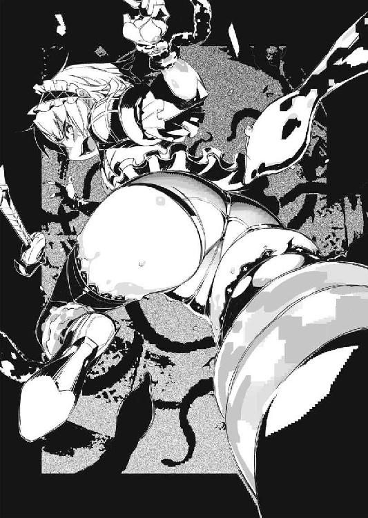
その殻の『口』にあたる部分には蓋の様に、三角形の甲羅が具わっている。
その下で、明らかに地上の生き物のものとは異なる──しかし形だけはそれと分かる眼球がぎょろりと動いている。そして触手は全てその眼球の下へと繫がっていた。
巨大なオウムガイ。
大海魔とは──少なくとも見た目には、概ねそのような生き物だった。
「無駄だ」
と──足搔く紅チャイカのすぐ傍で、別の触手の上に立っている亜人兵がそう言ってきた。紅チャイカの記憶に間違いが無ければ、最初にトールと斬り合っていた亜人兵だった。
「お前に大海魔の触手は解けない。諦めろ──『チャイカ』」
「............！」
愕然と亜人兵の顔を見る紅チャイカ。
自分を──自分達を『チャイカ』と知って襲ってきた？
「......何者!?」
「答える義務は無い」
亜人兵は紅チャイカを睨み据えながらそう告げる。
「大海魔──お前達、操って？」
「答える義務は無い」
亜人兵はそう繰り返す。
「............」
沈んでいく船が──明らかに遠ざかっていくのが見えた。
船が流されていくのではない。大海魔が、紅チャイカ達を捉え、そして別の触手や巻殻には亜人兵達を乗せて、移動しているのだ。
「............トール」
脱力しながら呟く紅チャイカ。
程なくして──船は完全に沈没して、見えなくなった。
第二章 敗残者達の島
ISLAND OF RUMP
逆巻く波濤の向こうに、それは傲然とそびえていた。
絶海の孤島──そのものである。
島の外縁は全て切り立った崖状になっていて、船を着けるべき場所が全く見当たらない。
近付いてから、岩に楔なり何なりを打ち込んで、絶壁を登る事は可能かもしれないが、そもそも絶壁に取り付く事が難しい。すぐ傍まで岩が幾つも露出する浅瀬が続いており、波も激しい為、大型の船で迂闊に近寄れば座礁するのは必至、小型の船ならば波と潮流に翻弄されて、崖や岩に叩き付けられるのがオチだろう。
魔法を使って、空からならば島に入る事は出来るだろうが......そこまでしてこの島に足を踏み入れねばならない理由など、普通の人間にはあるまい。
およそ人が住むには向いていない島である。
だからこそ──
「......！」
紅チャイカは愕然と息を吞んだ。
島を取り囲む海水が──ゆるやかに引いていくのだ。
潮の満ち引きとは違う。緩やかとはいえ、それは、はっきりと変化が目に見える速度でだった。しかも水位が局所的に低くなっているだけで、眼を転じれば、周囲では変わらず波が荒れているのが見て取れる。
これは──
「......魔法ね。棄獣の」
と言ったのは、紅チャイカの脇で、やはり同じ様に触手に拘束されているセルマであった。浅黒い肌の美女魔法師は、その切れ長の眼を細めて更に言った。
「この辺り、地形そのものを魔法で改造した痕がある」
「......！」
言われて見れば水が引いて露わになった幾つかの岩が──自然のものとは微妙に異なる、明らかな平面を呈している部分が何カ所か在った。まるで巨大な刃物で削いだかの様に。
逆に言えば、水が引かねば、それは人の眼に触れる事など在り得ない。
「............あれは」
幾つか並んだ平面の向こう──奥に、巨大な洞窟が口を開いている。
普段は水没して居るであろうそこに向けて、大海魔はゆっくりと進んでいった。
この在り様は一体──何者の仕業なのか。
水中を住処とする大海魔が、わざわざ水を引かせて、そこに巣穴を作るとも思えない。作り上げる際に大海魔の力を用いたのは間違いないだろうが──それを必要としたのは、多分大海魔以外の何者かなのだ。
「............」
紅チャイカは亜人兵達の方を振り返る。
彼等は黙って大海魔の触手や、殻の上に立っている。
一歩間違えば海中に転落しかねない様な足場の筈だが、その立ち姿にはまるで危うさが無い。尋常の平衡感覚ではないのだろう。彼等ならば谷間に張り渡した一本の綱の上でも走って渡れるかもしれなかった。
やがて──
「こりゃあ......」
やはり触手に拘束されているダヴィードが、啞然とした表情で声を漏らす。
洞窟の中に大海魔が潜り込むと──今度はゆっくりと水位が上昇し、入り口を水没させてしまう。迫り来る天井は──驚いた事に、まるで建物の中の様に、綺麗な平面ばかりで構成されていた。いや。壁も、そして『桟橋』もだ。
大海魔が辿り着いたのは、船着き場によく似た場所だった。
ただし大抵の船着き場が桟橋や幾つかの施設を、木材を組んで作るのに対し、此処は全て岩で出来ている。恐らくは先の浅瀬にあった岩と同様、魔法で岩を切り出し、あるいは抉って作られたのだ──この洞窟そのものが。
「海賊の隠れ家って感じだな」
「こんな大規模な隠れ家を造れる海賊が、居るとは思えないけれど」
とダヴィードの感想にそう応えるセルマ。
「......それよりもダヴィード。傷はいいの？」
「良くも悪くも傷の上に巻かれてるんでな、止血になってんだよ、これが」
と胴体に巻き付いた触手をぴたぴたと左手で叩いてダヴィードは言った。ちなみに右手は胴体と一緒に触手に巻かれたままで動かせない。愛用の槍は、亜人兵の一人に取り上げられてしまった様だった。
「心配したか？ んん？」
「............」
にやにやと笑いながら問うダヴィードに、セルマが顔をしかめて黙り込む。
なんだかんだと言っても、二人には未だ余裕が在った。亜人兵と棄獣の目的は分からないが、今すぐ自分達を殺そうという訳ではない様だと、理解したからだ。殺す積もりならば、途中で触手ごと海の中に突っ込んでしまえば事足りる。
「──戻りました」
亜人兵の一人が、大海魔の触手から桟橋部分に飛び降りながら言う。
あの黒と亜麻色の髪の......トールと斬り合っていた亜人兵だ。
その目は洞窟の最奥部、そこに穿たれた二回りは小さな孔に向いている。何処かに繫がっているらしく、微かに光が漏れてくるそこから、五名の男達が歩み出てきた。
「......人間」
呟く紅チャイカ。
そう。現れた男達は、いずれも普通の人間で、亜人兵ではなかった。
五名の内、二人は魔法機杖を携えている事からして、魔法師なのだろう。いずれも薄い灰色の長衣を身に纏い、薄革製らしい手袋に、同じく長靴、という格好が共通していた。
そして──
「......ようこそ」
亜人兵の事はまるで無視する様に、真ん中の男が、紅チャイカに視線を向けて言った。
男の顔には額から頰にかけて、大きな疵痕が走っている。
枯葉色の髪を短く刈り込み、四角い顎と太い鼻を備えた、見るからに厳めしい顔つきなのだが......その眼は半ば瞼を閉じるかの様な、奇妙に眠たげな様子で、凄惨な疵痕とは別に落ち着いた印象があった。
「歓迎しよう、チャイカ・ガズ」
疵痕顔の男は低い声で言った。
「君で五人目だがね」
「............!?」
唐突なその言葉に、眉をひそめる紅チャイカ。
トールが言っていた様に、『我こそは本物のチャイカ』と主張する者は、彼の傍に居る白チャイカを含めて何人か居るのだろう。そしてこの疵痕顔の男は、その事実を知っている。知った上で『チャイカ』を狩り集めているという事か。
（ひょっとして......）
この海域に『遺体』を運んでいた船が沈んだ、という噂は、この男達が故意に流布させたものではないか？ ──『チャイカ』を名乗る者を、集めて、狩る為に。
だとすれば......
「とりあえずチャイカ・ガズは六番に、他は十番にまとめて放り込んでおけ」
疵痕顔の男は、視線を亜人兵達に向けると......低く、奇妙に力のこもった声でそう命じた。
鋼鉄の爪が岩肌を搔く。
何度か試して引っ掛かりを確認すると、そこに体重を掛けて身体を引き上げる──延々と繰り返したその地道な作業の果てに、ようやくトールは断崖絶壁の上端へと辿り着いていた。
「......さて」
掌に塡めていた『鉄爪』を外しながら辺りを見回す。
近くに生えていた大きめの樹木に、懐から取り出した紐を結び付けると、トールは鉄爪をその先端に結んで投げ下ろす。下ではアカリ達が、トールの登攀の成功を待っている筈だった。
「隠れ家には絶好の場所なんだろうが......」
眉をひそめながら、呟くトール。
彼の目の前には──鬱蒼とした森が広がっていた。
要するに、森が島の外周、断崖絶壁の際にまで迫っているのだ。
外から見る限り、根を張る為の土もあまり無い様に見えるが──どうやら火山の火口の様に、縁の部分が最も高く、中央に行くほどに窪んだ様な構造に、この島はなっているらしい。木々は薄い土砂の上で先ず発芽して、成長するに従い、岩の隙間に根を這わせる様にして、この島の環境に適応しているのだろう。
周囲の断崖絶壁や岩礁で、人は容易にはこの島に近づけない。
また──海の上から眺めても、森という『壁』や中央部が窪んだ地形のお陰で、島の内部がどうなっているのかは分からない。
確かに、周囲の目から逃れて、ただ隠れるだけならば、絶好の条件と言える。
勿論、利便性は皆無に近い訳だが──
「......びっくり」
「確かにな」
と白チャイカの声に、トールは背後を振り返りながら応じる。
「って............おい」
溜息をついて肩の力を落とすトール。
「そんな事が出来るんなら先に言え」
とトールが半眼で睨むのは、チャイカ──ではなく。
彼女が背中の棺ごとしがみついている、フレドリカの方だった。
今の彼女は、少女ではなく、白銀の竜の姿をしている。
見るからに威嚇的な──長い首、長い腕、長い足、長い尾、そして大きく湾曲する角を具えた異形だ。顎を開けば、鋸の刃の様にずらりと並んだ牙を見る事も出来るだろう。
ただし今のフレドリカは、翼を具えていない。
代わりに四肢にはトールの『鉄爪』と同様、いつもよりも遥かに大きい爪が──岩肌に引っかけて登攀する為の爪が、具わっていた。
ちなみにフレドリカの背には、アカリもちゃっかりとしがみついている。
「だってトール、言う前に行っちゃうんだもん」
とフレドリカが答える。
ちなみに竜の姿を採っている一方で、声だけはいつもの少女のものである。
「微妙に不気味だから、その格好の時にその声で喋るな」
「はいはい」
軽い返事と共に、青白い光が装鎧竜の姿を覆う。まるでちょっとした爆発の様にフレドリカから四方八方に風が吹いて砂塵を巻き上げたかと思うと──塵煙が晴れたそこには、いつもの、金髪と紅眼の少女が立っていた。
「というか、飛べば簡単なのに」
「見つかるだろ。昼間に、遮蔽物が無い海の上じゃ。魔法は光るしな」
と膨れっ面で言うフレドリカにトールは言う。
トール達は、どさくさ紛れで一旦──沈む船に巻き込まれたのを装い、その中に潜んで亜人兵達と大海魔をやり過ごした。たとえフレドリカの助力が在ったとしても、あの場で戦うのは得策とは思えなかったからである。
水はチャイカの嫌水魔法──以前、航天要塞から脱出した時と同様、水を避ける作用力場を展開する事で耐え、その後、竜形態に戻ったフレドリカに摑まって水中を進んできた。
「見つかる？ 誰？」
と首を傾げるのはチャイカである。
「襲ってきた連中の親玉に、だよ。多分──あの亜人兵と大海魔の後ろに何者かが居る」
亜人兵達と大海魔を手下として使い、チャイカを狙っていた──何者かが。
「そもそも兄様──」
アカリがトールの横に並ぶと、眼を細めて森を見遣りながら言った。
「あの『紅チャイカ』を追いかけてくる必要は在ったのか？ 敵だぞ」
「......ああ、そういう事か」
トールは頷く。
折角、あの大海魔と亜人兵をやり過ごしたのだから、このまま逃げるという選択肢も在った。海に沈んだ『遺体』の噂が本当かどうかは未だ分からないが、態勢を立て直す為に一旦は陸に戻った方が、何かと融通は利く。
だがトールは亜人兵達を──というよりも、彼等に囚われた紅チャイカ達を追う事を選択した。
「それは──」
「そんなにも兄様は銀髪と、平らな胸が好きだと言うのか？」
トールの台詞の頭を押さえる様にしてアカリが言った。
「いや。あのな？」
「まさか一人では満足できないと言うのか？」
「むいっ？」
指さされて思わず左右を見回し──そして自分の胸元に視線を落とすチャイカ。
「何の話だよ」
「その驚く程の貪欲振り──」
アカリは拳を握りしめて言った。
「それでこそ兄様だ」
「お前は責めてるんだか褒めてるんだかどっちだ？」
「両方だ。勿論」
「......『遺体』を一つ手に入れたって言ってたからな」
と溜息を一つついて、トールは言った。
「紅チャイカを追ってきたというより、あいつの持っているであろう『遺体』を追ってきたってのが正しい。それと──」
トールはチャイカの方を振り返る。
「どうもあいつら、チャイカを──チャイカ達を、重点的に狙ってたろ」
「むい？ 私？ 達？」
と自分の頰を指さすチャイカ。
「気付けよ、お前も」
と言ってからトールは森の方を見遣る。
「連中──何が目的か知らないが、正体をはっきり摑んでおかないと、後で色々面倒な事になりそうだしな。ひょっとしたら『遺体』を積んだ船が沈んだって話も、連中がチャイカをおびき寄せる為に撒いた餌だって可能性が在る」
「ふむ......」
とアカリが頷く。
彼女はしばらく腕を組んで何事か考えている様だったが......
「ところで兄様。気付いているか？」
「近くに、やたら色々な──それも妙な気配があるって事か？」
トールは言った。
「いや。実はさっき、生理が始まってな」
きりっ......と表情を無意味に引き締めてアカリは言った。
「報告せんでいい！」
「大事な事だぞ。さすがの私も、生理中は戦闘能力が一割ほど落ちるかもしれない」
「とてもそんな風には見えないけどな」
「そうは見えない様に隠しているのだ。乙女の恥じらいという奴だな」
「恥じらう乙女が、生理日を自己申告してくんな」
言ってから──トールは改めて眼を閉じて辺り一帯の気配を探る。
元より森というものは、生命に満ちあふれ、様々な気配が入り乱れているものではあるのだが──そこには大抵、ある種の均衡が生まれる。森が『養える』生き物の数と種類には自ずと制限があるからだ。植物の数。昆虫の数。草食動物の数。肉食動物の数。そしてそれらの棲み分けと行動時間。これらの比率は概ね何処の森でも同じで──だから『気配』も似てくる。
特に支配種──その森で最上位に位置する獣は、大抵、一種か二種に限られ、個体数においても他の動植物に比べて圧倒的に少数であるのが常だ。それを以て人間は『森の主』と呼んだりもする訳だが──
「少し調べてみるか。チャイカ」
「むい？」
「魔法で森の中をあちこち見る事は出来るか？ 魔法の光を見られたら困るからな、その岩陰に回り込んでくれ」
「うい。任せる、希望」
頷くと、チャイカはトールの指さした岩の陰に入って機杖を操作。
「トリ・ジ・コンタ・サティア・ワム・エイ・コーグ──」
呪文詠唱と共に青白い光が虚空に滲み、光で描かれた『部品』が同心円上を回転する。それらはやがて互いに嚙み合って、一つの魔法陣として完成した。
「顕れよ──〈隠れ窺うもの〉」
次の瞬間、チャイカの周囲に幾つもの『泡』が浮かんだ。
いや。それは勿論、実体の在るものではない。蜃気楼の様に、何処かから切り取られてきた光景──虚像が、球面を成して映し出されているのだ。
それらは、ゆっくりとチャイカの周囲を巡る。
「......やっぱりか」
トール達は、チャイカの傍に立って、そこに映し出されるものを見つめた。
「これは独角馬か？」
「こっちは双頭犬だな」
泡の上に映し出されたのは──トール達が過去に出会った事のある棄獣だ。
「奇眼鳥も居るな」
アカリが別の『泡』を見つめて言う。
「棄獣大集合か」
「装鎧竜も居るね」
とフレドリカが言う。
確かにそこには──色こそ彼女とは違うが、装鎧竜らしき姿の大型獣も映っている。
「しかも海には大海魔か。どうなってんだ、本当？」
基本的に、棄獣は相互の折り合いが悪い。
棲み分けが出来ているというか──一種の棄獣が生息していれば、他の棄獣がその地域に居る事は珍しい。勿論、騎士と契約した装鎧竜や、魔法師に操られた独角馬、双頭犬、奇眼鳥、等──つまり何らかの不自然な力が働いている場合は、この限りではないが。
「......んん？」
ふとフレドリカが首を傾げる。
「どうした？」
「んー......装鎧竜には間違いないんだろうけどさ」
装鎧竜の化身は珍しく、困惑するかの様な表情で言った。
「なんだか私とは違う感じがするんだよね。同族に会った、って気がしない」
「............ふむ？」
トールは眉をひそめて腕を組む。
これはあの大海魔が、亜人兵達に協力していた事と何か関係が在るのか。
「棄獣を、装鎧竜や大海魔も含めて、操れる様な......新しい魔法技術があるって事か？」
ガヴァーニ領で出会った魔法師も、新たに自分で開発した術式を用い、本来ならば恒常的に支配出来ない筈の兵士達を、大量に操っていた。
魔法は技術であり、機会と時間と費用があれば、当然に変化し、進歩し、発展する。
昨日まで出来なかった事が、明日も出来ない、とは限らないのだ。
「いずれにせよ、これはちょっと厄介かもな」
改めて森を眺めながら──トールは物憂げにそう言った。
手枷を塡められた状態で、紅チャイカ達は奥へと連行されていた。
既に洞窟とはとても呼べない、四角く綺麗に切り抜かれた通路を、歩かされている。前後から紅チャイカ達を挟むのは亜人兵達だ。
通路には点々とランプが焚かれ、換気の為か、壁や天井には一定間隔で孔が穿たれている。
そして、そこを通って聞こえてくるのは──
「......獣？」
紅チャイカは呟く。
それは確かに獣の唸りや吠え声だ。風の音がそう聞こえる場合もままあるが、その場合は一定の調子の繰り返しになる事が多い。幾つもの種類の低い『声』が入り交じり反響する様子は、明らかに生き物の──それも数多くの──声だった。
「............」
やがて──紅チャイカ達は開けた処に出た。
巨大な縦穴の様な処で、壁に沿ってぐるりとテラス状の通路が設けられている。縦穴の底はちょっとした広場ほどの広さがあり、何やら幾つもの魔法機関らしきものが置かれていた。それらはいずれも、低い唸りを上げて稼働中の様だ。
そして......
「──あれは」
縦穴の片隅......そこに硝子製らしき球体が幾つも並べられている。
大きさは様々で、人間が両腕で抱えられそうな大きさのものも在れば、鋼の骨組みで補強された、その十倍以上の規模を持つ代物も在った。中には液体が満たされている様で、泡が時折、上がっているのが見える。
だが何よりも紅チャイカの注意を引いたのは──その中身。
「亜人兵？」
「双頭犬も居るわね」
紅チャイカの呟きに──すぐ後ろを歩いていたセルマが応じた。
硝子球の中に、亜人兵や双頭犬が身を丸めて収まっている。奥の方には他にも奇眼鳥、独角馬の姿も見受けられた。その全てが、眼を緩く閉じていて眠っている様に見える。
「多分、錬生術の研究施設」
「錬生術......」
「錬金術から派生した魔法技術の一分野よ。生物を弄る事に特化してる」
セルマは無表情にそう解説してきた。
「亜人兵を造り出した技術も、錬生術の一環。魔法技術の例に漏れず、一番進んでいたのはガズ帝国だって話だけれど」
ガズ帝国の魔法技術の多くは、皇帝手ずからが手がけたものだ。枝葉の技術は勿論、配下の魔法師達によるものだが、アルトゥール・ガズが全体の指揮をとって発展させてきた事は間違いない。
ガズ皇帝は、自身の素性や身辺について秘密主義を貫く一方で、魔法技術の機密保持に関しては随分と杜撰だったと言われている。この為に、ガズ帝国からは数多くの魔法技術が他国に流れ、それは結果的にガズ帝国滅亡の一因となっていった訳だが......あるいはガズ皇帝自身は、自分達が最先端を行っているという自負から、遅れた技術を必死に漁る他国の力を、見くびっていたのかもしれない。
実際には多少の技術的先進性も、連合国軍の圧倒的物量の前には、押し潰されるだけだった訳であるが。
「......ガズ帝国」
ふと足を止めて紅チャイカは呟く。
それは自分の生まれた国──である筈だが。途中に記憶の欠落が在って、全てが一本の線の延長上に無いせいか、何処か遠い国の事の様にすら思える。
「あれってラーケ語の文字だよな？」
更に、後ろからダヴィードが声を掛けてくる。
言われて見れば、通路の端や、魔法機関の上に、標識や注意書きらしき文字が書き込まれているのが見える。走り書きで乱れているものが多いので、判別はしにくいが──確かにラーケ語、つまりガズ帝国の公用語に似ている。
「つまり此処は、ガズ帝国に縁の何か？」
セルマが改めて周りを見回しながら呟く。
「でも──それなら、どうしてチャイカを狙う様な真似をしたか、という疑問が残るわね」
「まああの白いのに限らず、ガズ帝国の後継者を名乗ってる奴はちょこちょこ居るみたいだけどな。そういう奴が、『自分以外は邪魔』と考えて──って事は？」
ダヴィードが軽い口調で言う。
彼自身もあまり信じていない様な物言いだが──
「......でも」
紅チャイカは足元に視線を注ぎながら言った。
あちこちのランプから注がれる光で、曖昧な影が歩く彼女の下に揺れている。
明確な輪郭を持たず、幾重にも重なる──影。
「チャイカ──私を。そう呼んだ」
「............」
顔を見合わせるセルマとダヴィード。
確かにダヴィードの説が正しいなら、此処の人間が紅チャイカを『チャイカ』の名で呼ぶのはおかしかろう。『偽物』なり何なり、他に相応しい呼称は在る筈だ。
「──黙れ。歩け」
先頭を行く亜人兵が立ち止まって振り返り、そう言ってくる。
「聞き分けが悪ければ、指の一本や二本は切り落として良いと言われている」
「つまり、殺していいとまでは、言われてねーんだ？」
ダヴィードがからかう様に言った。
「............」
亜人兵は黙って──頷く。
次の瞬間、ダヴィードの後ろについていた亜人兵が、彼の脇腹を殴った。
「ぐおっ......」
血は止まりはしたものの、勿論、まだ治ってなどいない傷である。ダヴィードは呻いて身を揺らす。その場に跪かなかっただけでも、大したものであるが──
「お前達は生きていた方が利用価値が高いから、生かされているだけだ。双頭犬や独角馬、奇眼鳥は、生きた人間の方を喜んで食うからな」
先頭の亜人兵が言う。
「............くそったれ」
呻くダヴィードを、そして表情を強張らせる紅チャイカ、セルマを順に眺めてから、亜人兵は、感情のこもらぬ低い声でもう一度言った。
「黙れ。そして歩け」
「............」
此処で無理に逆らっても益は無い。
紅チャイカは、亜人兵達を睨み──そして前を向いて歩き出した。
扉を叩く音に、ヴィクトル・イズマッシュは顔を上げた。
大きな疵痕の在る顔を歪め、扉の方を睨む。
研究作業を中断されるのはヴィクトルが嫌う事の一つだが──時間的に亜人兵が定期的な報告に来る時間であると思い直して、咳払いを一つ。表情を落ち着いたものに整える。
「──開いている。入れ」
そう扉越しに言うと、『失礼します』と一言断って、亜人兵が一人入ってきた。
予想通り──亜人兵部隊の隊長であるキリル・タトラ４７だ。
亜人兵は、特定の能力を引き伸ばした結果として、均衡を失う個体も少なくないが、その意味でキリルは、例外的に完成度の高い個体だ。
体格も兵士としては理想的で、精悍な獣の様な強靭さが、その姿からも窺える。
目付きは鋭い──というよりも眼光が強く、精神面でも比較的、安定している。他の亜人兵に対しても影響力が在る事から、ヴィクトル達は彼に隊長役を任せていた。初期に配属された本国製の亜人兵達は、魔法で動かす訳にはいかない。統率者が必要なのだった。
「報告いたします」
キリルは敬礼してから、型どおりにそう告げてきた。
「今回の『チャイカ』捕縛任務は、現場において予想外の事態が発生いたしました」
「......聞いている」
ヴィクトルは眉をひそめて言った。
「二組、乗っていたそうだな」
黙っていても『チャイカ』が寄ってくる様にと、『遺体』を乗せた船が沈没したという噂を流させたのは、ヴィクトル達だ。
だがまさか二組の『チャイカとその一味』が同じ船に乗り合わせるとは思っていなかった。しかも当初、港の監視として置いていた者からの連絡では、一組の報告しか受けていなかった為、派遣した亜人兵部隊も、その積もりで動き、現場で予想外の状況に出会す事となったのだ。
結果──
「片方は取り逃がしました」
「そちらについては、改めて大海魔型擬獣三号と四号、奇眼鳥型擬獣の第六群を問題の海域の探索に派遣する様、申しつけてある。最悪、死んでいても死体は回収出来るだろう」
ヴィクトルは言った。
正直な処──彼はキリルの存在を鬱陶しいと感じていた。
新しい『チャイカ』が手に入ったのだ。早く準備を整えて情報を得たい。情報を得れば得るだけ先に進める。そして一瞬でも早く到達するのだ──最終段階に。
この五年間......その一念でヴィクトルは俗世から離れ、この孤島に仲間達と共に籠もって研究を続けてきたのである。その他の事は全て、優先順位の低い雑事に過ぎない。
「報告はもういい。下がれ」
ヴィクトルは、再び机に向かいながら片手を振って見せる。
しかし──
「──遺体回収、ですが」
キリルは何故か、食い下がった。
「その際に、仲間の遺体も一緒に回収していただけないでしょうか」
「............」
苛立ちを堪えて、ヴィクトルはキリルを振り向く。
亜人兵の隊長は、無表情の仮面に感情を押し込める様にして、続けた。
「今回の任務で三名が負傷し、船の沈没に巻き込まれて死亡しました」
「兵士の死傷は基本的に想定内だ」
まして亜人兵は使い捨ての消耗品──少なくともヴィクトルはそう考えていた。
ガズ帝国滅亡の直前、本国から送られてきた亜人兵は既に半分にまで減ったが、既に代替用亜人兵の──擬人兵の『量産』技術は確立している。足りなくなれば生産すれば良い。
「そも兵士の死は大抵が野垂れ死にだ。死体など回収出来ない事の方が多い」
「はい。しかし──」
「何かね？ 皆で追悼の宴でも開こうと？」
じわりとヴィクトルの口調に苛立ちが滲む。
「......いえ」
キリルが首を振る。
ヴィクトルはしばらく、この亜人兵の隊長を睨み据えていたが──
「ブルダニンに頼め」
ヴィクトルは再び机に向き直りながら、言った。
「現場探索の棄獣共は、彼が制御している」
「......は。ありがとうございます」
キリルは敬礼すると、ヴィクトルの部屋を出て行った。
直接、脳をいじくって服従する様にしてある擬獣や、この島で量産試作された擬人兵と異なり、本国製の──初期生産型の亜人兵は時折、こうした予想外の反応をしてきてヴィクトルを苛立たせる事が在る。
「面倒な奴等だ」
ヴィクトルはそう呟くと、再び作業工程表をまとめる行為に没頭した。
悠然と森の中を、独角馬の群れが進んでいく。
いや。それは群れというよりも、『部隊』と表現した方が正しいだろう。
木々の間を進むその姿は、綺麗に整列しており、一糸乱れぬ規律の正しさが見て取れる。
本来、その姿に反して、単独狩猟性の肉食獣である独角馬は、当然、縄張りを持って、他の個体を排除しようとする傾向にある。この様に集団を成す事は本来、繁殖期でもない限り在り得ないし──ましてや、この様に整然と並んで行進するなどという事も、在り得ない。
「どうなってんだこれは」
トールは、木陰から眉をひそめて、その様子を眺めていた。
少し離れた処にはチャイカ、アカリ、そしてフレドリカの姿も在る。トールだけが先行しているのは、気配を絶つ技術を持たないチャイカやフレドリカが、独角馬達に存在を察知される可能性があったからだが──
「............」
トールは足音を殺して、チャイカ達の処へと戻る。
「訳が分からない。隊列組んで行進する独角馬とか」
「さっき装鎧竜が飛んでるのも見えたけど」
とフレドリカが首を傾げて言った。
「やっぱりなんか、違う感じがするのよね。上手く言えないけど」
「............違う、か」
トールはフレドリカの感じている違和感がなんなのかは分からないが、少なくともこの島に居る棄獣達が普通で無いのは、間違いなかろう。
「──兄様」
ふとアカリが、トールに注意を促してくる。
彼女が指さすのは、独角馬達が向かう先だ。
そこは小さな丘の様になっていて──斜面状になっている地面が、突如として割れた。
いや。実際には地面が割れたのではない。恐らくは斜面に偽装した形で出入り口が設けられていて、そこに取り付けられた扉が開いたのだろう。まるで風景の一部を切り取ったかの様に、斜面が、上に生えている草木ごと横にずれて──その中から、木箱の様なものを運び出してくる亜人兵達の姿が見えた。
木箱。中身は──
「......餌か」
呟くトール。
その箱の中には、生肉らしきものが満載されているのが見えた。
やがて独角馬達は整然と──まるで配給か何かを受ける難民の様に──並んで、亜人兵達が投げて寄越すそれをくわえては、去って行く。明らかにそれは、餌付けの場面だった。
「......あの連中が棄獣を飼ってる訳か？」
「どうもその様だ」
とアカリが頷く。
「だが棄獣っていえば基本、人とみれば襲う怪物だろう。それが亜人兵とはいえ──」
「へえ、そうなの？」
と首を傾げて聞いてくるのは、あろうことか、その棄獣の中でも戦闘力では一、二を争うと言われる装鎧竜の化身だったりする訳だが。
「......装鎧竜や大海魔は別にして」
トールはフレドリカから視線を逸らして、妹の方を見る。
「しかし本当に何なんだこれは......？」
「......稀少な可能性」
ふと口を挟んできたのはチャイカである。
「錬生術による改造......？」
首を傾げてチャイカは言った。
「なに？ 練生術？」
「魔法技術。その一つ。生物改造。身体改造。身体複製。装鎧竜の魔法──模倣と再現」
「装鎧竜の魔法みたいに、生き物の身体を作ったり出来る？」
「多分」
こっくりと頷くチャイカ。
確かにフレドリカの──装鎧竜の魔法は、変身、つまり身体変化の効果を発揮する。傷を消すのは勿論だが──その気になれば腕や足を増やす事も、それまで備わっていなかった翼や角を生やす事も可能になるらしい。
そうした『生物の身体を扱う』魔法の延長ならば、棄獣の身体を改造したり、棄獣そのものを複製したりする事も可能なのかもしれない。
（......もしそれが可能だとして。何処までが可能なんだ？）
ふと、そんな事を想うトール。
例えば極端な話──トールを縦に真っ二つにした状態から、フレドリカに嚙み付いて貰い、変身の魔法で『修復』して貰った場合、トールは二人になるのか。それとも片方が無傷に戻って、もう片方は半分のまま朽ち果てるのか。
後者だとすれば、無傷に戻る側と、朽ち果てる側、その違いは何処に出る？
フレドリカに嚙み付かれた方か？ だとすれば仮にもう一体装鎧竜が居て、二体が同時に、二等分されたトールに嚙み付けば、どうなる？
トールは二人に増えるのか。
それとも──
「............」
「トール？」
チャイカが、黙り込んだトールの顔を怪訝そうに覗き込んでくる。
「いや......なんでもない」
そう答えるものの、トールの脳裏には一つの疑問が居座っていた。
複数存在する『チャイカを自称する者』──彼女等がもし、上記の様な方法で数を増やされた存在だとすれば？
「兄様。どうする？」
アカリが件の出入り口の方を見ながら言った。
丁度、独角馬に餌を与え終わった亜人兵達が、木箱を中に運び込んでいる処だ。
「地上でうろつくより、あの中に入った方が見つかる可能性は低いかもしれない」
「......ああ。そうだな」
チャイカ、フレドリカにその場に残る様言い置いて、トールはアカリと共に斜面に開いた扉の方へと近付いていく。扉が完全に閉まるのを待って、二人はそこに駆け寄った。
「良く出来てるな」
「確かに、少しはなれて見れば分からない──が」
トールは頷いて、その『扉』に触れる。
一見、普通の斜面と同化していて、そこに出入り口があるなどとは分からないが......近付いてみれば、土砂や枯葉、小石といった諸々が樹脂の様なもので固定されているのが分かる。
「在った。これだ」
『扉』の表面やその周囲を掌で探っていたトールは、やがてある一点を見つけ出した。
『扉』の表面ではなく、その脇に、一カ所だけ不自然に樹脂で固定されている小石が在る。これを弄っていると──金属音がして、僅かだが『扉』が動いたのが見えた。
「警報の類が、仕掛けられてなければいいんだがな」
トールはゆっくりと扉を開いて、中の様子を窺う。
ひんやりとした岩の壁や床が、延々と続く通路が、延びているのが分かったが──奥がどうなっているのかは、さすがに、外から窺い見るだけでは分からない。
「特に警報の類も無し、か」
「元より人間に対するものではないのでは？」
とアカリ。
外部からこんな絶海の孤島に侵入してくる人間がそうそう居るとも思えないし、普通の人間なら棄獣の姿を見た途端に、この島を出て行くだろう。最初からこの『扉』は人間の侵入者を想定していないのだ。あくまで外部から──空から、あるいは魔法による遠視など──目立つ人工物が見咎められないように、という程度のものでしかないのだろう。
「何にせよ、外よりは安全だろう。忍び込むぞ」
トールはチャイカ達を手招きしてから、先に中へと滑り込んだ。
続いてアカリ、そしてチャイカ、フレドリカの順で入ってくる。
「凄いなこれは」
トールは壁を拳で軽く叩きながら言った。
表面は──驚く程に滑らかで、光の具合によってはトール達の顔が映り込みそうな状態だ。通常の工法で此処までするのは手間が掛かりすぎる。魔法で加工されたのは明らかだった。
「............」
わずかに下向きの傾斜のついている通路を、歩いて行くトール達。
しばらく歩くと、不意に通路は開けた場所に繫がった。
「これは......」
「──桟橋？」
トールの脇からひょいと顔を出して呟くのはチャイカである。
確かにそこは──船着き場の様な様相を呈していた。
トール達の通ってきた廊下は、巨大な洞窟状の空間に繫がっており、その底──トール達から見て足元よりも更に下、建物で言えば二階層ばかり下に、大量の水が満たされていた。壁から枝の様に桟橋が幾つも延びているが、水面が殆どで、人間の立てる場所はあまり無い。
そして──
「やっぱりアレもそうなのか」
そこには船ではなく──大海魔が数体、佇んでいる。殆どの部分は水面下だが、あの巨大かつ特徴的な殻は見間違えようが無かった。
「しかもこれは......」
トールはすぐ脇の壁に貼り付けられた木製の板を見る。
そこには文字が書かれているのだが──
「ラーケ語だな」
アカリが言った。
「むい？ あ──」
チャイカが今更の様に気付いたようで、眼を丸くする。
「本当だ。ラーケ語だ......懐かしい」
と彼女がまさにそのラーケ語で呟くのが聞こえた。
「つまり此処は、ガズ帝国縁の場所って事か？ だとすると──」
トールは眉をひそめて辺りを見回す。
あの亜人兵達が、明らかにチャイカを狙っていたというのは、どういう意味なのか？
ガズ帝国の残党が、正当後継者をお迎えに上がった──という雰囲気でなかったのは間違いない。他の『チャイカ』を担ぎ上げている集団が、『偽物』の排除に乗り出したという事か？
「また、面倒な事にならないといいがな」
トールは溜息交じりにそう呟いた。
「......ヴィヴィ」
声を掛けられて振り返ると──そこにはズィータと、そしてニコライが居た。
二人が居るのは、〈エイプリル〉号の内部、個人用の寝台などが置かれている区画の入り口だ。内部は比較的余裕を持って作ってある〈エイプリル〉号だが、それでも機車は機車、どうしても狭い通路の様な場所が出てくる。
ズィータは気遣わしげにこちらを見つめており、ニコライは壁に背中を預け、反対側の壁に足をついている。まるで『行かせない』と告げているかの様な体勢だった。
「とりあえず、本部と連絡がついた」
と言ってきたのはニコライである。
彼はヴィヴィの方ではなく、壁についた自分の爪先に視線を注ぎながら言った。
「隊長の死亡により、任務は一時中断、王都に帰還しろ、との命令だ」
「......そう」
ヴィヴィは呟く様に言った。
「で──お前は何をしてる？」
「............決まってるでしょ」
ヴィヴィは、唸る様な声で言った。
「ジレット様を生き返らせるのよ。レオナルドが持ち帰った腕は、悪いけれど、私が貰うわよ。生き返らせるのに、どうしても身体の一部がいるらしいから」
「棺にでも入れて担いで歩くか？」
皮肉げな口調で問うニコライ。
「......そうね。それも、らしくていいかもね」
暗い笑顔を浮かべてヴィヴィは言った。
「話はレオナルドから俺も聞いたが──胡散臭すぎるだろうが。そんな話」
確かに死者を復活させる技法があるなどという話、出鱈目と考えるのが普通だろう。
魔法は確かに死者の記憶を消費して発現するし、高度な魔法になれば、傷の修復や病の治療に用いられたりもするが......それと『命』そのものを取り扱う事、それも死者を蘇らせられるかどうかは、まるで別物だ。
しかし......
「それは、そうなんだけどね」
とヴィヴィは首を振った。
「でも駄目なの。私、このままジレット様の死を受け入れるとか、頭がおかしくなりそう。何かしていないと。この無慈悲な現実に抗う何かを。それがどれだけ夢物語に等しくても、どれだけ実現の可能性が低くても」
「............ヴィヴィ」
痛ましげにズィータが呟く。
「元々私は......帰る場所も別に無いし。全てが噓で、何もかもが無駄になって、何処かで野垂れ死んでも──駄目で元々よ」
そう言うとヴィヴィは、改めてズィータとニコライの方に向き直る。
「だからどいて。行くわ」
「......ヴィヴィ！」
「ズィータ......お願い。どいて」
ヴィヴィは表情を緩めて懇願する。
友達に手荒な事はしたくなかった。
「勝手に行かせられねぇな。第一、お前一人で何が出来る？」
ニコライが言った。
「何かは出来るわ」
ヴィヴィはきっぱりとそう返す。
「少なくとも、壁に向かってただ泣いているよりは、意味の在る事がね」
「結果が出せなきゃ同じだ」
ニコライはにべもなくそう言い──
「こういう事はやっぱり、部隊できちんと統一意思の下に動かねえとな」
「............は？」
一瞬、意味が分からずそう問い返すヴィヴィ。
だが──
「自分一人が隊長の事を、大事に思ってました、てな顔してんじゃねえぞ、こら」
ニコライは足を降ろしてヴィヴィに向き直る。
「なめんなよ。俺等もあの人には大なり小なり恩があるし、本当に生き返らせる手段があるってんなら、黙ってられねえよ」
「......あんた」
眼を丸くするヴィヴィ。
「いいから一旦、荷物置け。これからどう動くか、相談するぞ」
ニコライは〈エイプリル〉号の真ん中の客室を──皆で何かを相談する時はいつもそこだ──指さしてそう言った。
一体どれだけの規模があるのか。
通路を警戒しつつ進みながら、トールは戦慄を覚えていた。
縦に大きいか横に大きいかの違いは在れど、先日の航天要塞と同等か、それ以上の規模がこの島には──施設にはある様だった。
しかも、通常の砦や要塞とは、造りも違う。
恐らくは錬生術研究用の施設であるからだろうが──厄介なのは、トールの乱破師としての知識が殆ど通用しない事だった。何処に何が在るのか、よく分からないのだ。
「............」
小さな鏡をそっと掲げて、曲がり角から、通路の先をのぞき見る。
丁度──亜人兵が二人、台車の様なものを押して歩いてくるのが見えた。
（......隠れろ）
トールはアカリに指先の手話で指示。
アカリは頷くと、チャイカ、フレドリカを促し、手近な場所に在った窪みへと身を潜める。それを確認してからトールは辺りを見回すと──音も無く床を蹴って、壁の上端と天井の間に両手両足を突っ張る形で身を支えた。
「............」
天井に張り付く形になったトールのすぐ下を、亜人兵二人が通り過ぎる。
どちらも若い娘の様だった。
押している台車には食器らしきものが──木製の皿とスプーンが載っているのが見える。少し汚れているので、明らかに使用済みのものだ。
（棄獣はスプーンを使わない。そして先端の尖った食器は無い。となると......）
この先に捕虜、つまりは紅チャイカ達が囚われている可能性が高い。
亜人兵の二人が真下を通り過ぎた処で、トールは床に降りた。
「──!?」
音は殆ど立てなかった筈だが、さすがに気配に気付いたか──亜人兵の娘達が揃ってトールの方を振り返ってくる。ただ、自分達の根城の中で警戒心を緩めていたせいか、振り向くと同時に、腰に提げた新月刀に手を掛けるまでの素早さは無い様だった。
「何者──」
二人は改めて、腰の新月刀に手を走らせる。
「ぐはっ!?」
右側の亜人兵はトールに当て身を叩き込まれ──崩れ折れる。
だが左側の亜人兵は、その間に新月刀を抜き放っていた。
素早い踏み込みでトールに向けて突きを──
「......かはっ？」
繰り出そうとしたその瞬間には、その亜人兵も短い吐息を漏らしてその場に倒れていた。
後ろから駆け寄ったアカリの当て身である。
「普通に効くか」
とアカリが呟いたのは、亜人兵に当て身を喰らわすのが、初めての経験だからだろう。実の処、亜人兵についてはトール達も話に聞いている程度で、その身体が見た目通り人間と同じなのかどうかも分からないのだ。最悪──当て身が全く効かない可能性も在った。
「さて──」
トールは倒れた亜人兵の脇に屈み込むと、その服を脱がし始める。
体格的に、アカリならば、この亜人兵達の衣装を着てもそう違和感は在るまい。施設の中は全体的に薄暗いので、獣耳と尻尾は、それぞれ、紐や髪型をいじる事で誤魔化す事が出来るだろう。要は相手がこちらに気付くまでの時間が、多少なりとも稼げれば良いだけの話である。
「兄様。兄様は実は獣の耳や尻尾に興奮する性質であったか」
「あ......？」
とアカリの方を見上げてから。
「......何処をどうしたらそうなる？」
「いや。当て身で気絶させた娘二人の服を脱がせようとしているのでな」
「トール、趣味──特異？」
「あ。そうなんだ。じゃあ私も獣耳と尻尾つけようか？」
チャイカが驚いた様に眼を丸くして言い──更にフレドリカはいつの間にか、亜人兵の様に獣状の耳と尾を備え、これをぴくぴくと動かして見せた。
「しかしさすがは兄様。婦女子を手込めにするのに時と場所を選ばないな」
「誰が手込めにするつったか」
唸る様に言いつつも、トールは手を止めない。
「──まさか」
アカリは眼を丸くして──これがまた白々しい──言った。
「そ、そうか。兄様。私とした事がとんだ勘違いを」
「念の為にどう勘違いしていたか、聞いていいか？」
「私はてっきり、兄様が、この亜人兵の婦女子を手込めにする為に服を脱がそうとしていたのかと思ったのだが......」
アカリも亜人兵の脇にしゃがんで服を脱がせながら言った。
「なるほど、実は自分が着て堪能する為だったのか。何という上級者......」
「堪能とかしねえって言ってるだろ」
「すまない。だが兄様、私にとって兄様は兄様、女装趣味があったとて、私の兄様への敬愛は変わらない──......いや、ひょっとして姉様と呼んだ方が良いのか？」
そう言って首を傾げるアカリ。
相変わらず表情に乏しいので、今一つ本気か冗談かの区別が傍目にはつきにくい。
「黙れ。偽装だよ。お前が着替えろ。俺がこの服使って──とも思ったが、フレドリカが亜人兵みたいになれるんなら、フレドリカに着てもらった方がいいか？」
「私は服も皮膚から作れるから、トールが着れば良いと思うよ？」
「......え？ いやそれは」
フレドリカの台詞に一瞬躊躇するトール。
「うむ。兄様。フレドリカもああ言っている。チャイカではさすがに大きすぎるし、ここはやはり兄様が女装すべきだと、私も強く提言する」
「偽装だ、偽装！」
トールは言って、溜息をつく。
「こんな通路の真ん中で漫才やってる場合か。とりあえず、こいつらを引っ張り込んで隠しておく場所を確保しねえと」
いくら偽装しても気絶した亜人兵が見つかっては、意味が無い。
トールは通路の傍に幾つか並んだ扉を調べていく。
そして──
「............ん？」
その扉には鍵が掛かっていなかった。
トールがこれを開いて中を覗き込むと──その理由が分かった。
二重構造になっている。
部屋の中にまたもう一つ、部屋が作られているのだ。そしてそちらは──分厚い硝子と鋼鉄らしい『壁』で仕切られたそこには、見るからに頑丈そうな──トールの腕ほどもある太さの鉄柱が三本、壁や床に刺さる様にして、その出入り口の扉を固定していた。
要するにこれは──牢屋だ。
だが......
「......!?」
トールは身を強張らせる。
外から探った限りでは、人の気配は無かった筈だ。
なのに、その硝子張りの牢獄の中には、一人の少女が座っているのが見えた。
部屋が二重になっているせいで、この少女の気配に気づけなかったのか？
それとも──
「どうした、兄様？」
アカリがトールの脇から部屋の中を覗き込んで言う。
「む？ これは──」
アカリは驚いた様子でその『牢獄』に歩み寄ると──その内側に居る少女を見つめる。
何処か、奇妙な雰囲気の在る少女だった。
いや。変わった雰囲気というのであれば、チャイカやフレドリカも相当に、変わってはいる訳だが──彼女等に比べて、ひどく茫洋としているというか、存在感が希薄である。
まるで置物の様に、そこに座っているだけだ。
トール達が部屋に入ってきたのを見ている筈なのに、驚く様子も無く──反応らしい反応を示さない。瞬きしなければ、人形かとトールは勘違いしたかもしれなかった。
それに──
（この眼──）
確か金銀妖眼と呼ぶのだったろうか──左右の眼の色が違う。
右はまるで血を詰め込んだかの様な真紅、左は、淡い、内側からまるで光が滲んでいるかの様な、透明感を伴う蒼。右は何というか、フレドリカの眼の色とそっくりで──左はむしろ義眼の様な、硝子玉がそこに塡まっているかの様な、不思議な印象である。
（魔法の光の色に似てるな）
ふとそんな事を想うトール。
顔立ちは整っているが、未完成というか、多分に幼い印象が強い。
髪は薄い紫で、長く伸ばしたそれを──座っているだけで、先端が床に達してわだかまる程に長いそれを、頭の左右で二条に括っている。
「むう......」
アカリは感心した様に言った。
「ほんの少し会わなかっただけで、随分と、様変わりしたな、こちらのチャイカは」
「............あのな」
思わずその場で傾きかけた身体を何とか立て直して、トールは言った。
「別人だ、別人！」
「分かっている。冗談だ」
「............」
トールは溜息をついてその少女を改めて観察する。
頭部に何やら絡繰り部品めいた髪飾りを付けている上──よく見ればその耳は少し尖っている。そもそも身につけている衣装も、指先が見えない程に長い袖で、しかも見た限り生地が麻でもなければ絹でもない、妙に滑らかそうな部分が在る。
「亜人兵の一種か？」
「だとしてもどうしてこんな処に閉じ込められているか、だが」
とアカリが言う。
「大体なんなのだ、この衣装は？ 拘束着か？」
確かに少女の着ているそれは、拘束着とよく似ていた。長い袖をそのまま身体に縛り付ける事で両腕の自由を奪う──という使い方をするのだ。
だが今現在、少女の袖は、別にその様な状態にはなっていない。
「どうしたの？」
「むい？」
気を失った亜人兵二人を軽々と引きずりながら、部屋の中に入ってくるフレドリカ、それにチャイカが、トール達の様子を不思議そうに眺めている。
「いや。何だか先客が居たんだが──」
トールは彼女等に場所を譲る様にして、出入り口に戻り、扉を閉める。
「何者かよく分からなくてな。まあ騒ぐ様子が無いから、無視しても良いんだろうが」
「んん？」
「むい？」
チャイカとフレドリカは揃って硝子越しにその少女を見つめる。
「............」
ぼんやりと──表情らしい表情も示さなかったその少女は、ふと瞬きをした。
そして──
『──チャイカ』
「むいっ!?」
名を呼ばれてびくりと身を震わせるチャイカ。
「──む？」
アカリとトールも驚いてその少女を見る。
少女は......それまではろくに反応すら示さなかった少女は、立ち上がって硝子越しにチャイカの方へと近付くと、ぺたりと両手を硝子に当てて、更にラーケ語でこう言った。
『待っていた──チャイカ』
暗澹たる気持ちを抱いて、宿舎の扉を開く。
自分達が人間扱いされていない事については、随分前から──それこそ生まれた時から気付いていた事であるが。錬生術による生き物の複製が可能になってからは、益々扱いが悪くなった様に思えて仕方ない。
有り体に言えば、擬獣と同様の消耗品──そんな風に亜人兵について、魔法師達が考えているのが、その言動から透けて見えるのである。未だ亜人兵の複製は──擬人兵は、量産試作しかされていないが、技術的にはすぐにでも量産可能と聞いている。足りなくなれば作れば良い。雑兵など、その程度のものでしかないのだと......魔法師達は考えている節があった。
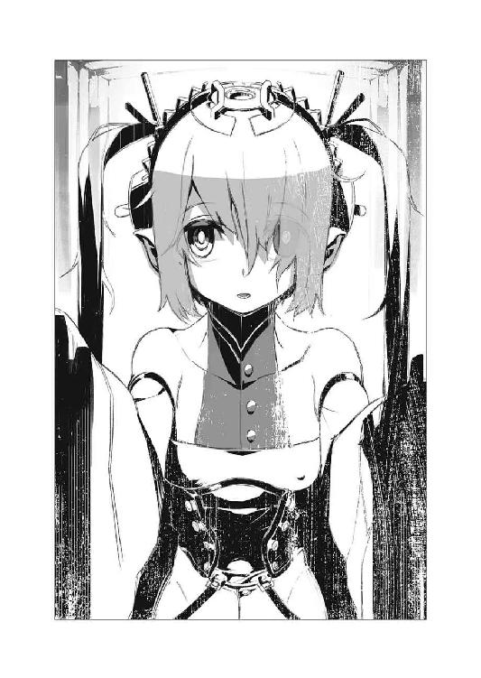
「──キリル！」
名を呼ばれて顔を上げる。
地下なので窓一つ無く、おまけに『夜眼が利く』者が多いという事で、亜人兵用の宿舎には照明器具すら少ない。薄闇に沈んでいるその廊下を、一人の少女が駆け寄ってくるのが見えた。
「ウルスラ......」
ウルスラはキリルと同じ──虎の様に二色の髪の色を持つ亜人兵だ。
ただしキリルが亜人兵として高い水準で完成していると魔法師達に評価されているのに対し......ウルスラは精神面でも肉体面でも、著しく評価が低い。小柄な体軀は格闘戦に向かず持久力も低く、喜怒哀楽が如実に出るその性格は、戦場の様な圧迫的環境において容易く恐慌状態に陥ると考えられているからだ。
「どうだった？」
「一応、遺体は捜してくれる事にはなった」
キリルは、努めて冷静な口調でそう告げる。
「だが正直、きちんと捜してくれるかどうかは──分からない」
「そう......」
ウルスラは表情を曇らせて俯いた。
彼女は、その円らな瞳を見開いたり、潤ませたりして、よく笑うし、よく泣く。そして表情以上に、短い毛に覆われた獣状の耳と尾が、彼女の感情を表してよく動く。
「ラデク......ルボル......ドミニク......」
ウルスラが口にするのは、今回の作戦で死んだ仲間の名だ。
無駄な事だとは分かっていたが、それでもウルスラや他の亜人兵に頼まれて、キリルは報告の際に、仲間の遺体の回収を要請してみた。しかし、やはりヴィクトル・イズマッシュも、彼の配下の他の魔法師達も、亜人兵の遺体回収には全く興味を示さなかった。遺体捜索についてはもう一組の『チャイカ』を捜す、そのついでに了承されたに過ぎない。
彼等は今、新たに捕まえた『チャイカ』をどう解剖するのかばかりに興味が行っている。
「すまない」
「こっちこそ、無理を言ってごめん。キリル達がちゃんと帰ってきてくれたから、それで、良しとしないとね」
明らかに......無理矢理表情を取り繕っていると分かる笑顔で、ウルスラが言う。
それがまた──キリルは辛い。
「少し休む」
キリルがそう告げると、ウルスラは大きく頷いて宿舎の奥を示した。
廊下の突き当たりにある広間──寝台が無造作に並んでいるそこが、キリル達亜人兵の寝室だ。報告と嘆願に行ったキリルとは別に、先の任務で出撃していた亜人兵達は、既にそこで横になっている者が多い。
今回は三人が死んでいるが、他の者も大なり小なり怪我を負っている。
問題の『チャイカ』が二組居た、というのも理由の一つではあるのだが......何よりあの紅いチャイカと、白いチャイカ、その従者達が強すぎた。今まで捕縛してきたチャイカ達とその従者に比べれば、格段に戦闘能力に秀でている。奇襲に近い形でなければ、死者はもっと増えていたかもしれない。
「ゆっくり休んでね」
横になったキリルを確認し、ウルスラはそう言って微笑むと──宿舎を出て行った。
恐らく彼女は、キリルが帰ってくるのを待っていたのだろう。
前述の様に、彼女は亜人兵としての評価は低い。『出来損ない』と言う魔法師も居る位だ。この為ウルスラは、同様に評価の低い亜人兵数名と、研究所内の雑事を任されている。
だが、魔法師達は基本的に研究以外の事には興味を持っていないので、掃除や洗濯、炊事、と雑事は山の様に積み上がっていく。ウルスラと数名の『出来損ない』の亜人兵だけでは、四六時中働いていないと、間に合わない位に。
「............」
キリルはふと自分の頭に手をやる。
獣の尖り耳。これを摑んで千切ってしまいたくなる発作的な衝動に──キリルは耐えた。
そんな事をしても何も変わらない。耳や尾は切り落とせるかもしれないが、それで、人間の格好をしてみたところで、自分達に寄る辺が無いのは同じなのだ。
亜人兵に居場所は無い。むしろ、戦国時代が終わった事で、無くなってしまった。
元々、人体に対する錬生術は、戦時中からこれを禁忌として敬遠する風潮が在った。そしてその成果物である亜人兵は──部分的とはいえ、人間とは異なる外見と、普通人の平均に優る能力故に、多くの者から差別的な扱いを受けてきた。
それでも、未だ戦時中は良かった。
戦場に立つ事こそ、亜人兵の誉れ──そう考えてキリル達は、出撃の日を待った。その日こそ自分達の生まれてきた意味を示す事が出来ると期待した。自分達の活躍を見れば、今まで差別的な扱いをしてきた者達も、考えを変える筈だ──と。
だが戦争は終わった。戦場は無くなった。
キリル達は、ガズ帝国滅亡の直前にこの研究所に送られてきたが──そこで戦場に立つ事無く終戦を知った。研究所の機密保持は徹底されていたせいか、敵軍に襲われる事も無く、キリル達は、終戦を知り、そして五年が経過した。
「くそ......」
兵器の素材として生みの親には売られ。
人間として真っ当に扱われる事も無く。
戦場に立つ栄誉すら与えられないのなら、自分達など、魔法師達の慰みものに過ぎない。
「くそっ......」
負傷した仲間達の呻き声に包まれて──キリルはシーツを頭まで引き上げて被った。
意外にも、内側の『牢獄』を開けるのは簡単だった。
「これ。魔法機関」
鋼鉄の壁に取り付けられている絡繰りを指さして、チャイカが言った。
どうやらこの『牢獄』は魔法機関で開閉するらしい。
だが──
「わざわざ──牢の扉を？」
眉をひそめて呟くトール。
単に閉じ込めておくだけならば、普通の鍵でも構わない筈だ。
「いや......単なる牢、じゃないのか？」
そもそも鉄格子ではなく、分厚い硝子と鋼鉄で囲まれているこの『牢獄』が、普通のそれと違うのは明らかだ。だが問題は、どうしてそんな造りになっているのか、である。鍵ではなく、魔法機関による開閉といい、明らかに普通の虜囚を閉じ込めておく施設とは一線を画している。
「トール、開ける？」
チャイカがその絡繰りの部分に魔法機杖を向けて尋ねてきた。
「............ああ」
束の間悩んでから──トールは頷いた。
この少女を解放する事にしたのは、少しでも事情を知りたかったからだ。
どうやらこの少女はチャイカの事を知っている。それどころか『待っていた』とまで言ったのだ。ならば──この研究所の連中がチャイカを狙ってきた事情についても、何か知っている可能性が在る。
「──ん」
チャイカが魔法機杖を操作。
恐らく最も簡単な類の魔法なのだろう。小さな蒼い魔法陣が機杖と絡繰りの間に瞬いたかと思うと、次の瞬間、硝子部分がゆっくりと床の中に引き込まれていくのが見えた。
「............」
少女は──きょとんとして、立ち尽くしたままだった。
解放されたというのに、外に出よう、という様子がまるで無い。自分の置かれている状況を理解していない様にも見えた。
「こっちへ」
とトールは彼女を手招きするが、まるで反応無し。
代わりに──
「大丈夫？」
魔法機関の処からチャイカが声を掛けると、少女は彼女の方へと数歩、踏み出した。どうやらトール達にはまるで興味が無くとも、チャイカには在るらしい。
少女の代わりに、亜人兵二人をその『牢獄』にトールとアカリが運び込む。チャイカの操作に従って再び『牢獄』の硝子壁がせり上がってきて──亜人兵達を閉じ込めた。
とりあえずこれで、亜人兵の方は問題無かろう。
「名前？」
とチャイカが首を傾げて問う。
その少女は、束の間、意味が分からない、といった様子で眼を瞬かせていたが──
「呼称はニーヴァ・ラーダ」
とラーケ語で答えた。
解放された喜びも無ければ、待っていたという割には、チャイカに会えた事についても、特に感慨らしいものを示さない。一体この少女は、どういう頭の中になっているのか。
「念の為に聞くが、チャイカ、知り合いか？」
「......否定」
ぶんぶんと首を振ってから、チャイカは少し不安げな表情を浮かべてこう付け足した。
「記憶喪失の時期。知り合っていた可能性」
「ああ──そりゃそうか」
チャイカには記憶の欠落が在る。その最中にこのニーヴァと出会っていたのなら、チャイカにしてみれば、分からないのは当然だろう。
だが──
「............」
ふと気になってトールはニーヴァの顔を覗き込む。
先程、チャイカに向かって歩く際に、ちらりと髪の間から見えた様に思ったのは──
「やっぱりか」
妙に尖った印象の、その耳。
その付け根部分に──疵痕が在った。
細い細い血の凝固痕。そしてその周囲に一定間隔で残る引き攣れの痕。
これは──
「──縫合の痕か？」
トールの肩越しにアカリもそれを見つめて眉をひそめる。
そう。それは明らかに刃物傷を縫合した痕だ。
「──ふむ」
アカリはいきなりニーヴァの襟首を摑むと、服の釦を外し、何やら伸縮性の高い生地で出来ているらしいその胸元を、躊躇無く引っ張って開いた。
大きくさらけ出される白い胸元。
そこには──
「ふむ。やはり兄様好みの胸はこの位か？」
「これもひょっとして『研究』──いや『実験』か」
さすがのトールもアカリの冗談には乗っからず、顔をしかめて言った。
ニーヴァの胸元には、明らかな縫合痕が何本も走っていた。
本来ならば、死体に対する腑分けで行う様な位置であり、長さだ。
「病気の治療？」
と吞気な事を聞いてくるのはチャイカである。
「いや。多分これは──」
トールはさすがに胸の奥から沸き上がる不愉快さを押し殺して言った。
「そんないいもんじゃないだろう。これは多分、生きたまま胸部を開いて、何かしたんだ」
「むいっ!?」
びくりと身を震わせるチャイカ。
トールはニーヴァの胸元を戻してやりながら言った。
「俺達乱破師でも、身体の中に何か仕込む事は在るがな」
敵に捕まって武装解除される可能性を考慮して、予め、身体の中に鞘ごと小さな刃物を仕込む、などという行為は乱破師達の間では珍しくない。肋骨の内側ならば、人差し指程度の刃物を仕込んでおいても、まず目立たないし──最悪の場合、疵痕を指先でこじ開けてやる事で、何とか取り出す事が出来る。
トールもアカリも、未だそこまでの事はしていないが、戦場で失った腕や足、あるいは眼の代わりに、精巧な義手や義足、義眼を使うだけではなく、その内側に武器や薬物を仕込んでいた乱破師は、アキュラの里でも何人か見た事が在る。
「これは多分、そういうのでもなくて──」
この少女も、やはり研究の用途に供されたとみるべきだろう。
しかし、それが、ニーヴァがチャイカの事を知っていたのと、どう繫がるのか？
「やっぱりここは、上の方の人間を一人でも捕まえてみた方が早いか」
「城落とし並の手間だぞ。そこまでする程の事か？」
とアカリが問うてくる。
確かにトール達はあくまで紅チャイカ達が持っているであろう『遺体』を手に入れれば良いだけの事なのだが。
さて──どうしたものか。
トールが束の間、悩んでいると。
「──あ」
トール達の背後で声が漏れる。
振り返ったトール達は、そこに、灰色の長衣を着た中年男が一人、愕然とした表情で立っているのを見る事になった。
「貴様等......!?」
「──ッ！」
アカリが動いていた。
一瞬にして愛用の鉄槌の向きを変えると、彼女は石突きの部分で男の鳩尾を突く。
咄嗟に殺さなかったのは、あくまで、先の『上の人間を一人捕まえてみる』というトールの考えを受けた結果だろうが──
「ぐっ......？」
──これは失敗だった。
男はそのまま床の上に這ったが──倒れる前に何かしたらしい。
「......まずい！」
けたたましく警報らしい鐘の音が鳴り響き始めたのは、次の瞬間であった。
「むい!?」
明らかに狼狽した様子で左右を見回すチャイカ。
「トール！」
「分かってる！」
チャイカの指さした先──この部屋の出入り口の少し手前で、床から鋼鉄の板がせり出してくるのが見える。恐らくは魔法機関によって動く隔壁だ。あれが上がりきってしまえば、トール達は此処に閉じ込められる。
「アカリ！」
「──承知」
トールとアカリは、ほぼ同時に懐から取り出した手裏剣を投げる。
二本の小さな刃物は、せり上がる板と床の隙間に突き刺さった。耳障りな鋼鉄の軋む音と共に、隔壁がその動きを鈍らせる。
「逃げるぞ！」
トールは傍に居たチャイカの手を摑んで隔壁を乗り越え、部屋の外に走り出す。アカリはニーヴァを引っ張り、更に最後にフレドリカが元の通路に走り出た。
そこで──
「──って」
トールは眼を細めて唸った。
「対応が早ぇ!?」
通路の奥、薄闇の凝るそこから、怒濤の勢いで押し寄せてくるのは──総計十頭以上の、双頭犬と、そして独角馬の混成集団であった。
不意に──頭上でけたたましい鐘の音が鳴り響いた。
時を告げる様なものではない。激しく連打するそれは、火事やその他の災害の際に警報として鳴らされるものと酷似していた。
「......何？」
石造りの壁と床と天井、そして鉄格子に囲まれた、小さな牢獄。
その中で紅チャイカは、眉をひそめて鉄格子の方に駆け寄った。
通路には相変わらず人の姿は無く、鉄格子に顔をくっつけて見ても、何が起こっているのかは分からない。ただ、この施設は石造りの部分が多いせいか、あちこちから、足音が慌ただしく反響して聞こえてきた。
やはり何かの警報か。
だが──
「──待たせたな」
そんな言葉と共に、通路の奥から灰色の長衣を着た男達が姿を現したのは、次の瞬間であった。先にあの洞窟で紅チャイカ達を迎えたのと同じ面子だ。
言葉を発したのは、その中央──例の疵痕顔の男である。
どうやらこの男が、灰色の長衣の男達の中では、指導的な立場に在るらしい。
ちらりと『イズマッシュ師』と呼ばれていたのを紅チャイカは耳にしていたが──
「準備が出来た。来なさい」
疵痕顔の男は言った。
やはりラーケ語だ。
「警報が鳴っているけれど？ 放っておいていいの？」
同じくラーケ語で応じる紅チャイカ。
疵痕顔の男は薄く笑って言った。
「問題無い。むしろ好都合だ。どうやらもう一組の『チャイカ』が向こうから乗り込んできてくれたらしい。海の底を浚って、彼等の遺体を捜す必要がなくなった」
「......もう一組の」
それはつまり白チャイカとトール達の事か。
トールが生きていたらしいという事実に、紅チャイカは──自覚も無いままに短く溜息をついていた。それが安堵の気持ちから来たものだという事に気付いたのは、その直後の事である。
「............」
顔をしかめる紅チャイカ。
そんな彼女をどう見たのか──
「さあ。来なさい。我々には君が必要だ」
疵痕顔の男は、落ち着いた声で、鉄格子の向こうからそう言った。
「正しくは君の──脳が、だがね」
第三章 八番目の者
EIGHTH PRODUCT
〈禁断皇帝〉、〈賢帝〉、〈魔王〉あるいは単に〈化け物〉。
彼の者を──アルトゥール・ガズを指す異名は、多い。
それも当然と言えば、当然だろう。
本来、言葉というものは、凡庸な人間達が、自分達の経験に基づいた事実を伝え合う為に造られた道具だ。およそ、その枠に収まりきらぬ超存在を表現しようとするならば、結局、直接的な一言ではなく、幾つもの言葉を並べ立てる様な、茫洋とした表現にならざるを得ない。
そう。アルトゥール・ガズという存在は、凡人のまるで及ぶところではなかった。
それは単に、絶対権力者というだけの意味ではない。
本当に──そんな単純なものではなかった。
「......イズマッシュよ」
ガズ帝国皇帝直下の魔法技術院。
その副院長にヴィクトル・イズマッシュが就任してからおよそ一年。
唐突に彼は、皇帝陛下の元に呼ばれる事になった。
今──広い謁見の間には、彼とガズ皇帝しか居ない。
本来ならば傍に侍るべき近衛騎士の姿すら無かった。
もっともガズ皇帝の場合、近衛騎士も様式美以上の存在ではない。何しろ一対一ならば、近衛騎士達は、ガズ皇帝に全く太刀打ち出来ないからだ。文武両道どころか、全方位にありとあらゆる技能が常人を凌駕する、それがガズ帝国皇帝だった。
「其方に一つ頼みがある」
「頼み──でございますか？」
怪訝の表情を浮かべてヴィクトルはそう応じ、しかし次の瞬間、慌ててこう繫いだ。
「私に出来ます事であるならば、何なりと」
その言葉を口にした途端、全身を捉える無力感。
自分に出来る事など──ガズ皇帝ならば、当然の様に出来るだろう。
魔法技術院に入って十年余り、それを思い知らされる日々の連続だった。
突き詰めれば、魔法技術院など、ガズ皇帝には要らないのだ。彼の人が一人居れば事足りる。大抵の魔法技術の基礎は、ガズ皇帝が確立したものだ。それでも凡庸な人間を百人ばかり集めて研究に従事させているのは、単純に効率から──つまり研究過程における膨大な検証作業、凡人でもこなせるそれを、肩代わりさせる為に過ぎない。
少なくとも、ヴィクトルにはそうとしか思えなかった。
勿論、ヴィクトル達は独自の研究成果を残そうと、奮闘努力もしてきた。だが大抵の新技術は、確立出来たと喜びガズ皇帝に報告した途端、予めそれを見越していたかの様に、より洗練された基礎理論をまとめたものが、提示されるという事の繰り返しだった。
どれだけ足搔いても、その先にガズ皇帝の背中が在る。
この副院長に就任してからの一年は特に、それを思い知らされるだけの日々だった。
だが──
「作らねばならないものが、在る」
ガズ皇帝はヴィクトルを玉座から見下ろしながらそう言った。
特徴的な長い銀の髪と、炯々と光る紫の瞳。
顔立ちは端整で彫りが深く、何処か猛禽を想わせる。
多くの場合に権力者を描いた肖像画というものは、実物よりも何割か更に端整に、優美に、描かれるものだ。だがヴィクトルが知る限り〈禁断皇帝〉の肖像画で、実物を越えたものは一枚も無い。いや。目鼻立ちは正確に描かれたものも多いのだが、それだけでは、このアルトゥール・ガズという人物のまとう『何か』──相対した者を、ただただ畏怖させ、そして心酔させる、そんな圧倒的な何かが、表現出来ない。
言葉と同じだ。
凡人用の小賢しい方法では、この偉人──いや怪物を顕す事など、とても......
「わが野望には、必須のものだ」
「......野望」
ヴィクトルは、その言葉を舌の上に載せてみる。
ガズ皇帝は、これ以上何を望むのだろうか。
既にガズ帝国は、フェルビスト大陸でも屈指の大国として名をはせている。およそこの世界においてガズ皇帝が望んで出来ない事など、何も無かろう。それこそ彼に無理ならば、他の誰にも無理だ。少なくともヴィクトルはそう信じて疑わなかった。
「既に基礎技術は在る。計画表も用意した」
「............」
ヴィクトルは、忸怩たる想いでその言葉を受け止めた。
まただ。また自分達は、皇帝陛下の用意した計画表に従い、皇帝陛下の用意した基礎技術を用い、まるで愚鈍な使いっ走りの様に、言われたことを──実用化の為の検証を、繰り返すだけなのだ。真に何かを造り出した事など、一度も無い。
自分達が何をしているかさえ分からないまま、作業を繰り返し、完成した際にようやく、自分達が何を造っていたかに気付く......そんな間の抜けた仕事を、また繰り返す事になるのだ。
魔法師として──いや研究者として、これ以上の絶望が在ろうか。
だが、その一方で、ヴィクトルは、このフェルビスト大陸における最高の環境から離れる事も出来ない。ガズ帝国以上の魔法技術は、どの国にも無い。最先端を走りたいなら、ガズ皇帝の背中を追い続けるしかないのだ。
「事は、最上級の機密保持環境で実行せねばならん」
「......は」
頷きつつも、ヴィクトルは意外に思った。
ガズ皇帝は──魔法技術の管理に関しては、杜撰な処があるからだ。その流出について全く意に介していないのである。常に最先端を行くガズ帝国であるからこそ、一歩ないし二歩後れてこれを実用化する他国など、そもそも問題にならない──と考えているのかもしれない。
しかし......
「国外に研究拠点を用意した。予算及び資材は、機密保持に影響の無い範囲であれば、無制限だ」
「............」
言葉に詰まるヴィクトル。
それは恐らく破格の条件なのだろう。
だが──
「人員の選定は任せる。だが機密保持の観点からすれば、係累の居らぬ者で固めるのが望ましい。下働きには実用試験を終えた亜人兵部隊を二個小隊ばかり連れていくのが良かろう。連中ならば、居なくなっても騒ぎ立てる者も居るまいよ」
「は......し、しかし、一体......何を？」
そこまで徹底して何を作らせる積もりなのか？
「──武器だ」
アルトゥール・ガズは、紫の瞳でヴィクトルを見据えながらそう言った。
「武器を作るのだ」
昔日の記憶を脳裏に呼び起こし──ヴィクトルは微笑んだ。
あれから七年の歳月が経過した。
その間には、ガズ帝国の滅亡という予想外の事態も含まれてはいたが......ヴィクトルにとってみれば、最も印象深いのは、やはりあの日の記憶だ。
あの日から、今の自分が始まった。
自らが選抜した魔法師達と島にこもり、研究に明け暮れる日々の中で、ガズ帝国の滅亡は、何処か現実離れした夢物語の様にすら思えたものだ。
あるいはガズ皇帝は、帝国の滅亡と自分の死すらも、視野に入れていたのではないかと思う。だからこそヴィクトルに研究を託し、わざわざ国外に研究施設を置いたのではないかと。
いずれにせよ......自分に託されたこの研究の前では、全ては些末事だ。
だから自分は、ただひたすらに、脇目も振らずに研究を続ける。
その事で自分はあの〈禁断皇帝〉に優る存在に達する事が出来るのではないかと──そんな風にすら、思う様になった。
「──さて」
両手で扉を開け放ちながら、ヴィクトルは処置室に足を踏み入れる。
彼の後から、助手達や、亜人兵、そして彼等に引き立てられた赤い衣装の『チャイカ姫』もまた処置室へと入ってきた。
「ここは......」
と怪訝そうに処置室の中を見回すのは、チャイカだ。
このチャイカは、気が強そうだが、それでも表情に僅かな恐怖の色が見え隠れしているのは、此処が何の為の部屋なのか、薄々とは気付いているからだろう。
「君の頭の中から、必要なものを取り出す場所だ」
ラーケ語でそう言って、ヴィクトルは処置台の脇に置かれた器具を示して見せた。
金属製の──針。
細い刃物の様な、平たいその表面には、びっしりと魔法術式が刻み込まれている。
「これを君の脳に差し込む」
「............」
一瞬、怯んだ様な表情がチャイカの顔を過ぎる。
だが──
「目的は何なの」
同じくラーケ語で問うチャイカ。
「私の頭から何を取り出そうと──」
「記憶だよ。もっとも君自身は覚えていない──いや正しくは『未だ知らない』のだが」
「......？」
チャイカが、胡乱なものを──というより、頭のおかしな人間を見るかの様な眼で、ヴィクトルを見据えた。ヴィクトルの言葉が妄想の類に聞こえているのだろう。
「人間の頭から記憶を取り出すのは、既に確立した技術だ──魔法としてね。もっとも多くの場合、魔法では単にこれを念料として消費するだけだ。だが我々はその記憶の中身に用が在る。だからこういう──」
ヴィクトルはチャイカの目の前に、殊更によく見える様に『針』を掲げて見せた。
「特別な器具を、君の、脳に、突き刺さなければならない」
記憶を念料にする魔法。
それはつまり、本を焚き火にくべる様なものだ。
ただ燃やして使うだけならば、本棚から引っ張り出して、火の中に投げ込めば良い。文字を知らない人間でも簡単な作業だ。だがその中身を理解しようと思うならば、それを読むための知識と技能が必要になってくる。
「......『遺体』を積んだ船が、この近くの海で沈んだって話を聞いたけれど」
チャイカはヴィクトルを睨みながら問うてきた。
「まさか、それって、あんた達が？」
「ああ。そうだな」
ヴィクトルは頷いた。
「我々が撒いた噂──『チャイカ』が集まってくる様にと。いわば撒き餌だよ」
世間に存在する『チャイカ』には、実際にはガズ帝国とは縁の無い偽物も混じっているのだろうが──ヴィクトル達が捜している『チャイカ』には共通点が在る。
『遺体』を捜している事。
理由はそれぞれだろうが『遺体』を納める為の棺を持参し、何よりも先ず『父』たるアルトゥール・ガズの亡骸を集めて回っている事が彼女等の条件だ。ならば噂をばらまいておいてやれば、遠からず彼女等は此処にやってくる。
「全ては君の頭の中に隠された記憶を引き出す為だ」
「──だから」
チャイカは苛立たしげに問うた。
「その記憶とは何？ 私の中に何の記憶が在るっていうの」
「皇帝陛下の『遺産』を継ぐ為に必要なものだよ」
「......『遺産』？」
チャイカは眼を細めて言った。
「まさかガズ帝国を再興して、これの帝位に就こうと──」
「......ガズ帝国？」
ヴィクトルは微笑した。
この哀れな少女は何も知らない。知らされていない。そう。何も。
世界の命運すら左右する『遺産』を手にする為の『鍵』──未だ謎という箱の中に封じられたままのそれを、解放し得る存在でありながら、その自覚すら無いのだ。
あるいは、ガズ皇帝が自分達を見ていた時も、こんな気分であったのか。
無知蒙昧な者を見下ろす賢者の愉悦。
ヴィクトルは、ゆっくりと、首を振って見せた。
「小さいな。あまりに小さい」
「......!?」
「『遺産』を継ぐ為に必要なのは『遺体』と──そしてもう一つ」
ヴィクトルは紫の瞳を──〈禁断皇帝〉と同じ色の瞳を覗き込んで言った。
「『チャイカ』だ」
「............」
チャイカは無言。
恐らくヴィクトルの話の半分も、理解は出来ていないだろう。
だがそれでいい。別に彼女に分からせる為に喋っていた訳ではない。これはヴィクトルにとって、満足の為の儀式に過ぎなかった。あの〈禁断皇帝〉と同じ銀の髪と紫の瞳を持つ少女が、訳も分からずに怯える様は、ヴィクトルの嗜好をよく満たしてくれる。
「『鍵』は君の──君達の頭の中に眠っている。記憶という形でね。だがそれを完全な形で取り出す為には、やはり試行錯誤が必要なのだよ。今のままでは断片しか取り出せない。しかし断片でも一定の数が集まれば、足りない部分はこちらで補完しながら、全体を描く事は出来る様になる」
そう告げてから──ヴィクトルは、チャイカの左右に立って彼女の腕を摑んでいる亜人兵達に頷いて見せた。
「縛り付けろ」
──だん！
それは本来ならば、在り得ない筈の音だった。
存在しない筈の足場を──虚空を踏みしめる際に響くそれは、独角馬特有のものだ。
黒い馬型の棄獣は、まるで螺旋を描く様に、通路の壁を、床を、天井を蹴りながら迫ってくる。しかも三頭。馬には本来、具わっていない筈の牙を剝き出しにして。
「下がれ！」
トールはチャイカ達にそう告げて、左右二本の小機剣を抜き放つ。
〈鉄血転化〉の鍵詞を唱えている暇は、無い。
──異音。
トールが掲げた小機剣に、それぞれ一頭ずつ独角馬の牙が食い込んだのは、次の瞬間だった。まるで鋼を擦り合わせる様な耳障りな音と共に、小機剣の表面に火花が散る。気脈を通じている状態の小機剣は、トールにとって腕も同じ──皮膚の上を刃物の切っ先で引っかかれるかの様な悪寒を覚える。
「くおっ──」
圧倒的な重量と、突進の慣性で床に押し倒されるトール。
そこに三頭目の独角馬が、とどめとばかりに襲い掛かってきた。
だが──
「──ふッ！」
トールの喉笛に牙が食い込もうとしたその矢先、その鼻面を、鉄槌の一撃が粉砕していた。トールと入れ替わる様にして、その背後から踏み込んだアカリの一打である。それは容赦無く──独角馬自身の勢いも加わって、その顔面を粉砕し、牙をへし折っていた。
流れる様な身のこなしで回避するアカリの脇をすり抜け、血をまき散らしながら顔を潰された独角馬が倒れて、跳ねる。
トールを押し倒していた二頭が、改めて小機剣から牙を離し、顔を上げ、アカリを威嚇。
アカリはしかしこれには応じず──後退。トールは自由になった両腕を引きながら跳ね起きると、右足を軸にその場で旋回、小機剣の刃を独角馬の名の由来──その額から生えた角に叩き付けた。
「──！」
悲鳴とも怒声ともつかない声を漏らして、二頭の棄獣が怯む。
トールはその隙に床を蹴ってアカリ達の元へと戻る。
出来るだけ、背を低くして。
「顕れよ──〈切り裂くもの〉！」
そこに、チャイカの叫びと共に魔法が起動。
水平に走った不可視の刃は、トールの頭上すれすれを飛び、二頭の独角馬の首を刎ねる。一抱え程もある首が胴体から滑り落ち、次の瞬間、思い出したかの様に血が噴き上がった。
「へっ──」
トールの口元を獰猛な笑みが過ぎる。
アカリは勿論だが、チャイカも、何度か共に戦ってきた事で、互いの呼吸が分かる様になった。細かい打ち合わせ等せずとも、トールとアカリが時間を稼いでいる間に魔法を詠唱し、ここぞという瞬間に、ここぞという方向から魔法を撃ち込んでくる。
しかし......
「──！」
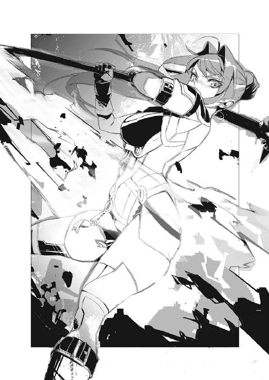
独角馬の──ゆっくりと倒れていくその死体の背後から、紫電が走る。
それは独角馬より僅かに遅れて殺到してきた双頭犬の放った雷撃だった。
（こいつら......！）
連携がとれているのは、トール達だけではない。
明らかに前衛で突撃する独角馬、後衛で稲妻を投げる双頭犬と、役割分担が出来ている。しかもトール達と異なり、独角馬が斃されようがどうしようが、全く怯む様子が無い。
「ちいっ──」
咄嗟に手裏剣を投げるトールとアカリ。
鋼鉄の刃物は避雷針と同じである。それは空中で稲妻に触れると、自らの軌道を以て稲妻の軌道をねじ曲げ、更には拡散させた。魔法で作られたものといえども稲妻は稲妻、流れやすい所に流れ、落ちやすい所に落ちる。逸らす事そのものは難しくない。
だが──それでも一部がトール達の元に届いた。
「あうっ!?」
思わず悲鳴を上げるチャイカ。
機杖が同じく避雷針の様な形で稲妻の一部を導いてしまったのだろう。それでも機杖を取り落とさないのは立派なものだが──このまま、魔法を撃ち続ける事は出来まい。
「逃げるぞ！」
トールは言って──煙玉を双頭犬の方へ投げ込むと、炸裂を確認する間も惜しんでチャイカを抱え走り出す。相変わらず棺が邪魔だが、これはもう仕方ない。通路の壁にがつんがつんと当たって耳障りな音を立てるが、トールはもう気にしない事にした。
「アカリはそっちを！」
「承知」
頷いてアカリは、ニーヴァと名乗った少女の手をとって引く。金銀妖眼の少女は、殊更に抵抗するでもなく、アカリに引かれるまま、歩き出し──そして走り出した。
フレドリカも、更にその後に続く。
煙玉の煙に視覚と、そして嗅覚を妨害されているせいか、うなり声や吠え声は聞こえてくるが、双頭犬の追撃は──雷撃は無い。
「くそ──」
トールは唸った。
明らかに多勢に無勢──もし地上で見た棄獣全てを、この施設の連中が御する事が出来るのだとしたら、さすがにトール達に勝ち目は無い。
この空間として限られた場所では、フレドリカの助力があっても闘いづらいし、延々と物量で押されれば、いかに装鎧竜とても、体力が続くまい。ましてや同種──装鎧竜にまで複数で押されれば、単純に考えても、やはり勝算は無くなる。
（外に出るか？ だが──）
それこそ、開けた場所に出れば、周りを囲まれて終わる。今ですら狭い通路で独角馬と双頭犬が同時に仕掛けてこなかったからこそ、何とか逃げる事が出来たのだ。
（少なくとも追ってくる奴等を絞れればな）
棄獣を一種類にまで絞れれば、未だ対処はし易い。
トールはチャイカを抱えて走りながら、周囲を見回す。
見えるのは、点々と設けられた照明と、愛想の無い壁と、そして──
「──！」
トールは、天井付近に穿たれたその孔に気付いた。
恐らくは通風口。こうした地下や、密閉状態の高い建物では、空気の淀みをなくす為にこうしたものが設けられる事が多い。そして広い施設では、通風量を増やす為に、比較的、その管は大きいものが多い──例えば人間が、通れる程度に。
「チャイカ、少しだけ時間を稼いでくれ」
「う、うい」
降ろされたチャイカはすぐさま機杖を構えて操作。
呪文詠唱──
「──パウラ・オード・イナス・ピフ・ティナス」
その間、トールは跳躍して通風口に取り付けられた鉄格子に手を掛けると、体重と、壁を蹴る脚力で、これを剝がしにかかる。
「顕れよ──〈叩き潰すもの〉！」
チャイカの魔法が完成する。
彼女の脇をアカリ、フレドリカ、そしてニーヴァが通り過ぎたその瞬間、追いかけてきた双頭犬達に向けて、猛烈な風が叩き付けられる。ぎゃん、と珍しく普通の犬の様な甲高い悲鳴を上げながら、双頭犬達は長い通路を──後続を巻き込みながら吹っ飛んでいった。
「この中へ！」
流石に以心伝心、トールの意図はすぐ察したようで、アカリがまず跳躍──自分が通風口に滑り込み、手を差し伸べる。
すぐにフレドリカがこれに応じて飛び込み、更にチャイカをアカリが引っ張り上げ、最後にフレドリカが──きょとんとその場に立ったままのニーヴァを、腕を伸ばして半ば無理矢理に引っ張り上げる。
彼女等が通風口の中を進み始めたのを確認すると、トールも再度跳躍してその中に身を滑り込ませた。最後に彼は左手に持っていた鉄格子を再び内側からはめ込むと、そこに簡単な『罠』を仕掛ける。
糸で鉄格子と繫がれた、小さな筒。
中身は──容器の形こそ違うが、先程の煙玉とおおよそ同じだ。糸は内外二つの『栓』に繫がっており、引っ張ればこれが揃って外れる。そして中に入っている二種の薬液が混ざり合い空気に触れると、猛烈な勢いで、強い催涙効果を持つ煙を発生させるという仕掛けだ。
勿論、通風口が『吹き出し口』である事は、確認済み──風の流れに逆らって進むトール達に、煙が届く事は無い筈だった。
「............」
念の為にと、トールは懐から取り出した布で鼻と口を覆ってから、先を進むアカリ達を追いかける。アカリやフレドリカはともかく、さすがにチャイカやニーヴァは這って進む事になれていないのか、すぐに追いつく事が出来た。
トールの目の前には、もそもそと進んでいくニーヴァの尻が在る。
「──兄様！」
アカリが前方から言ってきた。
「どうした？」
「出会ったばかりの婦女子の尻に見入っている場合ではないぞ！」
「見入ってねえ！」
「匂いを嗅いでいる場合でもない！」
「嗅いでねえよ！」
「そんな馬鹿な！」
「馬鹿はお前だ！」
最早、息をするかの様にそんなやり取りをしつつ、トール達は進んでいく。
通風路の中は──微妙に湿り気を帯びていた。
（海が近いせいか？ あるいは──）
先にも似た桟橋の様な所と、繫がっているせいか。
いずれにせよ、滑らかな通風路の内側は、非常に滑りやすくなっている。しかもトール達が通っているそれは、どうやら下向きの傾斜がついているらしい。チャイカやニーヴァの動きの遅さに、ついつい後ろから押したくなるトールだったが──下手に滑ると、摑まる場所も無く、そのまま停まらなくなる可能性が在った。
「──む？」
やがて──前方でアカリが声を上げるのが聞こえてきた。
「どうした？」
「風の向きが──」
その言葉が終わるか否かの内に......
「──!?」
いきなり──彼女の言葉通り、風の向きと、そして量が変わった。
「ぬあっ!?」
咄嗟に踏ん張るトール。
だが、前述の通り、通風路の中は滑らかな上に滑り易い。次の瞬間──まずい、と手を伸ばすトールの指先をかすめてニーヴァが滑り、フレドリカに衝突。更にフレドリカが僅かだが滑って、その前に居たチャイカに衝突した。
「あ。ごめん」
「むやっ!?」
こうなればもう止められない。
チャイカはアカリに衝突し──さすがのアカリもチャイカの体重を受け止める事は出来なかった様で、そのまま通風路の中を滑り落ちていく。
「アカリ！ チャイカ！」
「むやああああああああああああ──」
「ごめえええええええええええええん」
そんな声の尾を引きながら、アカリ、チャイカ、フレドリカ、そしてついでにニーヴァが通風路の中を遠ざかっていった。傾斜は緩いので、落下して大怪我をする事は無いだろうが──
「ええい──くそ!?」
仕方なくトールも両手両足を内壁から離して、滑り落ちる。
（潮の匂い──）
通風路の中には、潮風に似た匂いがわだかまっていた。
という事は、潮の満ち引きを利用して空気を動かす仕組みになっているのかもしれない。
（ならばこの先は......）
程なくしてトールはチャイカ達に追いつき──とりあえず手の届いたニーヴァの服の袖を摑みながら、もう一方の手で手裏剣を通風路の壁に突き立てる。刺さりはせずとも、これで少しは滑落速度を抑えられる、と考えたのだが──次の瞬間。
「──！」
トール達は速度を殺しきる前に、通風口の鉄格子を吹っ飛ばしながら、一塊になって空中に投げ出されていた。
想像よりも通風路が短かったのだ。
「くっ──」
咄嗟にトールは、手近に居たチャイカを引き寄せる。
落下の浮遊感の中で、トールは少しでも衝撃を殺そうと手裏剣を振るが、その切っ先は何処にも引っかからない。焦燥感と共にトールはチャイカを守る様に抱き締めて──
「──ッ!?」
落下速度が急激に落ちる。
だが完全に空中に静止できた訳ではなく──次の瞬間、トールとチャイカは全身を水に包み込まれていた。
「............！」
どうやら下は水だったらしい。だが潜水は僅かに一瞬、次の瞬間、二人は大量の雫を滴らしながら、水上へと引き上げられていた。
一体何がどうなったのか？
咄嗟に頭上を振り仰ぐと──白銀の巨体がトールとチャイカ、それにアカリとニーヴァを、その爪の先に引っかけているのが見えた。
フレドリカである。
どうやら広い空中に投げ出された瞬間に、変身の魔法で竜の形態に戻り、翼を使って落下速度を殺したのだろう。さすがに水面までの距離が無かった為か、完全に空中静止する事は出来ず──トール達は一旦、着水してしまった様だが。
「げほっ......げほっ......!?」
激しく咳き込むチャイカと──
「............」
まるで何事も無かったかの様に大人しいニーヴァ。
「無事か？」
「一応は」
と、さすがにアカリは平然とそう応じてくる。
「......で、此処は何処だ？」
そこは洞窟の様だった。
「これは海水、だよな」
トールは周りを満たす大量の水を見回して言った。
少し飲んでしまったが、間違いない。これは海水だ。
だが──周囲は開けているという訳ではなく、見えるのは剝き出しの岩肌ばかりだ。先程までの施設内と異なり、こちらは本当に、天然の状態──ごつごつした岩がそのまま剝き出しになっている。
照明の類は無く──代わりに水面が仄暗く光っている。
「いきなり風向きが変わったのは、潮汐か何かの具合か」
見た所、この洞窟には通風口の他に出入り口が無い。この洞窟が水面下で海に繫がっているなら、汐の満ち引きで中の気圧が変化して、通風路の流れが変わるという事も在り得るだろう。
とりあえず......フレドリカに運ばれて、洞窟の端に幾つか在る岩礁の上に乗る事が出来たトール達は、改めて周囲を見回した。
「チャイカ、何か灯りを頼む」
「〈遍く照らすもの〉──顕れよ」
頼む前から準備はしていた様で──チャイカの呪文詠唱と共に蒼い魔法陣が回転し、その真ん中から柔らかい光が放たれる。
魔法の灯火は、洞窟内にわだかまる薄闇をゆっくりとぬぐい去っていき──
「──！」
トールは息を吞んだ。
今までは暗くてよく分からなかったが──周囲の水面には、無数の遺体が浮いている。
「これは......棄獣か」
アカリも流石に驚いた様子で眼を細め、辺りを見回している。
浮かんでいるのは全て棄獣の死体だ。独角馬、双頭犬は勿論、装鎧竜、奇眼鳥らしきものもちらほらと見受けられる。それらはいずれも全身では無く、『部分』だった。
まるで解体した後の余りを、棄てたかの様な──
「しかし──」
「それは、本来の、棄獣では、ない」
不意に──奇妙な声が響いた。
それは確かに話し言葉である筈なのに──声である筈なのに、何処か、単純な音の様にも聞こえる。楽器か何かで、人の会話する声を再現しようとしているかの様に、何処か、不自然な響きを伴っていた。
「誰だ？」
誰か自分達以外にこの場に居るのか。
トールは身構えながら改めて周囲を見回して──
「──！」
「それら、は、全て、複製だ、八番目の、者、よ」
ゆっくりと、水面下から何かが浮かび上がってくる。
ごぼりごぼりと泡をまといながら姿を現すそれは──
「......大海魔！」
チャイカが悲鳴じみた声で叫ぶ。
白い触手。渦巻き状の殻。そして庇状の蓋。瞬きを知らぬ巨大な瞳。
陸に棲む生き物から見れば異質も異質、その姿を絵に描いても、本物を見た事が無い者ならば、どちらが『上』かすら、見分けがつかないだろう。
そう。それは確かに船を襲ったのと同種の生き物──大海魔だった。
「......待て」
だがトールは、機杖を構えようとするチャイカを制して言った。
「こいつは......」
露わになったその姿は、無惨な疵痕を幾つも抱えて居た。
殻はあちらこちらにひび割れが走り、陥没している部分も幾つか見受けられる。その触手も何本かは半ばから千切れているのが見えるし、何より、その眼は、片方が無い。周囲に抉られた様な痕が残っていることからして、一緒に取られてしまったのだろう。
見れば明らか──生きているのも不思議な位の、満身創痍の状態だ。
「ガズ帝国、の、錬生術、は、他国より、も、進んで、いた」
ごぼりごぼりと泡立つ音と共に、水面全体が音を発しているかの様だった。
大海魔の魔法は水を操る。恐らくは水面を震わせて、大海魔は人間の言語を『喋って』いるのだろう。この点だけでも、大海魔の知能の高さが分かる。
「棄獣、の、改造と、複製も、可能な、程に。量産は、未だ、だった、が。ヴィクトルと、その配下、の、魔法師、達は、量産技術の、確立に、成功、した。後は、資材、さえ、在れば、無限、に、棄獣を、量産、出来、る」
「......お前は、何だ」
トールは大海魔に向かってそう問う。
わざわざ話し掛けてきたという事は、対話の必要性を、相手が感じているという事だろう。少なくとも、問答無用で襲われるという事はあるまい。
「我は、研究、実験、用、の、天然、物だ」
と大海魔は言った。
「第一世代、の、大海魔。複製が、量産、可能、になった、為、廃棄、され、た。彼等は、他の実験体、と、同様、殺し、て、棄てた、積もり、だった、の、だろう、が......こう、して、未だ、生きて、いる。誤算、で、あろう」
と──触手の一本が頭上のある方向を指す。
そこには、他の岩肌と異なる平面が──鉄扉の様なものが設けられているのが見えた。大海魔ですら通れそうな程の直径である。恐らくはあそこを通して大海魔は投棄されたのだろう。
要するに此処は──用無しの死体を棄てる為の、場所なのだ。
「一体ここは何だ？ 塵捨て場って意味じゃない。この島そのものだ」
「ガズ帝国の、錬生術、研究所、の、一つ。だが、今は、『遺産』の、保管所、でもある」
仄暗い水面が、そう答えた。
「『遺産』？」
「ガズ帝国の、錬生術、そして、魔法機術の、粋を、集めた、最高傑作品を、保管する為の」
発音方法そのものが違うのだから当然かもしれないが......大海魔の『声』はひたすら静謐で、そこには如何なる感情も、うかがい知る事は出来ない。瀕死の態でありながらも、苦しげな様子は無い。元々人間とはあまりに違う生き物──痛覚すら在るかどうかも分からないのだから、人間の様な喜怒哀楽の尺度で、その内面を測る事には、さして意味は無いのかもしれないが。
「保管......？」
ガズ帝国は、滅んだ。
ならば、その『遺産』が何であろうと、後生大事に保管しておく意味など無かろう。
だが......
「そう。保管だ──来たるべき運命の、その日まで」
死にかけの怪物は、何の感慨も無くそう告げてきた。
「一班から三班は第一層、四班は第二層、五班、六班は第三層を！ 擬獣共は『標』が無ければ敵味方の区別がつかない、『標』を付けるのを忘れるな！」
キリルは、仲間の亜人兵達に向けて叫んだ。
第二層の宿舎で休んでいた亜人兵を、全員起こして、動員する為だ。
どうやら──何者かが、この研究所内に侵入したらしい。
第一層の研究区画にて、捕虜に食事を与えた帰り、二人の亜人兵が襲われた。その後、魔法師が研究区画でその侵入者に遭遇──気絶させられるものの、その際に、警報器に触れた為、侵入者の存在が明るみに出たのである。
現在──魔法師達が擬獣を使って侵入者を捜しているが、魔法術式越しに操っている擬獣は、基本的に知能が低く、細かな探索に向かない。奇眼鳥など、そもそも扉を開ける事も出来ない。
やはり研究所の中──人間が使うのが前提の施設の中となると、亜人兵が捜した方が早いのだ。魔法師達は棄獣の『量産』に成功した時点で、戦力としての亜人兵達をより一層、ないがしろにする様になったが......ここで早々に役立てば、亜人兵の重要性を見直してくれるかもしれない、という期待がキリルには在った。
自分達は獣などではない。
人間で──兵士なのだ。
棄獣や擬獣などと同列に扱われたくない。
「棄獣共には出来なくとも我々には出来る！ それをイズマッシュ様達にお見せする良い機会だ！ 全員、奮起しろッ！」
「おおッ！」
亜人兵達が揃ってキリルの檄に応じる。
普段──あまり感情を表に出さない亜人兵達だが、それは決して、喜怒哀楽が無いという訳ではない。あくまで彼等は、己を殺して、待っているだけなのだ。
自分達が活躍できる場が、与えられるのを。
皆──この平和な時代に、亜人兵の居場所が無い事は知っている。
戦場で役立つ存在として作られたのが、亜人兵だ。
多くの獣が、獣として生きる術を、生まれた時に持っているのと同じく──技術ではなく、能力として生まれながらに兵士に必要とされるものを身につけている存在。良くも悪くも彼等に『伸びしろ』は無い。その肉体は最初から使用目的が定まっていて──他の事には殆ど役に立たない。少なくとも普通の人間と同等か、それ以下でしかない。
だからこそ......
（いつかイズマッシュ様の研究が実れば──『遺産』が手に入れば）
その時はきっと、再び、戦乱の時代が来る。
そうなれば、亜人兵はその真価を天下に示す事が出来る筈だ。その時まで、自分達は魔法師に見捨てられる訳にはいかない。自分達が有能であると──やはり必要であると彼等に、とりわけ施設統括者のイズマッシュに、示しておく必要が在った。
仲間達が『温まった』のを確認すると、キリルは自らも新月刀を腰に差し、他の装備も手早く点検する。
そこへ──
「キリル！」
駆け寄ってくるのはウルスラだ。
他の『不良品』として雑役に回されていた亜人兵達も、一緒である。
「私達も──」
「ウルスラは隠れていろ。危ない」
とキリルは切り捨てる様に言った。
ウルスラは兵士としての能力は高くない。足手まといとまでは言わないが、キリル達に比べれば戦闘能力は低い。前面に出れば、死傷する率が高い。
キリル達が共有する亜人兵の価値観としては、甚だ矛盾しているかもしれない。だがそれを自覚しても尚、キリルはウルスラを戦わせたくなかった──彼女を死なせたくないのだ。
「でも私も亜人兵──」
「俺達に任せておけ」
キリルは重ねてウルスラにそう告げると──他の亜人兵達と共に宿舎を飛び出す。
「いいか、『標』は忘れるな！」
改めて仲間達にそう告げると、キリルは細かい指示を仰ぐ為に、宿舎を飛び出した。
恐らくこの時間なら、ヴィクトルは例のチャイカを連れて第一層の処置室に居る筈だ。
「............」
キリルの胸には、焦りが在った。
限られた情報しか手に入っていないが、恐らく、侵入してきたのは『もう一組のチャイカ』達だ。キリル達は、てっきり彼等が溺死したと思っていた──そう報告してしまった訳だが、それが、警戒態勢の緩みを招いたとも言える。
失態だ。これでは有能さを示すどころの話ではない。
兵士としての能力に疑問を持たれては、亜人兵は存在理由を失う。
「くそっ......」
階段を三段四段と飛ばして駆け上がり、第一層に辿り着くと、キリルは真っ直ぐに第一処置室へと向かう。
「開けろ！ イズマッシュ様に御報告が在る！」
処置室の手前、扉の左右に待機していた亜人兵にそう告げる。
だが......
「なりません」
二名の亜人兵は無表情に、そう応じてきた。
額に入れ墨されたラーケ語の『４』と『７』。それは同じ亜人兵でも、キリル達の様な、人間の胎から生まれてきたのではなく、この島で、硝子球の中で創り上げられた、『複製』──擬人兵だという証だった。
「何者をも入れるなとの命令です」
擬人兵二人は、揃ってそう言った。
「............」
キリルはその二名の擬人兵を睨み付ける。
忌々しい事に──この擬人兵達は、キリルと同じ顔をしている。彼が最も安定した『性能』を発揮していた為、彼の血や肉片を採取し、それを基にして創り上げられた、いわば分身だ。
だがキリルと異なるのは、脳の一部を当初から削除されており、代わりに魔法師達の支配を受けやすい様にと、小型の魔法機関を内蔵しているという点──つまり擬獣と同じなのである。
この複製亜人兵が出来上がってからは、魔法師達は、こうした処置室の警備や、魔法師達の個人的な警護に、キリル達を使わなくなった。余計な事は喋らず、まるで人形の様に絶対服従する擬人兵を、魔法師達は──特にヴィクトル・イズマッシュは重宝している様だった。
「──どけ。緊急事態だ」
キリルは言って扉を自ら押し開く。
棄獣の攻撃に巻き込まれない様にと腕に巻いた『標』──敵味方識別の為の腕章が、この擬人兵達にも効いた様だった。思考能力の一部を元々削られているこの複製達は、『標』の在る相手を攻撃出来ない。彼等は無表情のまま、キリルを止めようと手を伸ばしてきたが──それだけだ。強引にキリルはその手を弾いて、処置室の中に足を踏み入れる。
そこでは──
「──『遺産』が手に入れば全ては変わる」
ヴィクトル・イズマッシュが、処置用の椅子に縛り付けられたチャイカに、何事かを語っている所だった。
「世界そのものを変えられる。ガズ帝国の再興？ 些細な話だ。『遺産』は国家という枠すら越える力だ。闘わずして世界を統べる王になれる。戦争などする必要も無い──」
「──!?」
その言葉にキリルは凍り付いた。
戦争などする必要は無い？ 『遺産』とは、それ程までに強大な力なのか？
だがそれでは......
「──なんだ貴様」
出入り口近くに居た魔法師が、眉をひそめてキリルに声を掛ける。
「今、イズマッシュ殿はお忙しい。煩わせるな」
「............」
だがキリルは、その魔法師の言葉など、殆ど耳に入っていなかった。
「そうとも。世界は『遺産』の力で統一される。戦争などという効率の悪い方法など消えて無くなる。『遺産』さえ在れば兵器も軍隊も必要が無い......！ そう。『遺産』とは世界の在り方を根本から変える力だ」
ヴィクトルは得意げにそう告げる。
「邪魔だ、外に出ていろ」
魔法師はそう言って、キリルを処置室の外に押し出してしまう。
閉じられる処置室の扉を前に──キリルは、ただ呆然と立ち尽くしていた。
今の話は本当か？
世界の在り方を根本から変える？ 戦争は存在しなくなる？ ヴィクトル達は『遺産』を手に入れれば、それだけで世界を支配し尽くせる？
どんな代物ならば、そんな事が可能になるのか。キリルには想像もつかない。
だがヴィクトルの言葉が本当ならば──
（俺達は......用済み？）
その想像に──キリルは、震えた。
延々と鳴り響いていた警報は、始まりと同様、唐突に止んだ。
「............ふん？」
ダヴィードは耳を澄まして、微かに聞こえてくる音を拾う。
警報の原因となった何かについては、未だ解決はされていないらしい。施設の中の空気は張り詰めたままだった。微かにではあるが、怒声じみた声が飛び交うのが聞こえてくる。
ダヴィードは鉄格子の塡まり具合を確かめるかの様に、しばらくこれを握って揺さぶってみる。流石に何の道具も無しに、これを外したり壊したりするのは無理だろう。
「セルマ」
「......何？」
奥で横になっていた相棒の魔法師は、すぐに返事をしてきた。
この牢獄に二人して放り込まれてから、死んだかの様に彼女は動いていなかったが......これは体調を崩していた訳でも無ければ、いじけていた訳でもない。単純に体力を温存する為だ。
傭兵たるダヴィードとセルマにとって、虜囚となる事は、ごく普通に想定される状況の一つに過ぎない。正規軍の兵に比べて、傭兵は捨て駒の様な使われ方をする事が多いので、敵に捕まるのも珍しくないのだ。
だから勿論──二人は機を見て脱出する気だった。
「ちいと仕掛けてみるから頼むわ」
「......分かった」
頷くとセルマは長い髪の間に手を入れて──そこから何かを引っ張り出す。
細い細い鋼の糸。編んで使えば簡易の糸鋸にもなるし、先に浮きを──あるいは錘を結んで投げれば釣りの真似事も出来る。この手の道具は、大抵の傭兵が身体の何処かに隠し持っているものだ。
「やっぱりここの奴等、捕虜をとる事にゃ、なれてねえのな。ろくに身体検査もしやしねえ。刃物の一本くらい、胸の谷間に挟んでれば持ち込めたんじゃねえか？」
「この牢屋も綺麗なものだしね」
とダヴィードの台詞を半ば無視してセルマは言いながら、鋼の糸で輪を作る。
「出来たわよ。どの辺？」
「その辺で良いだろ」
ダヴィードは笑って言いながら鉄格子の向こう──を適当に指さす。
それから彼は、深呼吸の後、声を上げた。
「た、た、たすけてくれえええええええええ！ ころされるうううううううううううう！」
「白々しいわね」
呆れの表情を示すセルマ。
「これ位の方が、生々しいんだぜ？」
とダヴィードが笑って言うと。
「──なんだ!?」
亜人兵の一人が、奥の廊下から姿を現した。
（よっしゃ）
ダヴィードは内心、にやりと笑う。
警報が鳴っていた事から、人手に余裕は無いと踏んだが、やはりその通りだ。
二人で来られれば少々面倒だったが、一人ならば──
「やべえ、やべえんだよ、殺されるよ！」
ダヴィードは鉄格子を握って叫ぶ。
「殺される？ 何がだ、誰が？ 貴様か？」
「そうだよ！ 見て分からねえのかよ！」
「......？」
怪訝そうに亜人兵はダヴィード達の前にやってくる。さすがに鉄格子の隙間からダヴィードが手を伸ばして届く様な距離には踏み込んではこなかったが。勿論、そんな事は予想済みだ。
「今の警報だろ？ 奴が来るんだよ、奴が！」
「奴？ 何の話──」
「お前等皆殺しにされるぞ！ 嫌だ、こんな処で死にたくね！ 開けろ、開けてくれよ！」
「う、うるさい！」
ダヴィードの剣幕に、亜人兵は一歩後じさる。
まさに──そこだった。
予めセルマが作った『輪』が投げてあったのは。
元々の鋼糸が細い上に、薄暗い牢獄の周りでは、足元のそれはよくよく見なければ、とても気付けない。
鉄格子に引っかけてあった鋼糸の一端を、セルマが渾身の力で引いた。
「──っ!?」
亜人兵が気付いた時には、もう遅い。
輪が締まり、左足をこれに囚われた亜人兵は、足をすくわれる様にして転倒──更にこの鋼の糸を、ダヴィードも摑んで引いた。
鋼を擦り合わせる異音と火花が弾ける。
「ああああっ!?」
あっという間に、亜人兵は鉄格子の処まで引きずられてきていた。
その足首を無理矢理摑んで引っ張り込むと、ダヴィードは、右手で改めて亜人兵の服を摑んで引き寄せる。セルマが波打たせた鋼の糸が、改めて、亜人兵の頭部に引っ掛かり、鉄格子に彼を縛り付けたのは次の瞬間だった。
「............!?」
亜人兵は──自分が何をされたのかも、よく分かっていない様だった。
先の会話の通り、この施設の連中が、捕虜をとる事になれていないのは明白だった。思った以上にあっさり引っかかってくれたのは、その為だろう。
「さあて？」
ダヴィードは鉄格子の間から手を伸ばして、亜人兵の身体を探る。
先に牢獄に放り込まれたときに見た通り──亜人兵の腰の後ろに鍵が吊られていた。
「あったあった。いやあ素直だね。おめえら」
「............！」
亜人兵が怒りの表情でこちらを睨み付けてくるが、ダヴィードはむしろにやにやと笑いながら言った。
「あっさり引っかかってくれて助かったわ。そんじゃな」
言ってダヴィードは、亜人兵の首筋を摑む。
指先で動脈を探り当てて圧迫すると、亜人兵は、あっさりと気を失ってくれた。人間と異なる耳だの角だのを具えていても、血管の位置は変わらないらしい。
「そんじゃま──うちのお姫様を探しに行くか」
「そうね」
気絶した亜人兵を離すと、鉄格子の間から鍵穴に鍵を差し込んで、ダヴィードは牢獄の扉を開いた。
呆然としていたのは、恐らく数秒の事であったろう。
だが気がつけば、キリルは通路の隅で、壁に額を付けて呻いていた。
自分達は、ヴィクトルの目的が達成されれば、用無しになる。
彼の言葉が正しければ、戦争はこの世から無くなる。キリル達が自らの存在理由を証明出来る場は無くなる。それはつまり、『人間モドキ』として軽んじられる立場から、永久に脱する事が出来ない、という事だ。
「くっ......」
キリルの脳裏に──仲間達の顔が過ぎる。
誰もが、来たるべき戦争を信じて今の不遇に耐えていた。
同じガズ帝国の残党である筈の、魔法師達からすら、軽んじられてきた。
戦争さえ再び始まれば......鞘に収められたまま錆び付いていく刀の様に、『自分はどうしてこの世に生まれてきたのだろう？』という自問自答を繰り返す......そんな日々から、抜け出る事が出来る筈なのだと思っていた。
「......分かってたんだ......分かってはいたんだ......くそっ！」
唸る様にキリルは呟いた。
いかに優秀な魔法師と亜人兵とはいえ、たかが百名にも満たない人員で、ガズ帝国を再建など出来る筈がない。本気でヴィクトル達が戦争を起こそうとしていたとしても、キリル達が活躍する場面は無いだろう。圧倒的な兵力で、瞬く間に鎮圧されて終わるだけだ。
だが、それでも。
ヴィクトル達の研究が──彼等が言う『遺産』が、その圧倒的な兵力差を覆せるのではないかと、微かな期待を抱いていた。
いや。たとえガズ帝国の再建ならずとも、亜人兵此処にありと、この世界に自分達の存在を忘れ得ぬ『疵痕』の如く刻みつける事が出来たなら──時代のあだ花として最後に一咲き出来るなら、とすら考えた事もあった。
しかし......
戦争すら必要無い。世界の在り方を変える『力』。
それがどういうものかキリルは分からないが──
「本当に、もう希望は無いのかね？」
不意に──耳元でそう囁かれた。
「............」
愕然と振り向くキリル。
見開かれた彼の両眼に映っているのは──亜麻色の髪と琥珀色の瞳を持つ少年だ。
勿論、この施設の者ではない。キリルはその少年について見覚えが無い。
（侵入者？）
思わず腰の新月刀に手を掛けるが、彼に出来たのはそこまでだった。
亜人兵としての感覚が告げている。こいつは得体が知れない。目の前に居る筈なのに、そこに存在を感じられない。まるで幻を見ているかの様な──
「『遺産』を手に入れられなくなれば、どうだろう？」
少年は微笑を浮かべて、そう問うてきた。
まるで親しい友人に語りかけるかの様な、何気ない口調。
「いや。むしろ君達が『遺産』を手にするのはどうだろう？」
「............」
キリルは頭の片隅で違和感を覚える。
だが──意識の表面は麻痺したかの様で、その違和感の正体を突き詰める事が出来ない。
おかしいとは分かっているのだ。だがそれ以上の事は何も考えられない。
思考が空回りする。
引っかかるべき処で引っかかる事が出来ずに、脳内で論理の歯車が滑る。
「『遺産』を手に入れるのに必須なのは何だろう？」
「............」
キリルは何度か目を瞬かせてから──
「............チャイカ」
その名を口にした。
大海魔。
それは七種の棄獣の内、最大の体軀を誇るとされる怪物だ。
同時に、装鎧竜と並んで高い知能を持つとされており、通常の魔法術式では、精神支配出来ないとされている。下手をすれば、人間の方が支配されかねない。
そして装鎧竜と異なり、人間と『契約』を結んだりもしない。
だから......生存領域が海という事もあり、人間とは最も縁遠い棄獣だ。
それこそ、ごくたまに船が大海魔に沈められたという話を聞く位で、その話すら、一部は捏造であると──大海魔に襲われたという事にして、荷を横流しするとか──する説もある。
だからこそ、トール達は大海魔がそもそも、人間の言葉を話してくるなどとは、思ってもみなかったのである。
しかし......
「......チャイカより余程、大陸公用語が上手いな」
「むいっ!?」
ぽつりと洩らしたトールの言葉にチャイカがぴくりと反応する。
「私、大陸公用語、話す、出来る！」
「分かった分かった」
両手に握った機杖をぶんぶんと上げ下げしながら抗議してくるチャイカをいなして、トールは大海魔に向き直った。
「......大海魔、でいいのか」
トールは目の前の怪物にそう話し掛けた。
「良い。我等、に、は、個体同士、の、名の、区別、は、無い」
「......そういえばそんな事をフレドリカも言ってたっけか」
フレドリカ達装鎧竜にも『個人名』とも言うべきものは無く、確かフレドリカも以前は『東の６４５番』とかそんな呼称で他と自分を区別していたとか──
（そういえば......）
フレドリカから聞いたところによれば、レイラは──蒼のチャイカは、『チャイカ』達の存在の秘密について、第一世代の大海魔から何らかの情報を得たのだそうだ。勿論、第一世代の大海魔ならば、全ての個体が『チャイカの秘密』を知っているとは限らない。
しかし──ひょっとしたら。
「一つ聞きたいんだが。ガズ皇帝の事について、お前達は何か知っているのか？」
「ガズ、皇帝──」
緩やかにうねっていた大海魔の触手が、ふと動きを止める。
「この──少女はチャイカという。お前達は『チャイカ』と呼ばれる存在について、何か知っているのではないのか？」
トールは脇に立つチャイカを示した。
「............」
大海魔はしばらく、凍り付いたかの様に動きを止めていたが。
「......〈禁断皇帝〉......アルトゥール・ガズ............」
ふと思い出したかの様にぽつりとその名を呟く。
そして──
「細かい、事情、は、勿論、我々、の、知る、ところ、で、は、ない」
大海魔はそう言った。
トール達は顔を見合わせて溜息をつく。
やはり聞くだけ無駄だったか。レイラが話を聞いた個体はまた別なのだろう。
そう思ったのだが──
「我々が、どうして、棄獣、と、呼ばれている、か、考えた、事、は、あるか？」
ふとそんな事を大海魔は問うてきた。
「なに？」
「我等、は、失敗作、だ」
そう告げる口調にも、やはり自嘲の響きは無い。
事実を事実として読み上げているだけの──口調。
「まるで作られたみたいな言い方だな。天然物ってさっき自分で言ってなかったか？」
「我は、確か、に、この、施設の、人間に、作られた、個体、で、は、ない。だが、全て、の、棄獣は、失敗作、として、破棄、されて、きた、もの、だ」
「............」
破棄された。失敗作。
その言い方はまるで──
「神様にでも棄てられたか」
「然り......」
否定を期待して飛ばした一言は、しかし、あっさりと肯定された。
「お前達、人間、の、言う処の『神』、信仰、という、行動の、対象と、それが、同じか、どうか、は、分から、ない。だが、我等の、創造主、という意味、で、あれば、その通りだ、八番目の者、達よ」
「............八番目？」
トールは眉をひそめて呟く。
そういえば先もこの怪物は『八番目の者』という呼び掛け方をしていたが。
「お前、達、の、棄獣、の、定義、は？」
大海魔はそう問うてきた。
「......魔法」
答えたのはチャイカだ。
更に──アカリが続けた。
「魔法を使う獣の総称、それを棄獣という。そう私は教わったが？」
確かにトールもアカリもアキュラの里で、棄獣という存在の定義についてはそう教えられている。勿論、これは乱破師達だけの認識という訳ではなく、フェルビスト大陸全体での共通認識である筈だ。勿論、庶民の多くは、魔法がどうのというよりもまず、『人間を襲ってくる凶暴な獣』という認識が、先に来るのだろうが。
「そう、だ。八番目の者、達、よ、その、定義、から、すれば、魔法、を、使える、生き物、は、全て、棄獣、と、言うこと、も、出来る」
「......なに？」
七種類の棄獣。
魔法を使う獣。
それはつまり──
「大海魔。双頭犬。奇眼鳥。独角馬。装鎧竜。猛禽獣。そして、既に、滅んだ、幻想樹。棄獣、と、は、この、七種、を、指す」
大海魔は淡々と棄獣の名を列挙する。
そして──
「他に、は？ 魔法、を、使う、生き物、は、他に、存在、しない、か？」
「それは............」
トール達の視線は、当然の様にチャイカに──いや、彼女の持つ機杖に集まる。
「むい？」
眼を瞬かせるチャイカ。
魔法を使える生き物が、全て棄獣だというのならば、魔法師は──いや、人間もまた、棄獣の仲間だという事にならないだろうか。
「いや、しかし、俺達は」
「八番目の者、達、よ。我等は、お前、達、に、至る、前の、試作、に、過ぎない。完成品、で、ないから、棄て、られた。それ、故に、棄獣」
トールの言葉を遮る様に、大海魔は、言った。
「お前、達、は、つまり、魔法器官、を、外付け、される、事で、完成した、我等の、同類」
「キリル！」
通路を歩く彼の姿を見つけて──ウルスラが、駆け寄ってくるのが見えた。
彼女は珍しく、雑役用の作業服ではなく、戦闘用の衣装に着替え、腰にはキリルと同じ新月刀を提げている。他にも数名の亜人兵が通路のある場所に集まっているのが見えた。
「独角馬の死体と、その近くの通風口に仕掛けられた罠が見つかったわ」
そう言ってそのウルスラが示すのは、小さな筒だ。
恐らくは、それが通風口に仕掛けられていた罠、その一部なのだろう。
「これで煙幕を──......キリル？」
ウルスラは眉をひそめてキリルの顔を見る。
「お......怒ってる？」
「............」
ウルスラはどうやら、自分が言いつけを守らず、武装して現場に出ている事を咎められているのだと思った様だった。確かにそれはキリルとしては望ましくない事だが、今は、それに目くじらを立てる様な気分ではなかった。
だが無言のキリルの様子を......ウルスラは、更に誤解した様だった。
「ごめんなさい、でも私──私も亜人兵なんだから」
ウルスラは眼を伏せて言った。
「戦えるよ。戦えないと意味無いよ。戦わせてよ」
母親の胎内に居る間から、魔法で『加工』され、兵士として生み出された者。
他に存在理由など無い。他に自分自身を肯定する方法が、無い。
大なり小なり亜人兵達は皆──そうだった。『出来損ない』として戦闘要員には数えられていなかったウルスラですらも、それは同じで。
「そうさ」
キリルは吐き捨てる様に言った。
「意味なんて無い。無いんだよ。俺達には、もう」
「キリル......？」
驚いて眼を瞬かせるウルスラ。
「どうした？」
キリルの様子が普段と違う事に気付いたのだろう。
他の亜人兵達もキリルとウルスラの所に駆け寄ってくる。
「......何でもない。状況は？」
唸る様にキリルは言って、そして仲間達に問うた。
「まずいよ。先に捕まえたチャイカの連れも逃げ出したらしい」
「どうやら侵入者はニーヴァ・ラータを連れ出した様だ」
「............」
ヴィクトル達が『チャイカ』の他にご執心の実験体。
というより『チャイカ』達の事すらも、結局はニーヴァ・ラータを『完成』させるのに必要だからと、こだわっているだけの様だった。更に言えば棄獣の複製も、その一環であるかの様な事を、ヴィクトルが言っていたのを聞いた覚えが在る。
だが『完成』とはどういう事か？ そもニーヴァ・ラータとは何なのか？
元々はガズ帝国崩壊前に、本国から送られてきた少女である。
亜人兵の様に見えるが、扱いが明らかにキリル達とは異なる。
ヴィクトル達はその身体に棄獣の一部を移植したり、何度か処置室で生きたまま解剖したりしていた様だが──そんな行為に何の意味が在るのか、キリル達には知らされていなかった。
だが......
「全員に伝令」
据わった眼で仲間達を見回しながら、キリルは言った。
「作戦目的を──変更する」
──『棄獣』
元々その呼称は『神に望まれずに見放された』という意味から、付けられたと言われている。また最も神に愛されたのは人間だとも。これはフェルビスト大陸に存在する、幾つかの宗教で共通して唱えられる考え方だ。
だがトールは、そうした考え方を、人間が自分の都合で作った絵物語と捉えていた。
乱破師は、他人を騙すのも仕事の内だ。敵方の人間に接触し、これを味方に引き入れて、情報を流させたり、敵方を内側から崩すための手駒にしたり──そういう作業の為に、簡単な人心操作の技術を学んだりもする。
そして宗教にのめり込む人々の心理は、そうした人心操作に応用が利く。
そして、この場合に必要なのは、飴と鞭だ。
宗教において、その飴に相当する部分こそが、人間を、『神に愛された生き物』としてその存在を全面肯定する考え方だと、トールは捉えていた。つまりそれは、必要とされる結論から、逆に導き出された理屈であるのだと──
「我々、の、後継、望まれ、た、形を、備えた、もの、即ち──人間」
大海魔は潮騒の様な、海面そのものをふるわせる声でそう告げてきた。
「『神』が望んだってのか」
トールの問いに僅かに海面が揺らいだ。
あるいはこれは──嗤ったのか。
それは人間のものとは似ても似つかない笑いであったろうが。
「人間、の、宗教、に、おける、『神』は、幾つ、もの、側面、を、持つ。我も、完全に、理解は、して、いない。だが、我等、と、人間を、創造した、という、意味で、確かに、それは『神』、の、語に、該当、する」
「............」
「この、世界を、それが、創り上げ、たのか、どうか、までは、分から、ない。我等を、創った、からといって、それが、全てを、創ったと、するの、は、早計に、過ぎる。この、世界、を、それが、創り上げた、のならば、我等を、試行錯誤、する必要など、無かった、筈、だ」
全知全能、万能無限──そんな神が居るならば。
そしてそんな神が世界を創造したのならば、確かに試行錯誤すら必要無いではないか。完全な神が一人そこに在れば良い。
「我等、第一世代、は、それに、直接、に、創造され、た、個体。故に、多少、なり、とも、事実、を、知って、いる。だが、我等、とて、それ、に、直接、触れた、事は、無い。それ、は、我等、と、は、あまり、に、隔たった、虚空、の、果てに、居る。見えて、も、触れる、事は、出来、ない。天空、の、星の、如く。あるい、は、水面に、映る、虚像の、如く。しかし、同じ事、が、それにも、言える。それは、我等、に、直接は、触れ、られ、ない。だから、我等の、世界を、都合良く、動かす、為の、触手を、も、創った」
「............兄様」
いつもの無表情でアカリが言った。
「どうすれば良いだろう。実は半分も話が分からない」
「安心しろ。俺もそろそろ危なくなってきた」
とトールは唸る様に言った。
だがトール達の困惑など知った事ではない、とでも言うかの様に、大海魔は続ける。
「魔法、それ、を、後天的、に、獲得、する、技術では、なく、生来の、能力、として、得ているが、故に、我等は、失敗作、で、あった」
「......なに？」
「他の、生物、あるい、は、環境に、対し、圧倒的優位、を、持ち、爆発的、に、増殖し、この、世界、に、おける、支配的勝利種、になる、それ、を、期待されて、与えられ、た、魔法、である、が。逆に、我等は、その、魔法、に、よりて、高い、個体生存能力を、獲得、した、結果、集団、を、形成する、必要性が、低く、なり、形成、して、も、限定的、な、もの、で、社会、を、成す、には、至ら、なかった」
「......社会」
それは村落や市街や──あるいは国家の事か。
つまり......その創造主とやらは、国家を作り出す生き物が欲しかった？
だが何故？
「また、それ故、に、我等は、その、思考が、平坦で、感情の、変化に、乏し、い。文化を、持たず、ただ、在る、ように、在る、だけの、生き物。それは、創造主、の、求めていた、存在、と、は、かけ離れ、ていた」
「............」
「故に、人間、は、敢えて、我等、より、能力、の、一部、を、除かれ、その、上で、『外付け』、として、魔法器官を、与え、られた。後天的な、技術、として、魔法を、手に、入れる事、で、人間は、むしろ、状況や、必要に、応じ、た、多彩な、魔法を、手に、入れる、事と、なった。それが、更に、文明を、発展、さ、せ、結果的に、フェルビスト大陸、を、含む、この、世界、の、覇者、と、なった」
ゆらゆらと水上で揺れていた触手の先端が、音も無く曲がってある方向を指す。
「それ、は、何の為、だ、と、思う、かね？ ガズ皇帝、の、後継者、よ」
「......!?」
指されたのは──チャイカだ。
彼女は左右を見回して、触手が示しているのが自分だと確かめた上で──眼を丸くして硬直している。トール達よりは、魔法だの棄獣だのの知識は豊富なのだろうが、彼女もまた、あまりに唐突な大海魔の話に、困惑するばかりであったろう。
「ガズ皇帝......〈賢帝〉か」
とアカリが呟く様に言った。
「確か、全ての魔法技術はガズ帝国が発祥だと──」
「待て、魔法技術ってのは......」
トールが教えられた限りでは、その発祥は五百年以上も前だ。
「ガズ皇帝が、あの馬鹿げた噂通り三百歳だったとしても」
「それは皇帝が在位した時点での話だ、兄様。忘れたのか、ガズ皇帝の即位以前の前歴は謎のままだぞ」
「それは......」
確かにその通りだ。
つまり──それ以前に、数百年、いや千年、生きていたとしても、それはまた、皇帝在位の長さとは別の話、という事になる。
「我等、は、所詮」
大海魔が言った。
「生け簀、の、中の、魚に、過ぎ、ない。その中、で、養殖、され、利用、される、が、多くの、魚、は、その事実を、知らぬ、し、知って、いても、意味が、無い。相手は、水の上、触れ、得ぬ、もの、抗い、得ぬ、もの、そういう、相手、に、どれだけ、気を、揉んでも、無駄だ。我々、は、早々に、その、事実を、受け、入れて、諦め、た。恐らく、は、他の、棄獣の、第一、世代、も、同様、だ。だが、ガズ皇帝、は──」
──異音。
「──!?」
それは全く唐突で、かつ、一瞬の事で、トール達も反応しきれなかった。
死にかけの大海魔の上に何かが降った。
恐らくはトール達が落ちてきたのとは別の、通気口か、あるいは骸を投げ入れる為の廃棄孔か。いずれにせよ、洞窟の天井から落ちてきたそれは──
「............」
だらりと触手が水面下に沈む。
大海魔の『頭部』──庇の様になっている殻の部分に、剣が突き刺さっている。僅かに湾曲した片刃の凶器。それを握っているのは──
「亜人兵！」
アカリが身構える。
そう。それは獣の様な耳と尾を持つ、亜人兵だった。
恐らくは、飛び降りる際の勢いをそのまま利用して、新月刀を突き立てたのだ。根元まで完全に埋まったその刃は、恐らく、大海魔の急所を破壊したに違いない。
大海魔は最早、喋る事も無く、ゆっくりとその巨体は沈み始める。
「............」
大海魔の巨体の上で、亜人兵の青年はトール達を見据えてきた。
何処か、据わった様な──狂気すら感じさせる眼である。
（こいつ、船の上で......）
最初にトールと斬り結んだ亜人兵だ。
虎の様な黒と亜麻色の二色の混ざった髪と、鋭い目許に見覚えが在る。
「──チャイカ」
亜人兵は、唸る様にその名を呼ぶ。
「む、むい!?」
びくりと身を震わせるチャイカ。
「死ね。お前達も皆──死ね。死んで、なくなれ」
亜人兵がそう告げる。
次の瞬間──天井に穿たれた幾つかの孔から、細い鎖が次々と降りてきた。
そして──
「......！」
身構えるトールとアカリ。
鎖を伝って、何人もの──いや何十人もの亜人兵が降りてきたのは、次の瞬間であった。
扉が、弾ける様に開け放たれる。
「──!?」
何事かと振り返った魔法師達は──そこに、十数名の武装した亜人兵の姿と、それから、その足元に転がる擬人兵を見る事になった。擬人兵は、共に喉元の急所を突かれ、胸を血に染めて息絶えている。
「な、何をしている!?」
愕然と魔法師達は問う。
だが理由はさておき......状況は明白だった。
亜人兵達の造反。
「......私達は」
亜人兵達の間から一人、代表する様に歩み出るのは、戦闘能力の低い『出来損ない』として雑役に使っていた、女性型の個体だった。
確かウルスラ・タトラ１２──
「いつか戦場に立てると信じて従ってきました。貴方達のお手伝いをしていれば、いつかガズ帝国を再興する戦が始まって、この世に生まれてきた、身の証を立てられるのだと」
ウルスラは、何処か熱に浮かされたかの様な口調で言った。
「戦場に、亜人兵在りと名を轟かす。それだけが私達の望みであり、雌伏の時を耐える為の矜持でありました。その日が来ると信じていたからこそ、貴方達の下で、擬獣と同様の扱いを受けながらも、耐えてきたのです」
ウルスラの背後に立つ亜人兵達は無言だが、彼等の抱えている感情がウルスラの語るものと同じであるという事は、その眼を見れば明らかだった。
「なのに──貴方達は最早、戦争など無いと言われたそうですね。『遺産』を手に入れればそんな事をしなくても世界を支配出来るのだと」
言ってウルスラは眼を伏せる。
「............！」
魔法師達は──そして誰よりもヴィクトルは気付いた。
先程、それはヴィクトルがチャイカに言った台詞と同じ内容だ。何やら割り込んできた亜人兵を、魔法師の一人が外に追い出していたのには気付いていたが......
「だから何だというのだ!?」
ヴィクトルは叫びながら、倒れた擬人兵を見遣る。
脳の一部を切り取られ──思考力の何割かを最初から削り取られ、代わりに支配の魔法を受け付け易い様に、脳に小型の魔法具を埋め込んだ量産試作品。亜人兵達と異なり、何も問わず、何も語らず、ただひたすらに絶対服従する彼等の方が、ヴィクトル達にとっては使い易い道具だった。
「だから愚かだと言うのだ！ 貴様等は！ この役立たず共が！」
苛立ちにヴィクトルは声を荒げる。
「何が戦争か！ そんなものにこだわって、自分が何をしでかしたか、分かっているのか!? これは反乱だぞ!?」
魔法師であるヴィクトルに、騎士や戦士の誉れ、武勲への執着などは、無い。
むしろヴィクトルがこだわったのはガズ皇帝を越える──ガズ皇帝の遺したものを使って、自分がガズ皇帝の目指していた先に手を掛ける事だった。常にガズ皇帝の後ろを歩き続けていた自分達が、ガズ皇帝の果たせなかった夢を実現する。それだけを目標にヴィクトルはこの五年余りを費やしてきた。
それを──
「はい。反乱です。我々はイズマッシュ様達の『遺産』の獲得を妨害します」
そう言ってウルスラが指すのは、処置台の上で、今まさにその銀髪を削がれようとしていたチャイカだった。
彼女もまた突然の出来事に、訳が分からない、といった様子で眼を見開いているが──
「『チャイカ』を名乗る者達が居なければ、『遺産』は手に入らない。そうですよね？」
ウルスラの左右から亜人兵達が前に出る。
「貴様等──」
「イズマッシュ殿！」
名を呼ばれて振り返るヴィクトル。次の瞬間、ヴィクトルは──名を呼んできた魔法師の意図を悟って、眼を瞑り、身を屈めていた。
処置室には当然ながら、大小幾つかの魔法機関が在る。処置をする際に──開頭手術をする際に、確実に、手元を明るく照らすため使う、照明用の魔法術式も用意されている。
そしてこれを、最も強い形で起動すればどうなるか。
「──顕れよ！ 〈光り満つるもの〉！」
魔法師が魔法を起動──処置室に、最大輝度で起動した光の魔法が炸裂し、眼を眩ませる。
視界が白く塗り潰される。
同時に──
「............！」
「............？」
「............!!」
亜人兵達が何事か叫び合っている気配はするが──声は全く聞こえなくなっていた。
（なに......!?）
ヴィクトルは動揺していた。
部下の魔法師が起動したのは目眩ましの魔法だけの筈だ。少なくとも消音の魔法術式は、この処置室の魔法機関や、機杖の中には搭載されていない。
空気の震えを相殺して、強制的に無音状態を造り出す魔法。
そう珍しいものではないが、しかし──一体、誰が？
（くっ......）
ヴィクトルは手探りで──四つん這いになりながら、奥の処置準備室に向かおうとする。あちらに出れば、別の扉から逃げられる筈だ。
（チャイカを──）
途中、椅子の上に縛り付けられている筈のチャイカに、手を伸ばそうとする。
チャイカを亜人兵達に持って行かれては、意味が無い。
だが──
「──!?」
手探りで何とか椅子には辿り着けた。
だがその上に、チャイカの手応えが無いのだ。
代わりに──
「悪いな。うちのお姫様は返して貰うぜ」
肩を摑んだ何者かがそう言うのが──空気ではなく身体を伝った振動で──聞こえた。
（このチャイカの従者か！）
恐らくどさくさ紛れに雪崩れ込んできて、消音の魔法を使い、混乱を助長したのはこの者達であろう。咄嗟に身構えるものの、次の瞬間、突き飛ばされてヴィクトルは床に這っていた。
（お......おのれ......！）
呻き声や怨嗟の叫びすら──消音の魔法で、他に届く事無く消されてしまう。
（くっ──）
こうなっては、一度、態勢を立て直すしかない。
ヴィクトルは歯ぎしりしながら床を這い、処置準備室に向かって行った。
戦いの場としては、最悪の環境と言っても過言ではなかった。
元より足場が少ない洞窟内、固い地面よりも水面の方が遥かに多いという状況であるが──身の軽い亜人兵達は、巧みに壁の凹凸や、小さく水面に突き出ている岩、更には浮かんでいる棄獣の死体すらをも手掛かり、足掛かりにして、トール達に迫ってくる。
対してトール達は......チャイカやニーヴァを抱えてろくに身動きがとれない。岩の上は濡れていて滑りやすく、迂闊に転ぶだけでも、大怪我をしかねない。
結果──トール達は、乱破師であるトール、アカリを前衛にして亜人兵達の相手をしつつ、チャイカが魔法で援護、という形式をとらざるをえなかった。ちなみに、フレドリカは万が一に備えてチャイカとニーヴァの傍についている。
「くっ──」
壁を伝う様にして突っ込んでくる亜人兵の新月刀を、小機剣で受けて横へと流し、相手の体勢を崩す。勢い余った処で、トールはその横腹へ、すくい上げる様な蹴りを叩き込んだ。
「ぐっ──」
短い呻きを漏らして、吹っ飛んでいく亜人兵。
だがその姿が水中に没するのを確認する間も許さず、別の亜人兵が襲い掛かってくる。
「──顕れよ！ 〈叩き潰すもの〉！」
青白い光と共に、チャイカの魔法が発動し、空中に居る亜人兵を叩き落とすが、逆に空中だけに受ける被害が少ないのか──戦線離脱する亜人兵が少ない。大抵はすぐに仲間に引き上げられて、再び襲い掛かってくる。
（くそっ──一人一人はそう強くはないが）
格闘戦技術という意味では、明らかにトール達に劣る。
だが亜人兵は基本の能力が高い上、何よりも、数が多い。
しかもトール達は前述の通り、足場が悪く限られている事に加え、チャイカと、ニーヴァを背に守っているせいで、殆ど身動きがとれない。神出鬼没が本来の乱破師の持ち味、そういう意味では、トール達は本来の強さを半ば封じられた形だった。
そして──
「──！」
一体何人目か。
トールが亜人兵を斬り伏せ、足元の海水に突っ込ませる。
そこにあの亜人兵が──最初にトールと切り結んだ亜人兵が、新月刀で斬り込んできた。
「ぐっ──」
双小機剣で受け止めるトール。
（こいつは別格か──）
他の亜人兵に比べてこの、黒と亜麻色、二色の髪の亜人兵は、明らかに強い。
技の類を備えておらず、動きに我流の雑さが在るのは他の亜人兵と同じなのだが......基礎的な能力が特に高い上、筋力や反射速度に均衡がとれているせいで、一撃がとにかく鋭く重い。もしきちんとした師に習い格闘術を修めていたならば、トールよりも強かったかもしれない。
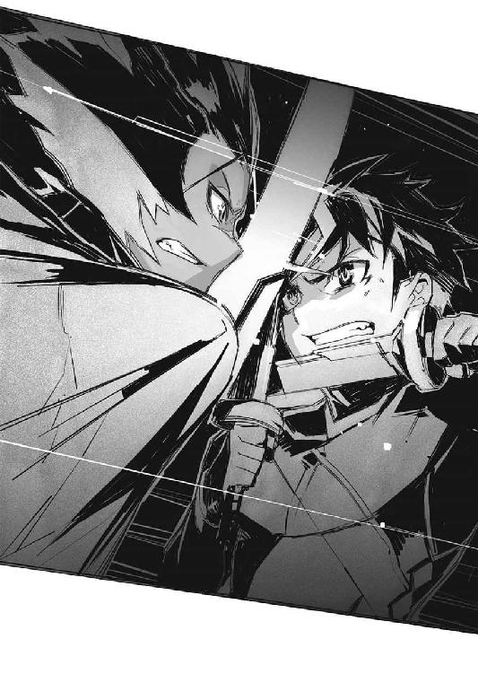
「死ね。死んでなくなれ」
まるで呪う様に、その亜人兵は鍔迫り合いの向こうからそう告げてくる。
「俺達が戦陣に立つ為に──お前達は邪魔だ」
「......なに？」
「何が『遺産』だ。何が世界を変えるだ。戦場が無ければ俺達はただの人間モドキだ」
獣の唸る様な声が、呪詛じみた言葉を紡ぐ。
「てめぇは──」
「良いだろう、世界を変える、そんな力なのだというなら、俺達がそれを貰う。使う必要なんて無い。俺達が誰の手も届かない所にそれを棄ててやる。そうすればまた戦争が起きる──俺達は戦陣に立てる。身の証を立てられる......！」
「............」
一瞬、トールは気圧された様に言葉に詰まる。
この亜人兵の言っている事は、細部がよく分からないが......
（俺と同じかよ）
再び世界が戦争で満ちれば──そう願った。
だが......
「戦場に立ってどうするよ？」
トールは歯を剝いて、獰猛な笑みを浮かべながら問うた。
「殺して、奪って、犯して、死んで？ そういうのが望みか？ それが目的か？」
「なに......？」
「殺し合いをして死ねば満足か？ なら喜べ。今ここが、まさに戦場だぜ」
「............！」
亜人兵の表情が歪む。
目的と手段は違う──その事に、この亜人兵は気付いていなかったのかもしれない。
「満足したなら死んで退きやがれ！ 俺はこんな所でぐだぐだやってる暇はねえんだよ!!」
相手の表情に浮かんだ一瞬の怯み──隙をこじ開ける様にして、トールは吠えた。
眼の底が、未だ焼かれたかの様に色が戻らない。
だが、朧気に見える様になった視界を頼りに、ヴィクトルは走っていた。
「愚かな事を......愚かな事を......！」
呪文の様にそう呟きながら、ヴィクトルは長い通路を進んでいく。
通常の研究施設から、一本だけ島の北へ北へと延びているその通路は、擬獣の各種『性能』を測る為の、試験場に繫がっていた。擬獣の力は強大である為に、安全確保の意味も在り、出来るだけ通常の研究施設から離れた場所に、試験場を置いたのだ。
そこには、大樹に偽装した監督塔がある。
そして擬獣を大量に制御する為の術式を積んだ、大型魔法機関も。
勿論、個人としての戦闘能力は、ヴィクトルなど亜人兵に遠く及ばない。施設内という限定空間ならば尚更の事だ。接近戦においては、魔法師はただひたすら狩られる側だ。
しかし──あそこに辿り着けば。
愚かな亜人兵を、まとめて駆逐する事も不可能では無い──
「愚か者共め......！」
ヴィクトルは監督塔の地下の入り口、分厚い鉄扉を押し開くと、梯子を登り、階段を駆け上がって、監督塔の上端を目指す。
その監督室に滑り込むと、そこには最後に訪れた際に使ったままの、大型魔法機関がそのまま設置されていた。
「............これで」
まるで玉座の如く一段高い位置に設けられた御者席に座るヴィクトル。
背もたれの部分から接続索を引き出して首に巻くと、結印を確認──口頭で先ず呪文を詠唱して、基礎魔法回路を起動。
「アーウェ・アーウェ・サティ・セイブ・アーウェ──」
手元の操作桿を引いて倒すと、魔法術式を組み込んだ円筒が発条の力で高速回転を始めて、追加術式を擬似詠唱し始める。
「亜人兵など──」
次々と連鎖的に立ち上がっていく術式を脳裏で確認しつつヴィクトルは言った。
「所詮、特殊用途用の消耗品に過ぎないというのに......『遺産』を獲得するまでの雑用に使えるかと、飼っておいてやったものを、何を思い上がっているか！」
ヴィクトルは、通信魔法術式の起動を確認。
そして──彼は意識の『枝』を伸ばしていく。
仮想の闇の中で、それは、幾つもの擬獣に繫がっていった。
この島には各種の擬獣が──陸戦可能な個体に限っても三百体以上存在する。
それらは全て、ヴィクトル達の錬生術が創り上げた、複製棄獣だ。脳の一部を切除して、そこに通信魔法の受信器を埋め込んである。元より脳の部分切除によって思考能力は著しく低下しているが、そこに専用の受信器を埋め込む事で、装鎧竜や大海魔といった、精神圧の高い棄獣も、自由自在に操れる。
「思い知るが良い！」
実際、ヴィクトルが操作可能な棄獣の中には、装鎧竜も十体以上含まれている。更に双頭犬、奇眼鳥、独角馬を含めれば、亜人兵の百人やそこら、問題無く鎮圧できるだろう。
ヴィクトルの周りに、青白い光が幾つもの魔法陣を描き出す。
同時に──制御可能な棄獣の一覧が、ヴィクトルの脳裏にずらりと並んだ。
その全てに命令用の仮想経路を繫ぐと──
「──蹴散らせ！」
椅子の肘掛けを握りしめながらヴィクトルは叫んだ。
第四章 皇帝の遺産
LEGACY OF EMPEROR
ガズ帝国が崩壊して──四年。
ヴィクトル達は、しかし孤島に運び込まれた資材を用いて、営々と研究を続けていた。
研究を命じたガズ皇帝は、もう居ない。だがガズ皇帝が目指したもの、求めたもの、それを造り出す事は既に、ヴィクトルの生涯を費やしても達すべき目標となっていた。
「......陛下」
それを壮観と呼ぶ者も、異様と評する者も居るだろう。
およそ平凡な人生を送っているならば、眼にする事の無い光景である。
幾つも──三十を超える大小の硝子球が並んでいる。そしてその中に、まるで胎児の如く身を丸めて収まっているものは、棄獣や──人間だ。
いや。人間ではない。正しくは亜人兵だ。
多くの場合に、亜人兵は妊婦に魔法による処置を施して創り上げるが......実の所、それでは量産が利かない。結局、人間が一人生まれて育つのと同じだけの手間暇が掛かってしまう。だからこそヴィクトル達はこうして、錬生術を推し進め、女の腹に頼らない方法で亜人兵を造り出す技術を、確立しつつあった。
棄獣を複製する技術の応用だ。
いざ試みてみれば、棄獣に関連する技術は、亜人兵にも──そして普通の人間にも応用が利く。これが技術として確立されれば、場合によっては、世界の在り方すら変わるだろう。
だが......それとて所詮、研究の副産物に過ぎない。
確立した錬生術、量産した棄獣、それらを基に目指す更なる先。
全てはその為の礎、いや『部品』に過ぎない。
目指すは──
「──全く、の、無意味」
嘲るのでも、罵るのでもなく。
不意に降ってきた声に、ヴィクトルは視線を上げる。
壁際に設置された、幾つもの硝子球──その、一際巨大な一つ。
その中に閉じ込められた大海魔が、緩やかに触手を動かしている。
この硝子球だけは、他と異なっていた。
内向きに──まるで拷問器具の様に幾つもの『針』が突き出ていて、大海魔の殻に刺さっている。この大海魔は、複製ではない。その『元』だ。
第一世代の大海魔。
単に擬獣を作る為に捕まえたはずのそれは──しかし色々とヴィクトルも知らぬ事を知っている様だった。だからこそ、一通りの実験を終えた後も、未だ殺して棄てずに生かしてあった。もっとも多分にそれは、ヴィクトルの気紛れによる部分が大きかったが。
「所詮、生け簀、の、中の、魚の、足搔き、だ」
「............」
ヴィクトルは、眼を細めて大海魔を睨み据える。
海の棄獣は、己の閉じ込められている硝子を震わせながら、更にこう続けた。
「勿論、世界は、変え、得る、だろう。当然だ。世界は、お前、達、が、思っている、程、に、絶対、でも、なければ、完全、でもない。だが、生け簀、が、変わって、何か、中の、魚に、影響が、ある、か？」
「......黙れ化け物」
ヴィクトルは唸る様に言った。
「私は陛下の理想を知りたい。変えた世界の先に在るものを」
「何も、無い」
あっさりと大海魔は言った。
「生け簀、の、柵の、向こう、に、理想の、世界が、ある、とでも、思った、のか。そんなもの、は、そもそも、存在、し、ない。更に、大きな、生け簀、が、ある、だけ、だ」
「...............」
「傀儡、よ。お前の、主も、また、傀儡、でしか、ない、事を、知る、べき、だ」
「......黙れと、言っている」
ヴィクトルは呟く様に言うと──指先で探り当てた操作桿を引く。
途端、大海魔を納めた硝子球は、固定を外され、繫がっていた幾つもの管をも自重で引き千切り、ゆっくりと転がり墜ちて──擂り鉢状になっている床に激突。
砕けた硝子の破片も、針も、中の液体も、そして勿論、大海魔も、全てが中央に穿たれた孔に滑り落ちていく。それらは不要となった実験体を棄てる為のものだった。
「傀儡？ 私は陛下の理想を知り、理想を超える。いつまでも陛下の背を追うだけの幼子などではないのだ」
ヴィクトルは唇を嚙み──壁際に並ぶ硝子球の群れに背を向け、その部屋を後にした。
追憶は一瞬の事だった。あるいは、通信魔法の起動に伴う雑信号が、過去の記憶を断片的に浮かび上がらせたのか。
「所詮、生け簀の中の魚──だと？ だからどうだというのだ！」
ヴィクトルは、笑いながら通信魔法で繫がった棄獣達に命令を下す。
掃討対象は亜人兵、及びチャイカの従者達。
対象外は銀髪と紫瞳の少女──及び同僚の魔法師達。
『標』を付けていても、いなくても、亜人兵は全て排除すべし、と最優先命令を送った。これで造反した愚か者共と、侵入者は、全て片付けられる筈だった。
「私は、そんな夢物語の様な話に、自分を捧げる気はない」
ヴィクトルは唸る様に呟いた。
「陛下の『遺産』は私が完成させる。それをどう使うかも、私が決める......！」
監督塔の壁にはめ込まれた覗き窓の硝子越しに、動き出す棄獣達の姿が見える。
独角馬。奇眼鳥。双頭犬。装鎧竜。
本来、隊列など組む筈の無い怪物達が、整然と、施設の中に進軍していく──
「あと少し。あと少しで『遺産』の操作法が分かる！」
不完全な記憶走査方法により得られる情報は、断片的だ。
だが幸い──『チャイカ』は複数存在する。彼女等から得られた情報を繫ぎ合わせていけば、ヴィクトル達が完成させた『遺産』の扱い方が、分かる筈だった。
そう。全てはガズ皇帝の引いた設計図通りに造ってきただけの事だ。
だから、詳細な操作方法が分からない。
それが世界を変える程の力を持っていると分かっていても──どう使えば良いか分からないという馬鹿げた状態から、ようやく抜け出せるのだ。
「私は──陛下を超える！」
自分に言い聞かせる様に叫ぶヴィクトル。
その背後で──
「............」
いつの間に顕れたのか。
トール・アキュラ達が『ギイ』と呼ぶ少年が、静かに笑っていた。
戦況は──唐突に一変した。
「──!?」
水面に幾つもの水柱がそびえる。
それが亜人兵達と同様に、通気路や廃棄路を通ってこの洞窟に飛び込んできた何かだというのは分かった。だが亜人兵達と異なり、鎖や縄を用いる事無く落下してきたそれは、派手に水飛沫を飛び散らせて一旦、水面下に沈んでから──次の瞬間、改めて自身が水柱を引きずり上げる様にして、姿を現していた。
独角馬。
黒い、虚空を蹴って走る肉食の馬は、牙を剝き出しにしながら水面を蹴り、虚空を蹴り、亜人兵達に襲い掛かった。
「なんだ!?」
トールは眼を疑う。
棄獣は亜人兵の側ではなかったのか。
「トール!!」
チャイカが叫びと共に魔法を撃つ。
丁度、亜人兵と斬り結んでいたトールに向けて、一直線に飛び掛かってきていた独角馬が、魔法の打撃によって吹っ飛んでいく。自らの突進の勢いを加えて、迎え撃たれた形であるからか、頭部の角が折れ飛んで──魔法の『芯』を失ったその巨体は、虚空に留まる事が出来ず、水面下に没していた。
「別に、我々を助けてくれるという訳でもなさそうだ」
と鉄槌を振り回しながらアカリが言う。
確かにその通りだった。独角馬は手当たり次第に人間に襲い掛かっているだけで、亜人兵とトール達の区別など全くついていない様だ。
「ちいっ──」
トールと斬り結んでいた亜人兵が、蹴りを放って後方に跳ぶ。
水面付近に未だ留まる大海魔の殻の上に着地すると、その亜人兵は飛び掛かってきた独角馬の鼻先に斬撃を放つ。速いが──浅い。独角馬は大きく顔面を切り裂かれて血を噴きながら亜人兵の脇を通り過ぎ、洞窟の壁面に激突しながら、傲然と怒りの吠え声を上げた。
「ヴィクトル・イズマッシュ......！」
亜人兵が、頭上を振り仰いで怨嗟の籠もった叫びを上げる。
それに呼応するかの様に──
「!? ──まずい！」
通風口や廃棄口から、第二陣が飛び出してきた。
トールは咄嗟に亜人兵達に背中を向けて岩礁を蹴ると、チャイカとニーヴァに覆い被さる様にして押し倒す。
「ぐっ──」
その背中に亜人兵からの斬撃が走ったのは次の瞬間である。
鋭い痛みを覚えつつも、しかしトールに、背中を庇っている余裕は無い。
「厄介な......！」
新たに飛び込んできたのは、奇眼鳥である。
あの棄獣の視線に──視線の魔法に曝されれば、それだけで戦闘不能になる。そこへ独角馬が突っ込んでくれば、生きたまま全身を貪り喰われるだけだ。
「トール!?」
チャイカが悲鳴じみた声を上げるが、これにも構っている余裕は無い。
代わりに──トールは妹に向けて叫んだ。
「アカリ！」
「──承知」
頷きながらアカリもフレドリカの襟首を摑んで水の中へと飛び込む。
幸い──と言って良いのかどうか──視線の魔法は水の中までは届かない。良くも悪くも視線そのもの、直視出来ない処にその効果は及ばないのだ。
だが──
「......！」
大量の泡がトール達の全身を包み──その向こうに見えたのは。
（水中もか！）
暗い、恐らくは外部へと続く孔の底から、何本もの触手が入り込んでくるのが見える。恐らくは複製された大海魔のものだろう。さすがに本体が入り込める程の孔は開いていない様だが──人間の胴体程もある太さの触手は、それ一本が一匹の棄獣と同等の脅威になり得る。
「............！」
チャイカががぼがぼと泡混じりに何事かを喋っている。
いや。これは──
「............！」
呪文詠唱。
恐らくは以前にも使った嫌水魔法──水を押しのける力場を造り出し、水中でも呼吸や活動を可能にする為のものなのだろう。
だが......
「──!?」
魔法陣が、回転し──だが途中でまるで何かに引っかかった歯車の様に、止まり、震える。
（大海魔の──）
トールが振り返ると、海水の向こうで、触手の先端に小さな青白い光が──魔法の光が点っているのが見えた。
同種の魔法が近距離で発動した場合、相互干渉してしまう事が在る。魔法の効果が発揮されなかったりする位は良いが、逆に、予想外の効果が発揮されてしまって、魔法に対する制御が利かなくなる、という場合も在り得る。
（チャイカ、よせ──）
そう叫ぶも、水中では声はまともに伝わらない。
次の瞬間──チャイカの魔法が、大海魔の魔法とほぼ同時に発動した。
「──!?」
轟──と海水がうねる。
同時発動した魔法の力場が相互に干渉し、洞窟内という限られた空間の中で荒れ狂う。
そして──
「うおっ!?」
トール達は、無茶苦茶に乱れて発生した水流に、抗う間も無く押し流される事となった。
びしゃり──と湿った音を立ててぶちまけられた血が壁を濡らす。
一瞬で事切れて物体と化した魔法師が、床に転がった。
「............」
死体を見下ろす亜人兵達。
それは、この錬生術研究所のあちらこちらで、見られる光景だった。
キリルの扇動により、昨日までの『飼い主』に反旗を翻す事になった亜人兵達。一度タガが外れてしまえば、それは存外、簡単な事で......積年の鬱屈を一気に解決してくれる行為だった。
魔法師達は、あまりに亜人兵達をないがしろにしすぎた。
亜人兵は彼等にとって研究材料の一種に過ぎず、擬人兵の量産試作に成功してからは、更に重要度が下がった。当然──魔法師達の亜人兵に対する扱いもそれに従って下がる。
その事に何の疑問も危機感も、魔法師達は感じていなかった。
姿形は違えど、亜人兵達が、喜怒哀楽を持った同じ人間であるという事を、忘れていたのだ。
「戦場は此処に在った」
亜人兵の一人がぽつりとそう呟いた。
「待たなくて良かったんだ」
「ああ。そうだな」
別の亜人兵が同意する。
「戦乱を起こして貰うのを誰かに期待なんかしちゃいけなかった」
「僕達が闘えばそこはもう戦場なんだ」
「こんなに簡単な事だったんだな......」
「我々の居場所は、僕達自身で作るしかないんだ」
仲間を振り返って、晴れやかに告げる亜人兵の一人。
「さあ──他の魔法師も探し出して」
そこまで言った──その時。
「～～～～ッ!?」
通路の方に居た亜人兵が、何か叫ぶのが聞こえた。
「なんだ？」
魔法師達を斬り殺した亜人兵達は、揃って通路に出る。
そこで彼等が見たものは──
「──！」
通路を走ってくる──双頭犬の群れ。
咄嗟に亜人兵達は腕に巻いた『標』を確認する。
擬獣達は、基本的にこの『標』が在る者を襲わない。少なくとも亜人兵達はそう教わっていた。だからこそ数体居た擬人兵も、問題無く排除する事が出来たのだ。
だが──
「......おい!?」
双頭犬の頭部の片方──魔法の『芯』たる副顔、目鼻の無いそれが、震える。
──へるけるん、うんぜるん、こるけるん......！
呪文詠唱。
まずい、と感じた瞬間にはもう手遅れだった。
双頭犬達から、雷撃の魔法が放たれる。青白い電光は通路の壁を、床を、天井を文字通りに光の速さで這って、亜人兵達に襲い掛かった。
「──ぎゃっ!?」
悲鳴を上げて痙攣する亜人兵達。
なまじ新月刀という雷をよく通しやすい武器を携えていたが故に、彼等は、もろに雷撃を喰らっていた。その場に次々と倒れていく亜人兵達の喉笛に、双頭犬が、魔法器官でない方の頭部を振りながら食らいつく。
今度、血をまき散らすのは亜人兵達の番だった。
だが──
「ぐっ──」
いち早く、先の部屋に逃げ込んでいた数名は、雷の直撃を免れていた。
彼等は、仲間達に食らいつく双頭犬に、新月刀を振りかざして襲い掛かる。棄獣とはいえ、魔法は魔法、呪文詠唱の時間を要する事に変わりは無い。元より獣に匹敵する身軽さを備えた亜人兵達ならば、武器を持っている分だけ、格闘戦では双頭犬よりも強い。
数匹の双頭犬が、逆に喉を切り裂かれて倒れる。
そして──
「喰らえッ！」
瞬く間に二頭を倒した亜人兵が、三頭目の首に背中から新月刀を突き刺す。
だが──
「──!?」
青白い光と共に、傷が──消えた。
「ち──治癒魔法？」
次の瞬間、双頭犬の背中から突如として生えた『剣』に、亜人兵は貫かれていた。
亜人兵達は、気付いていなかった。
先の二頭と違い、三頭目は稲妻を発していなかった──双頭犬特有の、雷撃魔法を使っていなかったという事に。一塊になって襲ってきた為、個々の区別などついていなかったのだ。
「がはっ......ま、ま、まさか」
その台詞も、更に生えた『剣』が顔を突き刺す事で途切れてしまう。
「──!?」
愕然とする他の亜人兵達の前で、双頭犬は青白い光を帯びながら姿を変える。
二つどころか、九つの頭を持ち、八本の尾を備え、鱗にて身を鎧う、異形の怪物に。
「装鎧竜!!」
気付いた時には、もう遅い。
九方向から襲い掛かる頭部が、亜人兵の全身に食らいつく。
「ぎ、あ、あ、ああああ──」
悲鳴すらもまともに放てぬまま、その亜人兵は──九つの首によって、それぞればらばらの方向に引き裂かれ、九つ分の肉塊となって、通路に転がっていた。
「............！」
残った他の亜人兵が、身構える。
だが、その表情には恐怖の色が濃い。脳の一部を削られ、精神支配を受けている擬獣と異なり、なまじ自由意思が──自我があるだけに、彼等は恐怖に囚われる。戦場だ何だと言ってみても、大多数の亜人兵は、自分が殺される側に廻る恐怖というものを、知らなかった。
それも、身も蓋もない、圧倒的な力で──ただひたすらに、嬲り殺される恐怖を。
双頭犬に擬態していた装鎧竜が、ゆらりと姿を変える。
そして──殺戮が始まった。
蒼い瞳と紅い瞳。
気がつけば──妖眼が、すぐ目の前に在った。
「うおっ!?」
思わず声を上げて、トールは飛び跳ねる様に身を起こす。
そして当然、互いの鼻先が触れる程の近さで彼の顔を覗き込んでいたニーヴァと、正面から頭突きをする事になった。
「ぐおっ......」
思わず頭を抱えるトール。
対して──ニーヴァは、頭突きを喰らった勢いで仰け反りはしたものの、そのまま尻餅をついた程度で、きょとんとしている。痛がって顔をしかめる事すら無かった。
「石頭め......！」
唸るトール。
頭突きの類は意外に格闘戦で重宝するので、トールも何度か経験が在るが──身構えずに事故の様な形で頭を衝突させると、意識的にやる頭突きに比べて何倍も痛い。
しばし頭を抱えて苦痛を堪えてから──念の為トールはニーヴァに尋ねた。
「......大丈夫か？」
「大丈夫」
とこっくり頷くニーヴァ。本当に痛くも痒くも無いらしい。
「どういう頭蓋骨してんだよ......」
呻きながらそう言い──そしてトールは改めて辺りを見回した。
「此処は──」
それは、何処かの部屋の中だった。
すぐ傍の壁に通風口らしき孔が開いている事からして、通風口を逆流する海水に押し流されて、此処まで入り込む事になったのだろう。辺りの床はびしょ濡れで、トールの周りには、眼を回しているチャイカと──
「............」
トールは近くに落ちていた小機剣を握る。
トールの傍に倒れていたのは、何度かトールと斬り合っていた、黒と亜麻色、二色の髪を備えた亜人兵であった。気絶しているのか、それとも死んでいるのか、壁の方を向いた状態で微動だにしない。
アカリとフレドリカの姿は無かった。
別の場所に押し流されたのか、あるいは未だあの洞窟の中に居るのか。
そして──
「中々にしぶといね」
静かな声で、そう評する者が一人。
壁際に立つその姿は──見覚えの在るものだった。
「......ギイ!?」
この少年が神出鬼没であるという事は、理解していたが。
まさか──こんな場所で出会すとは、考えてもみなかった。
「お前、一体......」
「折角、次の『遺体』の持ち主の情報を与えたのに、こんな所で道草を食っているのかね」
ギイは呆れたかの様な仕草で、首を振った。
「もっとも、そのお陰で此処を見つける事が出来た訳だがね」
「......なに？」
「ガズ皇帝の用意した、錬生術研究所。最初から自分が──ガズ帝国が滅ぼされる事を予測した上で、敢えて国外に用意した秘密の施設だよ。こちらとしても存在は把握していたけれど、正確な場所までは分からなかった」
ギイの口調は平然としていて──まるで世間話をしているかの様だ。
「その意味では君達には感謝すべきだろう。だが──」
ギイは眼を細めてこう続けた。
「余計な事まで知ってしまった様だ」
「......なに？」
「触れずとも良い所にまで触れてしまった。だから君達には『棺姫のチャイカとその仲間達』の役目から降りて貰う事になった」
いきなりそんな事を言うギイ。
「ああ。大丈夫だよ。代わりは未だ居る。君達が居なくなっても、こちらは問題無い」
「......干渉しないと言わなかったか？」
「勿論、私は干渉しない」
ギイは頷いた。
「私は直接、君達に手を下す事は出来ない」
言って彼が一瞥するのは、壁際に転がっている亜人兵だ。
「私は提案しただけだ」
それはつまり、先の亜人兵達の襲撃はギイが唆したという事か。
亜人兵達の上に居るであろう施設の管理者達とは──別に。そして棄獣達は、造反して勝手に動き始めた亜人兵達を粛正する為に、施設の管理者達が遣わした？
「──ッ!!」
トールは──懐に入れた指先が探り当てた手裏剣を抜き打ちで放った。
自分でも文句のつけようの無い、絶妙の一撃。それは真っ直ぐにギイに向けて飛んだかと想うと、次の瞬間、彼の背にしていた壁に突き刺さっていた。
「......！」
まるでギイなどそこに居ないかの様に、綺麗に、その身体を通り抜けて。
「無駄な事だ」
ギイはそう言った。
「水面に映っている影を叩いている様なものだ」
「......なんだと？」
「どれだけ必死に叩いても、それは本体ではない。君にこちらを直接、攻撃する術は無いのだよ。無駄な努力を繰り返したいというのならば、止めはしないが」
ゆらりとギイの姿が揺れる。
まるでその言葉通り──水面に映った影の様に。
そして次の瞬間、ギイは最初から存在していなかったかの如く、綺麗に消滅していた。
「本当............何なんだアレは」
トールは唸る様に言った。
ギイ自身が直接、何らかの攻撃をしてくる事は無い様だが、代わりに周囲の者を唆してトール達にけしかける事は、可能であるらしい。
（......そうか。奴自身が俺達に触れられない？）
竜騎士ドミニカが持っていた幻灯機の虚像と似た様なものか。
「......いや」
今は、そんな事を考えている場合ではない。
まずは此処から離れねばなるまい。いつ亜人兵の仲間が、あるいは棄獣が押し寄せてくるかも分からない。アカリとフレドリカも捜さねばならないだろう。
トールはチャイカの身体を起こすと......背中の側に廻って活を入れた。
「っ......げほっ......！」
咳き込みながらも少し水を吐き、チャイカはすぐに意識を取り戻して眼を瞬かせた。
「トール......」
チャイカはしばし、ぼんやりとトールの顔を見つめていたが。
「......！ トール！ 傷！」
何か思い出した様子で、顔色を変えてそう言ってきた。
「背中！ 傷！」
「あ？ ──......ああ」
とトールは頷いた。
チャイカが言っているのは、彼女達を庇った際に、亜人兵につけられた背中の傷だ。
「トール......トール！」
チャイカは慌てて彼の背中側に廻ると、機杖を引き寄せて言った。
「傷塞ぐ──何とか」
「いや。見た目は派手だが、さして深くは──」
言いかけて振り返り──チャイカが両眼に涙を溜めているのを見て、トールは絶句した。
「な、なんだなんだ、なんだよ!?」
「......出会った時」
トールの背中に額をつける様にして、チャイカは言った。
「同じ。大変。傷」
「出会った時？ あ──ああ」
トールは苦笑した。
そういえば彼女と初めて出会った時も、独角馬とやり合っていて、しかも背中に傷を負い、更には水に流されるという羽目になった。彼女があの時の事を思い出すのも当然であろう。
「大丈夫だ、大丈夫だよ、今までだって怪我した事は何度もあったろうに」
「......でも」
トールの背にしがみつく様にしてチャイカが言う。
「トール......でも......私......」
「......？」
「もしかしたら......私......私......偽......」
そこまで言ってチャイカは言葉に詰まる。
「トール......命張る価値......」
「未だ言ってるのか、お前は」
トールは溜息をついて言った。
だが成る程、と納得する部分もあった。
紅チャイカの時は未だ、曖昧だった。
だがガヴァーニ領で蒼チャイカに出会い、自分達の存在が、何者かに仕組まれたものらしい、と知らされて以降、チャイカは普段通り振る舞っている様に見えても、何処か上の空に見える時があった。
恐らくは自分の存在そのものに、チャイカは疑問を持ったのだろう。
自分は本物のチャイカ・ガズではないかもしれない。
ならば、自分はトール達が命を張るだけの価値は無いのではないか──と。わざとではないが、チャイカはトール達を欺いていた事にも成り得る。
「前にも言ったけどな」
その紫の潤んだ瞳を覗き込みながら、トールは言った。
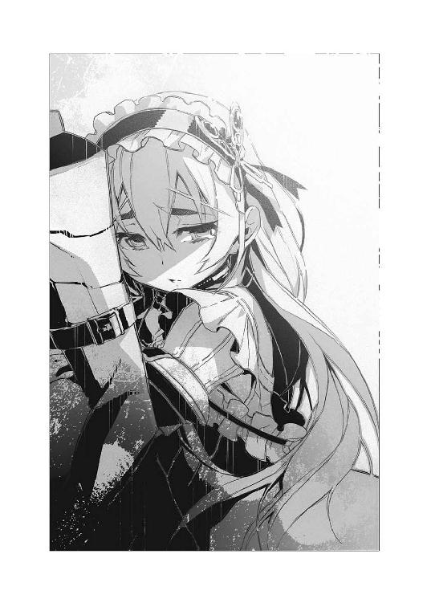
「俺は別に、お前がお姫様だから一緒に居るんじゃねえよ。お前が昔何者だったかとか関係ねえよ。俺の命は俺のもんだ。売値も、何に賭けるかも、俺の自由だよ。その上で、俺は俺の命をチャイカ・トラバント、お前に売ったんだ。今更、返品はきかねえよ」
「............」
「立つべき戦場を失って、存在理由を見失って──生き腐れてた俺に、目標をくれた。それはお前だ。それだけは間違いないだろ？」
「............トール」
しばし、チャイカは言葉に詰まったかの様に沈黙していたが。
「トール！」
感極まった様な声でそう言うと、ひし、とトールの背中にしがみつく。
「痛い、痛い！」
「あ、しゃ、謝罪！」
半ば照れ隠し、半ば本気でそう叫ぶトールから、慌てて身を離すチャイカ。
改めて、トールは彼女を庇う様にして立ち上がると──小機剣を握り直して言った。
「ところで、そこのお前」
「......!?」
チャイカが驚いた様子でトールの顔を見上げる。
だがこれには構わず、トールは壁際の方に──そこに転がっている亜人兵に向けて言った。
「そろそろ気絶したままの振りにも、飽きてきたんじゃねえのか？」
「──!?」
チャイカが慌てて首に接続索で繫がったままの機杖を手繰り寄せると、これを構えた。
もっとも呪文詠唱しなければ魔法が使えない訳だから、魔法を使う為、というより単に棍棒代わりに構えているのかもしれない。
「............」
トールの視線の先で、その亜人兵は──ゆっくりと身を起こした。
やはり意識を回復していたらしい。
だが──
（やはりな）
トールは口の端に薄く笑みを浮かべる。
立ち上がった姿を見れば分かる。明らかに亜人兵は左肩を痛めていた。
（助かったぜ）
もし亜人兵が万全の状態であったならば、トール達はその時点で詰んでいた可能性が高い。トールは手負い、チャイカに格闘戦技能は無く、ニーヴァに至っては何を考えているのかすら定かではない。逆に言えば──亜人兵は負傷していたからこそ、トール達に襲い掛かる機を計っていたのだろう。
「で──提案だが」
亜人兵が右腕だけで新月刀を構えるのを見ながら、トールは言った。
「一時休戦したい」
「......なに？」
驚いた様に亜人兵は眼を細めた。
「細かい事情は分からねえが......お前等、棄獣を操ってる連中とは仲違いしてるんじゃねえのか？ さっきの洞窟では、棄獣がお前達に襲い掛かってたよな？」
「............」
亜人兵は無言でトールを睨み付ける。
「俺達は、別にお前達の事なんてどうでもいいんだよ。お前達が攻撃してこないなら、敵対する理由は無い」
言いながら──トールは懐から引き抜いた手裏剣を放った。
「──ッ!?」
それは咄嗟に身構える亜人兵の傍らをかすめて飛び去り、そして部屋の端、物陰に潜んでいた奇眼鳥を、顔を出した瞬間に、撃墜していた。
額に手裏剣を喰らった奇眼鳥が、ばたばたと藻搔いて──そして動きを止める。
亜人兵は、一瞬、啞然とした表情でそれを振り返ってみていたが──
「戦場がどうのとか言ってたな。そんなに戦いたいか？ だが何の為に？」
僅かながらも自嘲の響きを帯びた声で、トールは問うた。
「何の為だと？」
「俺は戦場の狗と言われる乱破師だ。人殺しがいけないだの、平和が尊いだの、お為ごかしを言う積もりはねえよ。誰かを殺して除けなきゃ埒があかない場合もあるだろうさ。けどそれが目的になってるってんなら、滑稽な話だぜ？」
「トール......」
チャイカが紫の眼を瞬かせて、トールの横顔を見つめてくる。
彼女は勿論、覚えているだろう──トールが何故、戦乱の到来を望んでいたかを。
「戦う事は手段であって目的じゃねえだろ。ただ戦えればいいってだけなら、単に自分達で殺し合ってりゃいいじゃねえか。つまんねえ事にこだわってないで、別の目的でも見つけろよ」
「手段とか......目的とか......」
亜人兵はしばらくトールを睨んでいたが──ふとトール達に背中を向けると、新月刀を鞘に収め、先にトールが殺した奇眼鳥の処まで歩いて屈み込んだ。
「お前には選ぶ自由が在ったのだろう。贅沢な話だな」
「......なに？」
奇眼鳥の死骸をつまみ上げながら、亜人兵が振り返る。
「これは、作られた生き物だ。魔法師の支配を受けやすい様に、脳の一部を切除されて、そこに、代わりに通信魔法を受けやすい様に、小さな絡繰りが埋め込まれている。戦闘用の傀儡として使う為に。自然に生まれた生き物ではなく、最初からそういうふうに複製されたんだ」
「......大した技術だな」
と皮肉では無く本気でトールはそう言った。
しかし──
「我々亜人兵も同じだ。戦争の道具として作られた。だから戦争が無くなれば存在する理由すら失う。生きる目的を失う。存在を許される居場所を失う。手段？ いいや。我々は最初から戦う事が目的だ。それ以上でもそれ以下でもない」
亜人兵は奇眼鳥の死骸を放り出しながら続けた。
「自分で目的を見つける？ 馬鹿な。最初から存在理由の無い生き物ならともかく、我々はそういう風に造られているんだ。他の生き方など出来る筈が無いじゃないか」
「......で......でも」
チャイカが喘ぐ様に声を出す。
「それは......」
「どうだかな」
トールは皮肉げな口調で言った。
「あの洞窟の大海魔に聞いたが。俺達、人間ですら、何かの目的の為に、誰かに造られた生き物らしいぜ？」
「......なに？」
眉をひそめる亜人兵にトールは更に言い重ねた。
「大して変わらねえよ。俺達もお前達も。亜人兵としての居場所がねえってんなら、造れよ。それを目的にして戦えよ。それで良いだろ」
「............お前は」
むしろ亜人兵の表情には、呆れの色が滲み始めていた。
しかし──
「あまり偉そうな事は、俺も言えた義理じゃねえけどな。『先輩』として一言忠告してやるぜ。世界ってのは割と簡単に、変わるぞ。だったら自分で変えるのも在りだろ」
トールはそう言い切った。
「自分が変われないなら、世界を変えろ」
「......乱破師の技には口先でもっともらしいホラを吹くのも含まれるのか？」
吐き捨てる様に亜人兵は言った。
そして──
「......キリルだ」
しばしの沈黙の後、ふと思い出したかの様に亜人兵は言った。
「なに？」
「キリル・タトラ４７」
一瞬、トールは何を言っているのか分からなかったが。
「それが──お前の名前か」
「そうだ」
頷く亜人兵──キリル。
名乗ったという事は──とりあえずはトールの、休戦の提案を受け入れても良い、という事か。騎士でもあるまいし、まさか今から殺し合う相手に名を名乗らねばならぬ程、亜人兵が様式美にこだわる訳でもあるまい。
「トール・アキュラだ。こっちはチャイカ・トラバント」
とトールは言う。
そしてニーヴァを指さして問うた。
「こいつは、お前等の方が詳しいのか。何なんだ？」
「.........分からない」
キリルはあっさりそう答えた。
「ヴィクトル・イズマッシュが──この施設の管理責任者だが、その魔法師が繰り返していた実験の、被験体だとは分かるが。我々は魔法の知識は無いし、説明もされていない」
「......仕方ねえな」
トールは溜息をついた。今一つ正体不明のこのニーヴァという少女を連れて歩くだけでも不安要素なのである。せめて何者なのか分かれば、と思ったのだが。
「ここで延々ダベってても仕方ない。とりあえず動くぞ」
トールはチャイカ達を振り返って言った。
走る。走る。走る。
しばしば乱破師の能力は、その実態を知らぬ者達によって誇張されて伝わる事が多いが、彼等は決して、無限の身体能力を持つ怪物ではない。実の所、彼等の最大の能力は、絶対的な筋力の大きさでも反射の速さでもなく、身体運用の妙──つまりは必要な時に必要な力を出せるという事である。
その究極が奥義〈鉄血転化〉であるが、これは身体運用の極端な例、つまり『一時的に限界を超える』という例に過ぎない。乱破師は、短時間で大きい力を出す、という方法の逆、つまり長時間の持久力を第一に、これが適正と決めた力を制限して出すという技能をも持っている。
故に──
「きりがない」
通路を走り、地上へと走り出たアカリは、愛用の鉄槌で追いすがる棄獣を牽制しつつ、森の中を逃げ回っていた。
勿論、足を止めて正面から闘うなどという愚かな真似はしない。相手は総数も分からない棄獣の軍団だ。一頭ずつは何とか倒せるとしても、複数、それも互いに援護の概念を持って攻撃されては、さすがにアカリでもどうにもならない。
「すごいすごい。よく体力続くね」
とアカリの背中にしがみつきながら、気楽な口調で言うのは、フレドリカである。
「そう思うなら降りろ、竜っ娘」
「いやだよーだ」
フレドリカは言った。
「アカリ、いつも邪魔するし」
「貴様が兄様の寝込みを襲おうとするからだろう」
「いいじゃん、一日に一回、嚙み付いていないと装鎧竜って寂しくて死んじゃうの」
「噓をつくな」
物陰から飛び出てきた双頭犬に──応報の形で鉄槌の一撃を食らわせながらアカリは言った。
「貴様を背負っているだけで、結構な負担なのだ。このままでは共倒れだぞ」
「怪我したら嚙み付いて治してあげるよ」
「節操なしか貴様は。御免被る──」
と言いかけて──ふと、アカリは足を止めて首を傾げる。
「待て。貴様は兄様にも何度か嚙み付いている訳だから、これは、間接接吻──いや接吻ではないか？ 体液を触れ合わせる訳だからむしろ......！」
ぶつぶつと呟いてから──フレドリカを降ろし、その両肩を摑んでアカリは言った。
「よし。嚙み付け。今嚙み付け」
「怪我してないじゃん」
「いいから嚙み付け。嚙み付かんと私が嚙み付くぞ」
「......なんかアカリ、眼が怖い」
「お前が言うな、不定形生物が。ええい、怪我すれば良いのか？」
とアカリが言ったその瞬間、背後の茂みを割って──独角馬が飛び出してくる。
その、本来、馬にあらざる牙が、アカリのうなじに食い込むと見えたその瞬間、アカリはその鼻先に──肩越しに突き出した手裏剣を刺していた。
──ぎおおおおおお!?
絶叫する独角馬。精神支配されている様だが、痛覚はそのままであるらしい。
だが次の瞬間、旋回したアカリの鉄槌が、やや下から、すくい上げる様に独角馬の顎を打つ。がつん、と鈍い音と共に独角馬は開いていた顎を無理矢理閉じさせられ、更には牙を数本折られてのけぞっていた。
「............」
そのまま更にアカリは回転──鉄槌の描く軌道は瞬時に変化し、のけぞった独角馬の頭部を真横から、その先端部の尖った方で殴打、槍の穂先に等しいそれは、独角馬の目から頭蓋の内部に侵入し、完全にその脳を破壊した。
鈍い音を立てて倒れる独角馬。
「......休憩終わり」
呟く様に言うアカリ。
どうやら立ち止まっていたのは、休憩を兼ねていたらしい。あるいは反応の速さからして、物陰に独角馬が一頭潜んでいる事に気付いた上で、後ろから襲う様に無防備を装ったのか。
「行くぞ。お前も走れ。というか、馬になって私を乗せる事は出来ないのか？」
「出来るけど。ソレしてあげたら、トールに嚙み付いてもいい？」
「む......仕方ない」
アカリは眉をひそめて言った。
「だがいいか。兄様は私のものだからな。それを忘れるな」
「そうなの？」
「そうなのだ」
アカリは大きく頷く。
「何度もそう言っているのだが、兄様は本気にしてくれない」
「アカリ、冗談多いからじゃない？」
「馬鹿な」
アカリは首を振った。
「私がいつ冗談を言った？」
「............」
「──という冗談はさておいて」
「それ、本当に冗談だよね？」
「............」
互いに何が何だかよく分からなくなってきたのか、二人はしばし、状況を忘れたかの様に、その場に無言で佇んでいたが。
「......まあ細かい事は後でだ」
「はいはい」
頷くフレドリカの身体を青白い光が包み込んだ。
キリルの案内で、トール達は地上に出た。
元々この錬生術研究所は、あまり厳重な警備体制を敷いていないらしい。
秘密裏に設けられた国外の施設だけに、あまり物々しい警備体制を敷いては、むしろその存在を露呈しかねない。先ず何よりも『存在を知られぬ事』が研究所を守る最大の防壁──という考え方が基本に在ったのだそうだ。
「棄獣の──そして亜人兵の複製に成功してからは尚更、警備面は軽視された」
歩きながらキリルは言った。
「亜人兵の警備は減らされた。単純な歩哨作業なら、むしろ、考える力を削り取られている擬獣や擬人兵の方が適している」
「......まあそうだろうな」
キリルの後をついて歩きながらトールは言った。
地上に出るのを選んだのはトールだ。
棄獣の脅威は何処でも変わらない──いや大型の擬獣が動き回りやすいという事では、地上の方が危険という考え方も在る。だが、細い通路や、出入り口が一つしか無い部屋で追い詰められては間違いなく消耗戦になる。その場合、数に優る擬獣の方が有利なのは間違いなかった。
加えて──トールは、自分とは別の場所に流されたであろうアカリが、もし存命であるならば、地上に出ているだろうと判断した。そもそもトールもアカリも同じ師に様々な心得を教わっている。状況が同じなら、同じ判断を下すだろう、という読みである。
フレドリカに関しては──とりあえず彼女の『嗅覚』を期待するしかなかろう。
「............さて」
幾つか設けられていた出入り口──大岩の陰に設けられた扉を閉じながら、トールは周囲を見回した。
大岩を除けば、見渡す限りに、濃い緑が広がっている。この島に上陸した際にも見た森の中だ。視線の通りは悪く、身を隠す場所はふんだんに在る。
棄獣の嗅覚や聴覚が相手では、茂みに身を潜めるなど慰めにもならない──筈なのだが、今回に限ってはそうでもない、という事がキリルの話から分かっていた。
「擬獣達は皆、基本的に最低限の判断力しか無い。特に直接、魔法師が魔法で制御している場合は、魔法師からの命令が、本能的な部分よりも優先する」
これは、棄獣を軍事利用する為には必要な処置だ。
敵を前にしながら、餌をちらつかされて、そちらに注意を向ける様では、兵器としてまるで役に立たない。つまり逆に言えば──擬獣は、棄獣と異なり、優れた嗅覚や聴覚によって多少の『異常』を察知しても、それに対して興味を持つという事が、出来ないらしいのだ。
「ひょっとして......魔法師達の機杖を奪って壊せば、擬獣は大人しくなったりするのか？」
トールは眉をひそめて言った。
島に上陸した際に、擬獣が大人しく整列している光景を見た。
あれが普段の擬獣の状態ならば──命令を下している魔法師から、魔法を使う方法を奪ってしまえば、擬獣がトール達を追って攻撃してくる事も無くなるのではないか。
「多分そうだろう。そして多くの棄獣を一気に操るとなると、個人携帯の魔法機杖じゃ追いつかない。島の北側──実験場に、監督塔がある。その中の大型の魔法機関で操ってる筈だ」
とキリルが答える。
「............北ね」
トールは頭上を見上げた。
丈高く密にそびえる木々の間から、太陽の強い光が見える。
日の位置、強さ、そして体内時計の時間と照らし合わせて考えれば、おおよその方角は分かる。自分の居場所を常に確認しておくのは、戦場では当然の心得だ。
「この場所は分かるか？ 行くのにどれ位、かかる？」
「徒歩なら──」
とキリルが答えかけた──その瞬間。
──もるぜるん もるぜるん えるむん せぶるん わむるん とうるん
しゅねるん ほるん やるん──
「──！」
トールは愕然として身構える。
その声は、四方八方から聞こえてきていた。
「おいおいおいおい......」
先ず見えたのは独角馬が五頭。トール達を囲む様に近付いてくる。
だがトールを驚かせたのは、そちらではない。
その独角馬達の間から現れた──別の影。
それは鎧を着た戦士の格好をした人影が二人分だったからだ。
いや。勿論、単に人間の戦士二人であれば、相手のしようはある。
問題は──トールはその者達の鎧の造り、というか全体的な意匠に、見覚えが在る事だ。
「こいつら......多分、装鎧竜だぞ」
そう。かつてのドミニカ・スコダの鎧と酷似している。
「............」
キリルは答えない。恐らく彼も理解しているのだろう。
森の中では、装鎧竜の巨体は、決して有利には働かない。だから森の中で、なおかつトール達を追い詰めるのに最も便利な形態を採ったという事だろう。
「あちらに小高い丘が在る」
キリルが北東の方を指して言った。
「そこへ逃げる」
「分かってるのか？ それが狙いだぞ、こいつら」
独角馬と装鎧竜の包囲には『穴』がある。
恐らくは意図的に開けられた『穴』だ。そしてその方向にまさにキリルが言った小高い丘が在る。多分、そこに追い詰めた上で、装鎧竜は本来の巨体を取り戻し、独角馬も虚空を蹴るその魔法を活かして、四方八方から攻めるつもりだ。
だが......
「丘の上に、更に大岩が在る。そこを背にすれば少なくとも、背後は気にせず戦える」
「......なるほど？」
頷いてから、チャイカを振り返ってトールは言った。
「チャイカ。長距離の攻撃魔法は使えるよな？」
「むい？ と、当然！」
と気負い込んだ様子でチャイカが頷く。
「今の話聞いてたな。俺達はお前とニーヴァを守ってその丘の上に出て、大岩を背にする。お前は大岩の上に登って、問題の監督塔にある魔法機関を狙い撃ってくれ」
「......！」
はっとした様子で眼を見開くチャイカ。
そう。その監督塔の魔法機関を破壊出来れば、この棄獣達は動きを止める可能性が高い。
「が、頑張る！」
「おう。俺達も頑張るさ」
そう言うと、トールはひょいとチャイカの小柄な身体を小脇に抱える。
「むやっ!?」
「そっちはこのニーヴァってのを頼む。お前等と同じ、研究の犠牲者だろ」
「............」
キリルは束の間、ニーヴァを見つめていたが──無言で彼はニーヴァを抱え上げた。ニーヴァはやはり、ぼんやりとした表情でされるがままになっている。
「──行くぞ」
懐から取り出した煙玉を投げつけながら、トールは叫んだ。
渾身の力を込めて扉を蹴る。
先にセルマが魔法の一撃を当てておいたお陰か、分厚い鉄扉は、あっさりとダヴィードの蹴りで固定が外れ、外に向かって倒れていった。
「よし..................っておい!?」
そのまま外に向かって走り出ようとしたダヴィードは、慌てて立ち止まった。
扉が倒れて地面を打つ音が、しない。
代わりに聞こえるのは波音──波濤が砕けて飛び散る飛沫の音だった。
「............」
彼は両手で、その出入り口の縁を摑んで足元を見る。
床は──地面は唐突に無くなっていた。
「こんな処に、扉とかつけてんじゃねえぞコラ!?」
悲鳴じみた声で叫ぶダヴィード。
扉の向こうは、断崖絶壁になっていた。
鉄扉が落ちた際の音は、波音に吞み込まれて消えたのだろう。
足元から、波が岩肌を叩く音が断続的に聞こえてくる。下手に飛び降りればそのまま岩肌に叩き付けられて即死、あるいは波に吞まれて溺死か。運良く暗礁も何も無い処に着水出来れば助かる可能性は在るが、試してみたいとは、ダヴィードは微塵も思わなかった。
「まずいな。これじゃあ、そもそもこの島から出られねえ」
「大海魔を船代わりに使っていたのも、当然と言うことね」
とセルマが言って──不意に彼女は背後を振り返ると、魔法機杖を構える。
「追い詰められたわね」
まるで他人事の様な口調だが──彼女のその姿の向こうから、双頭犬の石床を叩く軽い足音が近付いてくるのが、ダヴィードにも聞こえた。
「くっそ、これじゃ──セルマ、魔法で浮遊は」
「可能だけれど、じゃあ、代わりにダヴィード、貴方が此処で防いでくれる？」
セルマは装桿を操作しながら問うた。
虚空を走る独角馬や、雷を投げる双頭犬、そして飛行能力が在る装鎧竜に、奇眼鳥。いずれの棄獣であれ、もたもたと魔法で浮遊していては、間違いなく追いつかれて攻撃される。
「............」
顔をしかめるダヴィード。
そんな彼の脇から、チャイカが──
「──ッ！」
鋭い呼気を迸らせて背中の蛇咬剣を引き抜くと、上方へと振り上げた。
その名の通りまるで蛇の如く、緩やかにうねりながら剣はするりと絶壁を這い上がり、そして限界まで伸びきった所で──停まる。
「──ん」
頷くチャイカ。
何度か彼女は手応えを確かめる様に柄を引っ張っていたが──
「おい、チャイカ!?」
「大丈夫！ これで登る！」
いきなり彼女は床を蹴って空中に飛び出していた。
「......大丈夫かよ」
勿論──チャイカの考えはダヴィードもすぐに理解した。
蛇咬剣を鉤爪と縄代わりにし、先端を岩壁に食い込ませて、先に登る、というのだ。
だが元々蛇咬剣はその様な使い方をする事を想定されて造られている訳ではない。また絶壁の状態によってはすぐに蛇咬剣が抜けて、真っ逆さまに墜落──という事も在り得る。チャイカの行動は、かなりの無茶だと言えた。
しかし──
「上到達後、紐、揺らす！」
呆れるダヴィードの前に細い紐が垂らされる。
言うまでもなく、蛇咬剣で絶壁を登攀中のチャイカが降ろしてきたものだろう。
「そしたら──つかまる。いい？」
そんな声も降ってくる。有無を言わさぬ口調だった。
「......やんちゃなお姫様だなあ、おい。今更だが」
「そうね」
魔法を撃って通路の奥から来る棄獣を牽制しながら、僅かに苦笑を浮かべてセルマも頷いた。
足元から甲高い音が、何度も何度も伝わってくる。
トール達が棄獣と闘っている音だ。
「......はっ......はっ......」
独角馬の牙は剣と同様に鋭く堅い。これと打ち合う際の響きは剣戟の音そのものだ。
勿論──当たれば容赦無く肉を裂き骨を断つ事も、また剣と同じである。
トールとキリルが、ニーヴァを護り、大岩を背に闘っている。
ついつい下を見たくなる気持ちを抑え込み、チャイカはひたすらに岩を登り続けた。
「はっ......はっ......」
両手両足を使って大岩の頂に這い上がると──背中の棺を下ろし、チャイカはこれの上に機杖を置いて構える。
測距器を覗き込むと、確かにキリルの言った通りの方向に一本、不自然なそびえ方をしている大樹が見えた。島の外部から見れば──あるいは上空から見ても、ただの樹にしか見えないだろう。だが、チャイカの位置から見れば、その根元には明らかに人工物と覚しき角張った構造体が認められた。
「......トール」
チャイカは不安を必死に意識の外へと追いやりながら、魔法の詠唱を開始した。
「──エスル・ブドル・ディブル・ドラ・グノブル・フブル......」
長距離狙撃の魔法。
それは当然ながら、高い精度を要求される。
必要な補正術式も通常のものに比べると、桁違いに増える。
そもそも魔法は場所や時間や、気温、気圧、その他幾つもの条件によって効果が変わる不安定なものだ。大型で据え付け型の魔法機関ならば、あるいは単純な魔法効果ならば、長い呪文詠唱なしでも発動は可能だが、個人携帯用の魔法機杖ともなると、呪文詠唱や魔法師の技量で補わねばならない部分が増える。
当然、長距離で一定以上の威力を発揮する攻撃魔法となれば、長々と呪文を詠唱し、何重もの調整作業が必要になる。
「アブト・マブト・カラ・シルニコ・バ......」
普段のものに比べると、倍以上の直径を示す魔法陣が、それも複数、空中に描き出される。
それは幾重もの同心円状で重なり、右へ左へと回転し、最適な組み合わせを探っているかの様に見えた。それが即ち、チャイカの調整作業をそのまま反映しているのである。
この距離で魔法狙撃を行うのは、彼女も初めての経験だ。
上手く行くかどうかの自信は、正直言って──無い。
だが......
「............」
チャイカは改めて大岩の麓を一瞥する。
そこではやはりトールとキリルが、独角馬相手に闘っていた。
......独角馬、だけを。
装鎧竜の姿が無い。
「──！」
「チャイカ!!」
トールが叫びながら、懐から引き抜いた手裏剣を投げる。
それは狙い違わず、チャイカの背後に浮かび上がり、これを襲おうとしていた装鎧竜の鼻先に突き刺さった。
勿論、そんな小さな刃物一本で、最も不死身に近いと言われる装鎧竜を斃す事など出来はしない。が、さすがに怯んだか、装鎧竜の動きが一瞬止まった。
「撃て！ 早くッ！」
叫ぶトール。
そうだ。あの監督塔の魔法機関を狙い撃てば、装鎧竜は勿論、独角馬も、他の棄獣も、動きを止める可能性が高い。
「ういっ............顕れよ」
チャイカは測距器の中に映る監督塔を睨み据えながら唱えた。
「〈狙い滅ぼすも──」
だが──次の瞬間。
「......!?」
まさに魔法が実際の現象として顕現し、機杖の先端部分に、雷を放ちながら光の球体が回転し始めたその時。
チャイカの目の前、機杖の前に、ふらりと人影が現れた。
「ギイ......!?」
空中に平然と佇むその姿を、見てトールが吠える。
驚いたチャイカは思わず身を震わせ──
「──！」
まずい、と気付いたその時、既にわずかながらも狙いのそれた光の球が、まるで幻の様にギイの姿を貫き、遥か彼方の監督塔に向けて放たれていた。
虚空に一線を刻む光の球。
それは──命中すれば間違いなく監督塔の壁を撃ち抜き、中の魔法機関を破壊する事が出来るだけの威力を持っていた。
命中──すれば。
「......外れ!?」
喘ぐ様に呟くチャイカ。
チャイカの放った魔法の光弾は、わずかに狙いがそれ──虚空へと消え去っていた。
「くっそ......ギイ、てめえ!!」
下でトールが怒鳴るのが聞こえるが、それ以上の事は彼も出来ない。独角馬の集団をキリルと二人で相手にするのが精一杯だ。
「言っただろう」
ギイは何の支えも無いまま、平然と空中に立ちながら言った。
「君達はここで舞台から降りて貰う」
「............」
チャイカは呆然とギイを見つめる。
間違いなく魔法はギイを貫通した。それは見間違い様の無い事実であった。
しかもチャイカの魔法は監督塔の破壊を目的としたものだ──人間がその射線の上に立てば、それこそ、粉微塵に粉砕されてしかるべき威力である。
なのに──
「ああ。私を君の魔法で殺す事は出来ない」
ギイは頷いて微笑む。
「私は君達とは層の違う空間に存在する。物理的な特性は異なるが、まあ言ってみれば虚像の様なものだよ。だから、私は直接、君達を殺したりする事は出来ないが、それは君達も同じだ。空間の違いを貫く様な、特殊で強力な魔法でも無い限りは、ね」
「............顕れよ〈狙い滅ぼすもの〉!!」
チャイカは改めて叫んだ。
先の呪文と全く同じものならば、調整は改めてする必要は無い。
未だ空間に残ったままであった魔法陣が輝き、強烈な光を凝縮した球が、放たれる。
それは今度もギイを貫きはしたが──今度こそ狙い違わず、チャイカが意図した通りの軌道を描いて飛んでいった。
いける。当たる。
チャイカはそう確信し──しかし。
「──!?」
それは再び、監督塔をかすめて、虚空に消えた。
「な──え？」
チャイカは一瞬、意味が分からず呆然としていたが。
「移動......？」
監督塔が、動いている。
改めて測距器の中を覗き込み、倍率を調整。
すると──監督塔の根元、人工物らしき構造体の部分に、小さな車輪が幾つか付随しているのが見えた。
あの監督塔は機車の上に作られていて、移動出来るのだ。勿論、重心がやたらに高い事を思えば、高速移動は無理だろうが......しかし、狙撃する側としては、対象が動くというのは、厄介この上ない。前述の様に、距離や方角が少し異なるだけでも、魔法の調整が必要になってしまうからだ。
「チャイカ、伏せろ!!」
トールが下から叫んでくる。
はっとして振り返るチャイカの頭上に、本来の姿に戻った二頭の装鎧竜が翼を広げて襲い掛かる。チャイカは咄嗟に機杖を振り向けて──
「顕れよ〈狙い滅ぼすもの〉!!」
調整は一切考えずに魔法を発動。
ほぼ零距離で──今にもチャイカに爪をかけようとしていた装鎧竜の一頭は、魔法を喰らって吹っ飛んでいく。その胴体にチャイカ自身が通り抜けられそうな穴が開いているのが見えた。これがこの魔法の本来の威力なのである。
もっとも、装鎧竜には、あれすら致命傷にはなるまい。
そして──装鎧竜は、もう一頭居る。
それが、先の一頭と入れ替わる様にしてチャイカに襲い掛かる。
流石に──魔法を、更に連撃出来るだけの余裕は無い。
「──ッ！」
思わず眼を瞑るチャイカ。
だが──
「おおッ!!」
──がづん。
叫びと共に響く、硬質の打音。
「............？」
恐る恐る眼を開いたチャイカは──
「......アカリ！」
何処から現れたのか、自分を庇う様な位置に立つ、若い娘の後ろ姿を見る事になった。
彼女の姿のその向こうでは、額にぞっとする様な穴を穿たれた装鎧竜が、大きく空中で後退している姿が見える。
「先の魔法を見てな。フレドリカ──」
「分かってるよ」
そう言って、ばさりと翼を鳴らしてチャイカ達のすぐ傍に降りてきたのは、何度も見慣れた白銀の装鎧竜──言うまでもなくフレドリカだ。
「今一つ気は進まないけど、まあ、あんなの、もう同族とも呼べないんだろうし」
そう言うや否や、フレドリカはアカリに脳天をかち割られて後ずさる装鎧竜に向かって、襲い掛かった。
装鎧竜の急所はまさしくその頭部だ。
魔法を行使する為に必要な『芯』──脳を破壊されれば、いかに不死身を誇る装鎧竜とて、死ぬしかない。アカリはそれを見越し、フレドリカに装鎧竜の上に運んで貰い、そこから飛び降りつつ鉄槌の一撃を食らわせたのだろう。必殺の一撃にはならなかった様だが、それでも傷を消す為に装鎧竜が魔法を使っている間は、フレドリカの攻撃もろくにさばけまい。
空中で二頭の装鎧竜が絡み合う。
だがやはり自己復元の為に魔法を使う装鎧竜は、動きが鈍い。装鎧竜はフレドリカの攻撃をもろに受けて、更に後方へと吹っ飛んでいた。
しかも──
「トールの真似ッ」
そう言うフレドリカが──巨大な竜の姿でその手にしているのは、トールの小機剣をそのまま巨大にしたかの様な形状の剣である。これでフレドリカは相手の装鎧竜を打ちのめしたのだ。
「──兄様!!」
同時に──アカリは大岩を蹴って飛び降りる。
先に装鎧竜にしたのと同様、落下の勢いと自身の体重を乗せた鉄槌の一撃を、トール達に肉薄していた独角馬の脳天に叩き込む。チャイカの位置からでも、角がへし折れ、独角馬が泡を噴きながら倒れるのが見えた。
「チャイカ！」
トールが叫ぶ。
「もう一度狙え、いや、何度でも狙え！ 魔法機関を破壊しろ！」
「う、ういっ......」
そう頷いてはみたものの。
チャイカは冷たい汗が頰を伝うのを感じる。
動いている監督塔を狙撃するのは、自分の力量では無理だ。
どうしても呪文詠唱による調整から、狙うべき位置がずれる。それだけで魔法の効果は半減するし、監督塔は出鱈目に動いているせいで、予め位置を予測して呪文を唱える訳にもいかないのだ。
「............でも」
だからといって、此処で諦めれば、全員が死ぬ。
チャイカは改めて機杖を構えると、呪文詠唱に入った。
頭上を横切る激光の一線。
一瞬だが風景の明暗を逆転させる程の光量を持ったそれは、絶壁を登り終えた紅チャイカとダヴィード、セルマに空を振り仰がせた。
「なんだ？」
「魔法ね。強力な──遠距離狙撃魔法」
ダヴィードにそう答え、セルマは眼を細める。
彼女は機杖を光の飛んだ方向に向けて構えると、測距器の中を覗き込んだ。
「............」
「どうした？」
周囲を警戒しつつ、横目でセルマを一瞥して問うダヴィード。
セルマは測距器の倍率や焦点を調整していたが──
「......ひょっとして」
彼女は改めて魔法機杖の装桿を引いて化石念料の詰まった薬莢を装塡すると、すぐ傍に生えている樹を見上げる。太い──人間一人ならば登っても折れそうにない枝が、何本か幹から分かれているのが見えた。
「ダヴィード。チャイカ。──少しの間、守ってくれる？」
セルマは機杖を背中に背負うと、その樹の幹に手を掛けながら言った。
「............」
ダヴィードと紅チャイカは一瞬、顔を見合わせて。
「何を今更」
「勿論。当然」
二人が頷くのを確認すると、セルマは頷き返し──樹に登り始めた。
監督塔──内部。
魔法機関の御者席に座るヴィクトルに、背後から囁く声が在った。
「そうだ。停まっていては狙い撃たれる。だが動けば、途端に狙撃の難易度は上がる。ゆっくりでいい。だが無秩序に動かねばならない」
御者席の脇に立っているのは──ギイだ。
だがヴィクトルは、その存在を認識はしていなかった。
既に彼の双眸は血走り、狂おしい光を宿している。此処に余人が居れば、一目見て理解しただろう。ヴィクトル・イズマッシュは正気ではない。
「後は棄獣が彼等を全て始末してくれるまで、現状を維持すればいい」
「............」
ヴィクトルは無言。
だがギイは──満足げにその姿を見て微笑んだ。
擬獣の群れは数を増していた。
トールとキリル、アカリの三人で七頭ばかりの独角馬を倒しはしたものの、それは全く焼け石に水でしかなかった。倒す速度よりも、集まってきて増える速度の方が高いのだ。トール達が一頭倒す間に、二頭増える様な状態である。
「くっそ......！」
チャイカと初めて出会った時の事を思えば、むしろこの短時間に複数の独角馬を倒せているのは進歩と誇って良いだろう。武器の違いはあれど、幾度も重ねてきた実戦のお陰で、トールの技量も確実に上がっているのだ。
だがそれも──絶対的な限界というものがある。
背中の傷も浅いとはいえ、トールの動きを阻害する。
「兄様！ 大丈夫か!?」
アカリがそう問うてくる。
今しもトールに嚙み付こうとしていた独角馬の頭を蹴り飛ばすと、その反動を利用して旋回──鉄槌の一撃を独角馬の腹部に叩き込む。
「どうだろうな！」
更に別方向から襲い掛かってくる独角馬に、小機剣で一撃を加えながらトールは叫ぶ。
頭上ではフレドリカが複製装鎧竜を相手に立ち回っているのが見えた。
（しかし──）
不幸中の幸いは、攻め手に、双頭犬や、奇眼鳥といった飛び道具を持った棄獣が居ない事である。単に前衛で投入している独角馬や装鎧竜を巻き込むのを避けているのか、他に何か意味が在るのか無いのかは分からないが──
（待てよ）
ふとトールの脳裏をある種の考えが過ぎる。
自分達が背後に守っている少女──ニーヴァ・ラーダ。
彼女は他の亜人兵とは異なり、何か実験に使われていた様だが──彼女だけを収容していたあの特別な部屋を思えば、この島の魔法師達にとって、やはりこのニーヴァは重要な意味を持つのではないのか？
例えば──擬獣や擬人兵と異なり、唯一無二で、替えが利かない様な。
キリルの言葉を信じるなら、敵が恐れているのは、『複製・量産できる』独角馬や装鎧竜ではなく、このニーヴァ・ラーダを巻き込む事ではないのか？
（ならば──）
「アカリ、この娘をチャイカの処に連れていけ」
背中合わせになって左右の敵と戦いながら、トールはアカリに言った。
「む......？」
「多分、敵はこのニーヴァってのを巻き添えに出来ないから、双頭犬や奇眼鳥を使ってこないんだ。むしろチャイカの護衛は、フレドリカよりもこいつを傍に立たせる方が良い」
「......心得た！」
頷くとアカリはニーヴァを抱え込む。
同時にトールは小機剣を一旦、投げ出すと、両手を組んで膝を落とす。
アカリが軽く跳躍して彼が組んだ掌に乗ったのは次の瞬間だった。
「──りゃあッ！」
トールが全身の筋肉を使って、アカリとニーヴァを放り上げ、同時に、アカリがトールの掌を蹴って跳躍。二人は一瞬にして岩の上にまで跳ね上がっていた。
無防備に両手を掲げ腹を曝すトールに独角馬が突っ込んでくる。
だが──
「トール！」
その上に装鎧竜状態のフレドリカが降ってきたのは、次の瞬間だった。
装鎧竜と独角馬では、そもそもの重量が違う。独角馬は一瞬にして踏み潰されて地に這った。
「なにやってんの」
「悪いな。あてにした」
「............」
一瞬、竜の顔が呆気にとられた様に緩んだ様な気がしたが、あるいは気のせいだったかもしれない。フレドリカに普通の人間と同じ感情は無かろう。彼女の言動は基本的に人間のそれを模倣しているだけに過ぎない──
「しょうがないにゃー」
だが、そう言う彼女の口調は妙に嬉しそうに聞こえた。
「猫かお前は」
剣を振りながら応じるトール。その首筋に──小爆発と共に人間形態化したフレドリカが嚙み付いたのは次の瞬間だった。
「痛っ──何を」
「仮契約だけどこの程度なら」
とフレドリカが言ったその瞬間。
「──！」
トールの足が宙に浮く。
ばさりと自分の背後で巨大な翼が空を打つのをトールは感じていた。
フレドリカが嚙み付いた状態で、更に背後から自分を抱き締めながら──翼だけを竜のそれに戻し、舞い上がっているのだ。
「──これは」
「来るよ、攻撃専念!!」
フレドリカの声に視線を戻すトール。
折しも、二頭の独角馬が虚空を蹴り、螺旋を描く様にして突っ込んでくる。
トールはこの二頭の口に真っ直ぐ、小機剣を突き入れた。
「──！」
びくんと身を震わせながらも、トールの腕を嚙み千切ろうとしてくる二頭の独角馬。
致命傷ながらも──いや致命傷だからこそ、自らの顎すら砕く勢いのその力に、トールは骨が軋み、砕けていくのを感じる。
次の瞬間、ぶつりと音を立ててトールの両腕は独角馬に嚙み千切られていた。
だが──
「うりゃっ！」
フレドリカの叫びと共に、青白い光がトールの全身を包み込む。
次の瞬間、装鎧竜の魔法で再形成されたトールの腕が、独角馬の口腔から、嚙み千切られた先の腕ごと小機剣を引きずり出していた。
トールは絶命した二頭の独角馬を蹴り離し、小機剣を握り直す。
「キリル！」
トールは足元の亜人兵に声を掛けながら、左の小機剣を鞘に戻して腕を伸ばす。
「.........！」
キリルは一瞬の躊躇の後、跳躍──トールの腕に摑まった。
そのまま上昇するフレドリカは、チャイカ達の居る大岩の頂上へとトールとキリルを運んでくれた。トールはキリルをチャイカとアカリ、ニーヴァの傍に下ろすと、再びフレドリカに抱えられて空中に浮かび上がりながら言う。
「チャイカ達を頼む」
「............分かった」
何故、と問いたそうな表情ではあったが、この状況で拘泥する愚はおかさず、キリルは新月刀を手に頷く。
「兄様!!」
アカリが頭上を見上げて叫ぶ。
トールも自分の頭の上を振り仰ぎ──
「──!!」
真っ直ぐ突っ込んでくる二頭の装鎧竜を見る事になった。
「くっ──おおおおおおッ！」
トールは小機剣を交差させて構えながら、その牙を受け止める。だが、それで停まったのは一方のみ──もう一頭の牙は、トールの胴体に深々と食い込んでいた。
「ぐっ──あっ......」
体内を逆流した血が口から溢れる。
フレドリカの魔法は基本的に『変身』の応用だ。傷を『無かった状態に変身する』事で結果的にこれを塞ぎ治癒させる事になる訳だが──傷を付けている凶器がそこに食い込んだままの状態では、さすがに、これをなくす事は出来ない。
フレドリカのお陰で失血死は免れるかもしれないが、腹を牙に貫かれた痛みは、トールの意識集中を阻害する。朦朧とする精神を叱咤しつつ、トールは小機剣の、右の一方を自分の腹に食らいついている装鎧竜の頭部に突き立てた。
「我慢比べって......かっ......！」
激痛でトールがへばるのが先か。
装鎧竜が脳の修復に魔力を使い果たすのが先か。
だが、装鎧竜はもう一頭居る。
左の小機剣で食い止めていた装鎧竜が──あろう事か、改めてトールの腕を吞み込む様にして食らいついていた。
「......！」
状態としては先の独角馬と同じだ、トールの剣は相手の延髄を破壊するかの様にこれを貫いている。だが装鎧竜は、トールの腕を嚙み千切ろうとはしない。牙を食い込ませたままだ。
これでは左手も使えない。
しかも──
（単純計算で、こっちの修復力はフレドリカ一人分──半分だ）
戦闘能力を事実上封じられ、激痛に意識を搔き回されながらもトールは勝算を弾く。
その赤くかすむ視界を──独角馬の姿が過ぎった。
「──！ チャイカ!!」
いつもの様に虚空を蹴るのではなく、大岩を駆け上がったその棄獣は、アカリやキリルの足より下、つまり死角から突然、飛び上がる事になった。
その巨体と疾走の勢いで、咄嗟に反応したアカリとキリルの武器はその身体をかすめるだけに留まり──独角馬の牙は、遠距離狙撃を繰り返しているチャイカへと向かう。
「むいっ!?」
思わず振り返った彼女の手の甲を、独角馬の角がかすめて過ぎた。
「いっ──」
がくん、と殴られたかの様にのけぞるチャイカ。
彼女が転がり墜ちるのをアカリの伸ばした鉄槌が引っかけて止める。
しかし──
「............」
血の雫が飛んだ。
それは、チャイカの傍らに立っていたニーヴァの頰に、偶然──付着する。
頰から滑り落ちるその赤い雫は、ニーヴァの唇の端に溜まり......
「............」
まるで人形の様に生々しさを欠いた彼女の唇から、そこだけは妙に生き物を感じさせる舌が這い出て、血を舐めとった。
蒼と紅の妖眼が瞬く。
まるで──急に、眼が醒めたかの様に。
「......起動因子確認しました」
ニーヴァはぼんやりとした口調で言った。
「動作試験を開始します。封印術式六層中、三層までを解放」
その言葉に何の意味が在ったのか、トールには分からない。
恐らくは、この場に居た誰も、分からなかっただろう。
そして──誰もが次に起こる事態について、全く、予想していなかった筈だ。
「機能形態に移行」
その言葉と同時に──ニーヴァはチャイカに向かって両腕を伸ばした。
「むやっ!?」
指先の見えない長い袖に包まれた腕が、チャイカの首に巻かれる。身体を擦り付ける様にしてニーヴァはチャイカに抱き付いていた。
「むい!? い？」
いきなりの事で、チャイカはただ眼を白黒させるばかりである。
時と場をわきまえない抱擁をしながら──ニーヴァはそっとチャイカの首筋に唇を這わせると、その首に巻かれている接続索の環を舐める。
そして......
「──!?」
変身が始まった。
青白い光がニーヴァの全身から染み出たかと思うと、その輝きの中で彼女の輪郭が組み変わっていく。それは装鎧竜の変身に似て、しかし──何処か異なる。トール達は何度もフレドリカの変身を観ているからこそ、それに気付いた。
まるで蛇の様に、チャイカの半身から機杖を握るその腕へ──更には機杖にまでニーヴァは、いやニーヴァだったものの影が、絡み付いていく。
同時にかちりかちりと、鋼の歯車や部品が嚙み合う音が聞こえてきた。
やがて──
「むゃっ......」
呆然とした声を上げるチャイカ。
彼女の背中から右肩、更に右腕からその先の魔法機杖にかけてを、奇妙な何かが覆っていた。骨の様な形の──しかし明らかに鋼の光沢をその表面に備えた何か。鋼鉄で創り上げた骨格模型を、一度ばらばらにしてから、組み直して造ったかの様な──異様な構造物がチャイカの半身を覆っている。
まるで鎌首を持ち上げる蛇の様に、背後から持ち上がった部品の一部が、最後にチャイカの顔の右眼とその周りを覆った。
「チャイカ!?」
アカリが、慌ててニーヴァだったものをチャイカから引きはがそうと手を掛ける。
だが、次の瞬間、彼女は青白い電光と共に弾き飛ばされていた。
「うっ──？」
「............」
チャイカはただ、呆然としていた。
明らかに彼女の小柄な身体では支えきれない筈の、長大なそれ。
それは一回り以上、大きくなった魔法機杖だった。しかし見た目ほどの重量は無いのか、チャイカは倒れる事も無く、真っ直ぐそこに立っている。
「くっ──チャ、チャイカ、大丈夫か!?」
トールが叫ぶが、彼女に聞こえているかどうか分からない。
驚きの余りか、チャイカは眼を丸くしたまま固まっている。
そして──
不思議と恐怖感は無かった。
抱擁から転じて──身体に絡み付く、ニーヴァだった何か。
それはむしろ、チャイカの身体に合わせて自らを変えている様で、重さも感じず、抵抗感も拘束感も、まるで無い。最後に顔の半面を覆ったその『部品』も、嫌悪感は無く、むしろ誰かに掌を添えられているかの様な、安心感があった。
しかも──
「......!?」
起きて観る夢の様な──輪郭の曖昧な何かが意識に滑り込んでくる。
それはやがて、チャイカの頭の中で、こう言ってきた。
「我は脳組織の移植により、四種の棄獣の因子を与えられ、骨格そのものが複合的な魔法機杖として機能する魔法機杖〈ニーヴァ・ラーダ〉」
分かる。言葉にされずとも分かる。
まるで以前から知っていたかの様に、チャイカはそれが何なのかを理解した。
装鎧竜の魔法により変形し。
双頭犬の魔法により自らを守る電磁圏を構築し。
奇眼鳥の魔法により高精度で照準をし。
独角馬の魔法によりその筐体そのものを空間に固定・保持する。
それは生きた──魔法機杖。
「............」
分かる。この〈ニーヴァ・ラーダ〉をどう扱えば良いのか。
それは、自分の中に以前より眠っていた情報なのだ。
「あ............」
喘ぐ様にチャイカの唇が開くと──次の瞬間。
「～～～～～～～～～～～～～～～～～～～～～～～～～～ッ！」
チャイカは呪文詠唱をしていた。
いや。それを呪文と理解出来たのは、恐らく唱えるチャイカ本人だけであったろう。
咆哮の様な。嗚咽の様な。
一連なりの──しかり緩やかにうねる声の連鎖。
『点』も間隔を開けず密に連なれば線になるのと同じく、それは圧縮された詠唱だった。
予め〈ニーヴァ・ラーダ〉専用に編まれ、チャイカの意識の奥底に組み込まれていた魔法術式と、その調整用呪文書式。
それは──
セルマは、測距器の向こうの標的を睨む。
狙うは大樹に偽装された、巨大な動く塔の──その基部、塔そのものを動かしている左右それぞれ四連、計八つの車輪。これを破壊すれば、あの塔は動けなくなる。
先程から何度か放たれている激光の一線は、あの塔を狙ったものに間違いない。
この島の──錬生術研究所の施設を破壊する為に魔法を放つ人間。
それは十中八九、間違いなく、あの白チャイカだ。
そして......動いている的よりも、停まっている的の方が、遥かに当てやすい。
「顕れよ──〈穿ち砕くもの〉」
詠唱するセルマの唇に笑みが浮かぶ。
彼女の放った魔法は──指向性衝撃波となって迸る。
測距器の中で、車輪の車軸が折れて、塔が僅かながら傾くのが見えた。
監督塔全体が、大きく震える。
そしてそれを境に、基部の移動機構が反応しなくなった事に、ヴィクトルは気付いた。
「なに!?」
ゆっくりとではあるが、この監督塔は動く事が出来る。
先程から何発か、長距離狙撃用の攻撃魔法が撃ち込まれていた様だが、この移動機能のお陰で、監督塔は特に被害を被る事も無く、やり過ごせてきたのだ。
しかし──
「どうした!?」
車輪に何か嚙んだか。あるいは車軸が破壊されたか。
いずれにせよ......停まってしまっては狙撃される確率は格段に跳ね上がる。
「まずい......！」
ヴィクトルは呻いた。
急激に広がる視界。
大量の情報を注ぎ込まれる事で生じる頭痛を堪えながら、チャイカはその一点へと急速に焦点が合わせられるのを感じていた。
「──多重層空間同時存在体」
そう告げてくるのはニーヴァか。
同時に幾つもの『影』を伴いながら、しかしその何処とも違う場所に存在するもの。
それは──
「動作試験対象として最適です」
ギイと呼ばれた──少年。
倒せる。今なら。これなら。確実に。
そんな確信がチャイカの脳裏を過ぎる。
故に......
「顕れよ──」
チャイカは半ば意識すらせずにそう叫んでいた。
「〈滅ぼし消し去るもの〉！」
「──む」
数カ所に佇んでいたギイ達──同時存在体が、一斉に身じろぎする。
チャイカの眼の前で。監督塔の中で。
あるいは、遥か離れた土地で〈エイプリル〉号を監視していた最中に。
「これは......」
直接的にそれを視認したのは、チャイカの前に浮かんでいたギイであった。
膨れあがる紫の光が、空間を焼き、ギイに向けて殺到する。
「──！」
瞬間的にギイは悟る──これは自分を滅ぼし得るものだと。
次の瞬間、その紫の光弾は、ギイに激突していた。
ギイは──ギイと呼ばれていた少年の姿が、瞬間的に弾け飛ぶ。
勿論、ギイにとって、それは自分の一部に過ぎず、それだけを破壊されたところで特に問題は無い。ギイの本質、核とも言うべきものは、異層空間の中に潜んでいるからだ。
しかし──
「──!?」
遡ってくる。
その破壊力は、表層空間に出ていた彼の『末端』を瞬間的に滅ぼし、更に、異層空間に在った筈のその本体部分へ、押し寄せた。
表面的な部分を焼いただけではない、それはまるで毒の様に、病の様に、触れた部分から広がり、ギイという存在全部に浸透しようとしているのだ。
「四番との接続を切──」
トカゲが、あるいはある種の軟体動物が、生き延びる為に尾や触手の一部を切除して逃げる様に、ギイも自身の一部を切除して攻撃を回避する事を試みる。
だが──間に合わない。
紫の光は、ギイの存在全てを遡り、空間の層の差をも跳び越えて、異層空間に潜んでいた根元に押し寄せる。
「──ッ！」
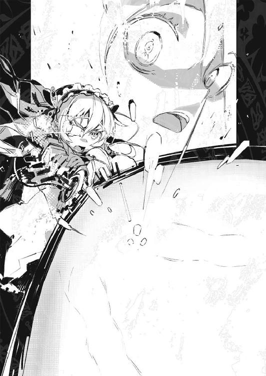
断末魔は一瞬。
悲鳴すら残す事無く、ギイと呼ばれた存在は──消滅した。
虚空を焼いて飛ぶ、紫の激光。
それは轟々と、大気をも抉る音をたてながら監督塔に殺到する。
チャイカが半ば無意識の内に放ったその一撃は、ギイを滅ぼしたのみならず、監督塔の中枢部──大型魔法機関の納められた部分を直撃していた。
そして──
「──！」
不意に圧迫が緩む。
ずるりと体内に食い込んでいた牙が抜ける感覚を、トールは怖気をふるう様な嫌悪感と共に覚えていた。
トールに嚙み付いていた装鎧竜が二体、離れて落ちていく。
地面に落ちて痙攣するその様子から、もう戦う力が無くなっているのは明らかだった。
「やった──か？」
トールはフレドリカに抱えられて空中に留まりながら、彼方の監督塔を振り返った。
「くそっ......！」
ヴィクトルは首筋に巻いていた接続索をむしり取ると、御者席から立ち上がった。
壁に非常用として架けられていた魔法機杖を摑むと、そちらの接続索を首に巻く。
まずい。擬獣を操れなくなれば、ヴィクトルは──亜人兵達に殺されるしかない。
「せめて一体でも装鎧竜を、いや、独角馬でもいい、支配出来れば」
その背に乗って此処から脱出も出来る。
ヴィクトルは改めて魔法機杖を操作、通信用の魔法を立ち上げる。
この監督塔の魔法機関の様に、複数の擬獣を同時に操る事は出来ないが、一体や二体だけならば、ヴィクトルでも擬獣を操れる。
しかし──
「──!?」
ヴィクトルが触れるまでもなく、床に設けられた昇降口の蓋扉が自ら跳ね上がる。
次の瞬間、そこから飛び込んできたのは、数名の亜人兵達だった。
「貴様等......！」
慌てて機杖を構えるヴィクトルだが、無論、今から呪文詠唱などしても間に合う筈が無い。亜人兵達は無言で駆け寄ると、一人が機杖を叩き落とし、接続索に引っ張られて前のめりになったヴィクトルを、別の二人が床に押さえつけた。
「や、やめろ──貴様等、貴様等亜人兵如きが、何を、何をするか！」
「............」
亜人兵達は無言。ヴィクトルを見下ろす彼等の眼は、かつての『主人』に向けるものとは思えない程、ひどく冷たいものだった。
そして──
「やめ......ろ......！」
必死の形相でそう訴えるヴィクトルの身体に、亜人兵達の新月刀が突き刺さった。
混乱は──ほんの瞬く間の事だった。
恐らくは監督塔からの魔法通信が、急激に途絶えたせいなのだろう──棄獣達は揃って激しく痙攣し、様々な行動に出た。その場に倒れる個体、同じ場所をぐるぐると回り続ける個体、あるいは同士討ちを始める個体......だがそうした行動もすぐに治まった。
「終わった......か？」
トール達は、大岩の上から辺りを見回して呟く。
棄獣の多くは、動きを止め、ただ立ち尽くす、あるいはただその場に蹲る、といった状態を維持していた。恐らく、非常用に──制御出来なくなった場合に備えて、急激に魔法通信が途絶えた場合、大人しくなる様に術式が仕込んであるのだろう。
更に──
「......多分、放っておけば、全て死ぬ」
キリルが呟く様に言った。
「脳の一部を切除してあるから、あの棄獣共は、命令が無ければ食事をする事さえ出来ない。恐らく、遠からず飢えて死ぬだろう」
「アレが、近くの国なり街なりに押し寄せるって事も無いって訳か」
疲れ果てた様子で岩の上に座り込みながら、トールは言った。
「それは何よりだ。で──」
トールは改めてチャイカの方を振り返って言った。
「結局、何なんだ、そいつは」
「むう......」
首を傾げるチャイカの傍らで、きょとんとした表情で立っているのはニーヴァである。
「ニーヴァ・ラーダ」
とニーヴァは自分の顔を指さして言う。
「名前を聞いてるんじゃねえよ。何者っていうか──何物なんだ、お前」
監督塔を狙撃した直後、ニーヴァは先の変身と同じく蒼い光を発し──そして元々の少女の姿に戻っていた。実の所、トール達もフレドリカの変身を見慣れていたせいで、先の奇怪な大型魔法機杖がニーヴァが姿を変えたものだと理解する事が出来たが......そうでなければ、未だに、何が何だか分かっていなかったかもしれない。
ニーヴァは、余程にチャイカが気に入ったのか、彼女の腕に自分の腕を絡ませてしがみついている。表情がぼんやりしているのでよく分からないが、これはひょっとして懐いている状態なのかもしれない。
「分かる事、少し。遺産。父様の」
とチャイカは言った。
「遺産？」
「強力。かつ特殊。魔法、兵器」
「......やっぱり機杖の類なのか、そいつ」
トールは眼を細めてニーヴァを見据える。怖がっている様子でもないのだが、トールからの視線に身をさらすのを嫌がるかの様に、ニーヴァはチャイカの陰に隠れた。
「ふうむ。重畳だ」
と頷くのはアカリである。
「なにがだよ」
「とりあえず兄様は、あの娘に嫌われている様だ」
「............それの何が重畳なんだよ」
「余計な心配が増えないで良い」
「何の心配なんだかな......」
疲れた声と顔でそう言って、トールは頭上の空を見上げる。
「............」
どうやらこれは、ガズ皇帝が何かの目的で作られていた魔法兵器──棄獣の身体や機杖の素材を使った、生きた機杖である、という程度の想像はつく。常識からすればそんなものが在るとは信じがたいが、既に、チャイカと共に行動する様になってから、トールにとって常識というのは、不変でも不滅でもなくなっていた。
「しかし──これは何に向ける為の武器だったんだ......？」
単に出力がどうの、破壊力がどうの、という問題ならば、航天要塞やら、他の魔法機関やら、より強力なものは幾つでも在る。
これは、あくまで個人用の魔法兵器だ。
勿論、運用方法や使う術式によっては大量破壊兵器にも成り得るだろうが──わざわざあの〈禁断皇帝〉が、国外に秘密の研究所を用意して造らせていたにしては、何処か不自然としか言い様のない代物だった。
（ギイを殺す為の武器......？）
何者だったのかは分からないままだが、とりあえずギイを殺す事は、出来た様だ。
「一体、ガズ皇帝は何と闘う積もりだったんだ......？」
トールの呟きに答える者は、居ない。
やがて、トール達の死闘を労う様に──戦いでほてった身体を冷ますかの様に、ぽつりぽつりと、雨が降り始めた。
一転して、島は不気味な程の沈黙に支配されていた。
静寂ではない。
降り注ぐ雨の音が島全体を包んでいる。だがその中で、棄獣達は雨を避けるでもなく、ただ、冷たい雫に打たれながらその場に佇んでいる。
「──気の毒。少し」
と評するのは、研究所の幾つか在る出口の処で、棄獣達を眺めるチャイカである。
「襲われ掛かって、殺され掛かって、よくそんな事が言えるな」
と呆れ気味に言うトール。
だが──
「トール。人間も......八番目」
「............！」
トールはその一言で思い出す。
人間は、魔法器官を外付けされた八番目の被造物であるという、大海魔の言葉を。
勿論、あれは何の裏付けも証拠も無い話だが──もし正しいというならば、確かに棄獣達は人類の先輩だ。
何者かによって仕組まれ、造り出され、そして──棄てられた。
目的にそぐわないという理由から。
では──人間は？ 人間もまた何かの目的のために生み出された生き物なのか？
「......トール!!」
「ああ、分かって──ん？」
トールはチャイカを振り返って......眉をひそめた。
声の聞こえてきた方向が、違う。
「............」
改めてトール達は声のした方向を振り返る──ニーヴァだけは例外的に、チャイカの傍らに立ったまま、ぼんやりとしているだけだったが。
「──紅の」
と呟くトール。
皆の視線が集まる先に、もう一人のチャイカが、仲間達と共に立っていた。
「......兄様」
「分かってる」
トールは小機剣に手を掛ける。
船の上では魔法の撃ち合いがまずいという事で、一旦は矛先を納めたが......『遺体』を奪い合う関係である事に変わりは無い。
「............生きてたか」
だが──そう安堵する気持ちもトールの中には在った。
敵対関係とはいえ、憎い相手ではない。それに紅チャイカは、白チャイカとは性格は正反対の様なところが在るが......顔立ちが似ているからか、何処か共通するものを感じてしまう。敵だと見捨ててしまうには、抵抗を感じてしまうのは事実だった。
アカリがトールに構えを促したのも、その辺を感じ取っているからだろう。この妹はトール自身よりもトールの事をよく把握している処がある。
「こっちの台詞」
とトール達に向かって歩きながら紅チャイカは言った。
その背後、開かれたままの出口から──
「キリル！」
十数名の亜人兵達が更に姿を現した。
「............」
小機剣を握ったまま、トールは傍らのキリルを一瞥する。
亜人兵達が、どういう立ち位置にいるのかが分からない。キリルとは一旦、休戦出来た訳だが、他の亜人兵にもそうした提案が通じるかどうか。
勿論、キリル達が、改めてチャイカとニーヴァを寄越せと言ってくる可能性も在る。
しかし......
「キリル！」
亜人兵達の中から一人の少女が飛び出してきたかと思うと──身体全体でぶつかる様にして、キリルに抱き付いた。
「ウルスラ......」
「良かった、生きてた」
「ウルスラもな。良かった」
口元を綻ばせて頷くキリル。
ウルスラという名の亜人兵は、嬉しそうにキリルの胸に頰ずりをしている。他の亜人兵達もキリルの傍にやってくると、彼を囲んで頷き合っていた。
その様子を見ながら──
「......斬り合う空気じゃねえな」
と言うのはダヴィードである。
彼は苦笑を浮かべながら更にこう言ってきた。
「つうかな。ちと頼みがある」
「──頼み？」
意外な言葉にトールは眉をひそめる。
前述の通りトール達と紅チャイカ一行の関係は『遺体』を巡る上での敵同士だ。何かを頼んだり頼まれたりする様な間柄ではないのだが......
「この島から出る方法がねえんだよ。俺達は」
肩を竦めてダヴィードは言った。
「そもそも、船着き場っぽいものが何処にも無ぇんだわ。どうやら、資材は船で途中まで運ばせて、そこから海に投棄させて、これを大海魔で回収するって方法だったらしい」
この島の研究施設は秘中の秘、だからこそ、そういう方法をとっていたのだろう。
当然、外から見て分かる様な普通の船着き場など、造る筈もない。
そして現在──魔法師達は全て死んでいる上、最も強力に棄獣達を操れた監督塔の魔法機関はチャイカが破壊してしまった。
「そういう訳でな。お前──何だかよく分からんが、その装鎧竜を手懐けてんだろう？ 俺達を陸地まで運んでくれ、って話さ」
「............」
トールはチャイカやアカリ、フレドリカと顔を見合わせる。
「もしそれが可能として──なんで俺達がそんな事をしてやらんといけねえんだよ」
別にトール達は、ダヴィード達がこの島から出られない様になっても困らない。
「......トール」
紅チャイカがトール達の前まで歩いてくる。
彼女が引きずっているのは──白チャイカと同じく黒い棺だ。ただし白チャイカのものと異なり、背負うのではなく、車輪付き、引きずって運びやすい様になっている。
「これを......」
紅チャイカは棺の脇に屈み込むと、その蓋を少し上げて、その中から何かをとりだした。
硝子の中に封入された──『手首』
「これが報酬」
紅チャイカは呟く様に言った。
「......どういう風の吹き回しだよ？」
動機となった感情は異なれど、紅チャイカもまた、『遺体』を集める為に旅をしていた筈だ。それが旅の目的である『遺体』を自ら差し出すとは、一体どういう風の吹き回しか。
「──チャイカ、確認を」
とアカリが脇からそう告げる。
「う、うい」
おっかなびっくり、といった様子で白チャイカが前に進み出て、紅チャイカの示すその『遺体』を眺める。
「......多分、本物」
何を以てそう判断したのかは余人の目にはさっぱり分からないが、白チャイカはトール達を振り返ってそう言ってきた。
「......ん」
受け取れ、と言わんばかりに紅チャイカが『遺体』を差し出す。
やはり気後れしたかの様に、白チャイカはしばらく紅チャイカと『遺体』を見比べていたが──そっと手を出して、これを受け取った。
「後で取り戻せば良いだけ」
ふと思い出したかの様に、ぽつりとそう呟く紅チャイカ。
確かに──考えてみれば最終目的が『遺体の全回収』で変わらないならば、トール達に集めさせておいて、全部揃ったところを強奪しても構わないという事になる。
「いいだろう......と言いたい処なんだが」
トールはフレドリカの方を振り返って言った。
なんだかんだ言っても彼女が嫌がれば、トール達にはこれを無理強いする事は出来ない。
「どうだ？」
「まあトールがいいって言うんなら」
装鎧竜の化身はあっさりと頷いた。
ヴィヴィは頭上の星空を見上げた。
満天の星空は、地上の悲喜こもごもなどまるで関係ないとでも言うかの様に、静かに、ただ白い輝きをちりばめている。美しい。だがそれはひどく遠い。どれだけ手を伸ばしても触れる事すら出来ない遥か彼方だ。
「............」
ヴィヴィは、溜息をついて背後の〈エイプリル〉号を振り返る。
街道沿いの街の、駐車場に停められたジレット隊の大型機車の中では、ズィータとニコライが〈クリーマン機関〉本部との定期連絡をしている筈だ。自分達は〈クリーマン機関〉の所属を離れ、独自に動く事になる、定期連絡はこれが最後である──と。
マテウスとレオナルドは、食料その他の買い出しに行っている。
そしてヴィヴィは──
「......いいのかな」
今更になって、逡巡を覚えていた。
自分一人であれば別に迷ったりはしない。だが、仲間達をも、自分の我が儘に付き合わせるのは──やはり心の何処かに負い目を感じてしまう。
勿論、彼等は彼等で、アルベリックの事を大事に思っていたから、自分と同じ行動をとる事にしてくれたのだ、という事は分かっている。だが自分が、あのギイという正体不明の輩の話に乗らずにいれば──皆は、アルベリックの死を受け入れていた事だろう。その意味ではやはり、ヴィヴィが彼等を巻き込んだとも言えるのだ。
「私は──」
「覚悟が決まったかね」
「──！」
不意に声を掛けられて、振り返るヴィヴィ。
そこに立っていたのは──あの、ギイと名乗った少年だった。
だが......
「──？」
一瞬、眉をひそめるヴィヴィ。
「どうかしたかね」
ギイは平然とそう声を掛けてくる。
「............」
ヴィヴィが感じているのは違和感だった。
何がと問われれば答えられない。だが何か──『違う』様な気がするのだ。先に会ったギイと、この目の前に居るギイとでは。元より気配はひどく希薄な上に、外見と物腰が妙にちぐはぐな印象のある人物で......その点については全く同じなのだが。
「あんた、ギイよね」
「そうだが？ 別の誰かに見えたかね？」
と首を傾げるギイ。
「......まあいいわ。元々何者かも分からないんだし」
とヴィヴィは言った。
「で──何の用よ」
「一つ君の為になる情報を伝えよう」
ギイは肩を竦めて言った。
「ハルトゲン公国の公王が、『遺体』を持っている、という噂だ」
「............つまり」
ヴィヴィは眼を細めて言った。
「そこにチャイカ共も集まってくるって訳ね」
「かもしれんな」
「とぼけてんじゃないわよ。どうせ、あんたが他のチャイカ共にも教えて廻ってんでしょ。何が目的かは知らないけど」
「............」
ギイは曖昧に笑って答えない。
ヴィヴィはしばらくこの正体不明の少年を睨んでいたが──
「いいわよ。乗ってやるわ」
挑む様な口調でそう言った。
茜色の空を去って行く白銀の装鎧竜を見送りながら──キリルは溜息をついた。
「キリル？」
ウルスラが横から彼の顔を覗き込んでくる。
「どうしたの？」
「いや......」
曖昧に笑って首を振るキリル。
激情に任せて反乱を起こし、魔法師達を殺した。
その事については、正直言って後悔はしていない。だが、結果として......キリル達が目的を見失ってしまった事については、何も変わらない。
「自分が変われないなら、世界を変えろか。無茶を言うなよな」
あのトール・アキュラという乱破師は、別れ際にこうも言っていた。
『しばらく、精進して待ってろ。俺達が──うちのチャイカが、遺体を集め終わって、父親の弔いを終えたら、その時、どうせまた大なり小なり戦乱が起こる』
チャイカの思惑がどうであれ、周囲の状況は彼女に平穏な生活を許さない。
生き延びたければ、延々と死ぬまで逃げ続けるか──さもなくば、自分を取り巻く状況を変えるしかない。例えば、いっそ、本当にガズ帝国を再興してしまう、とか。
トールが、そしてあの白いチャイカがその気なら、その為には必ず戦力が必要になる。
どんなに強力な武器を持っていようと、国を一つ興すのに、四人や五人ではあまりに人手が足りなかろう。
ならば──
「その時は、雇われてやるのも、いいかもしれない」
「え？ なにが？」
きょとんとした表情で尋ねてくるウルスラに、キリルは笑いかける。
「戦場をさ。自分達で選んでも良いって話だよ」
「............」
「それまで、力を蓄えておくのもいいさ。国興しの際に恩を売っておけば、亜人兵だろうが何だろうが、下には置かない扱いにはなるだろ」
そうウルスラに言うと、キリルは背後に並んだ仲間の亜人兵達を振り返った。
「よし──皆、遺された資材と設備を調べるぞ。とりあえず、今日からここは、小さいながらも俺達の国だ。農夫や職人の真似事もしなければならないかもしれないが、なに、ここには亜人兵しかいない。普通の人間と比べられる事も無いから、向いてなくても、気にするな！」
「............」
亜人兵達が顔を見合わせる。
「擬獣の生き残りも調べるぞ。装鎧竜か、独角馬が残っていれば、簡単な口頭命令も通じるだろう。そうしたら、島の外にも出て行ける。やる事は山積みだ！ 下手な戦争より大変だ、心してかかれよ！」
「............」
半ば虚脱気味だった亜人兵達の間に──ゆっくりとだが、気勢が満ちていくのが分かる。
やがて彼等の間で、広がっていくざわめき。
キリルは、傍らのウルスラを抱き寄せながら、満足げにその光景を見つめていた。
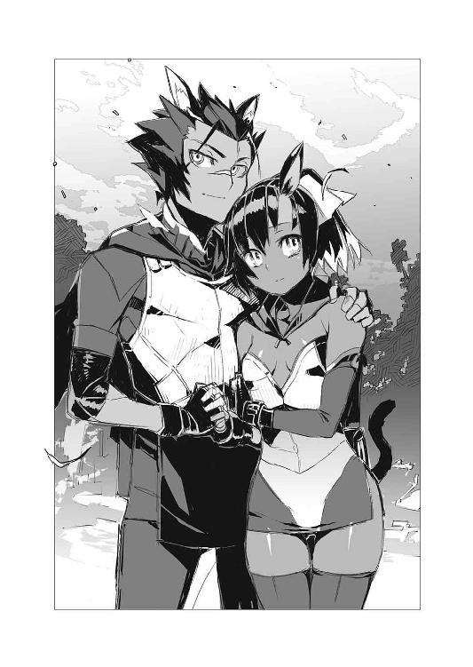
〈スヴェトラーナ〉号の御者台の上に白チャイカと共に上がる。
白チャイカが接続索を首に巻いている間──ふと傍らを振り返ると、紅チャイカがじっとこちらを見つめて立っていた。
気の強い性格が如実に出たその表情はいつも通りだ。
挑みかかる様な視線をトールに向けながら──しかし。
（あの島でなんかあったのか、こいつも）
ふとそんな事を思うトール。
白チャイカにしても、ガヴァーニ領で蒼チャイカに会ってから、微妙に言動が変わってきたというか、陰りが見える。そして同じ様な感じをトールは紅チャイカにも感じていた。勿論、紅チャイカは元々白チャイカ程に明るくはないし、付き合いも非常に短いので、彼女の性格についてトールが熟知している訳ではないのだが。
「トール」
紅チャイカが声を掛けてくる。
「私は──」
声は萎み、続けるべき言葉が溶けて消える。
そんな彼女を見ながら......
「チャイカ・ボフダーンなんだろ。お前」
「......？ そ、そう」
「じゃあそれでいいじゃんかよ」
「............」
紅チャイカはしばらく何事か考えている様だったが。
「うん」
そう言って頷く。
彼女は改めてトールを見据えながら、きっぱりとこう言った。
「必ず。取り戻す。それまで『遺体』──預けておく」
「......そうかい」
苦笑するトール。
そんな二人の間に割り込むかの様に──
「いくぞ、お姫様」
とダヴィードが操る馬車が動き出す。
紅チャイカはトールを見つめたまま、数歩、後ずさり──そして跳躍して馬車に飛び乗った。相変わらず白チャイカと異なり、運動能力は随分と高い様だ。
馬車の上からこちらを見つめる紅チャイカが道を去って行くのをしばらく見送り──
「......って見送ってる場合じゃねえんだよな」
「うい」
と顔を上げて言うのは白チャイカだ。
「俺等も結局は、ハルトゲン公国に向かう事になる訳だし」
「だがその前に」
とアカリが腰に手を当てて言った。
「この娘はどうするのだ？」
と彼女が指さすのは、言うまでもなくニーヴァである。
相変わらず、とろんとした無表情で彼女は〈スヴェトラーナ〉号の脇に立っている。
「どうするつってもな」
トールは顔をしかめた。
亜人兵達の処に──島に残しておくのは、何かと不安が在った、というのが本音だ。
ちなみに亜人兵達は改めてあの島で隠れ住む事になったらしい。
彼等は彼等で、自分達の居場所、自分達の在り方、というものを改めて考え、探す気にはなっている様だ。魔法師達の殺害に関しての是非は、トールにはそれを問える資格も義理も無いが、こうしてみると、『親殺し』は彼等にとって、自立のための必要な儀式であったのかもしれない。
ただ......そんな彼等に、ニーヴァの面倒を見る余裕は無かろう。
またニーヴァもあれから、チャイカの傍を離れようとしない。隙あらばチャイカにくっついている事が多く、チャイカも困惑気味だが──それこそ、引き離せば、海を泳いで渡ってでもついてきそうな印象だった。
それに......もう一つ。
（ギイを、殺した）
殺せない筈のものを、殺した。
それは──
（ガズ皇帝の『遺産』）
それは今後、『遺体』を集める旅の中で、重要な意味を持ってくるのでは無いか。
半ば勘に過ぎないが、トールはそう思った。
「連れていくしかないだろ」
当のニーヴァは、トールとアカリの事などまるで眼中に無い、といった様子ですたすたと歩くと、御者台の上のチャイカの処に登って、彼女の腕にしがみついた。
「むやっ？ ニ、ニーヴァ？」
「............」
ニーヴァは眼を瞬かせてチャイカを見つめる。
「羞恥、ニーヴァ、求める分離」
「............」
「あの、だからニーヴァ、ちょっと離れてくれないかな」
とチャイカはラーケ語に切り替えて言うも──ニーヴァは首を振った。
「嫌。これがいい」
「なんなの、なんなのこの子......」
ラーケ語で呻くチャイカ。
それを見てトールが苦笑していると──
「ひょっとして兄様は、こう、傍らから愛でるのもいけるクチか」
何やら感心した様子でアカリが問うてくる。
「なんだ、その『傍らから愛でる』ってのは」
「少女二人がこうきゃっきゃうふふとじゃれ合っているのを、何処か達観した様な瞳で見つめるのがいいというか。いや。私には無い趣味なので、よくは分からないのだが」
「訳がわからんが、多分、違う」
と唸る様に言ってから──トールはチャイカ達と共に〈スヴェトラーナ〉号の御者台に上がると、貨物部の上に乗っかっているフレドリカにも声を掛けた。
「フレドリカ。お前もそんな処に居ないで中入れ」
「どうして？」
フレドリカが首を傾げる。
「人間の姿をとってる時は、人間の感覚に準じるつってたのはお前だろ。なんつうか、そんな処で吹き曝しになってると、こっちが落ち着かないんだよ」
「ふぅん」
ひょいと飛び降りてきたフレドリカは、トールの顔をまじまじと見つめる。
「なんだよ」
「なんでもないよー」
気楽な口調で装鎧竜の化身はそう言ってから。
「そうだ。後で嚙ませてくれるって言ったよね、言ったよね？」
そう言いながらフレドリカまで御者台の上に上がってくると、トールの腕にしがみついて、ぺろりと彼の首筋を舐めてきた。
「ちょ──まて、今、ここでか？」
「またはぐらかされたら、やだし」
「トール!?」
「兄様！」
チャイカとアカリの悲鳴じみた声を聞きながら、フレドリカを引きはがそうとするトール。だが相手は装鎧竜──少女の姿をしていてさえ、もの凄い力で、むしろトールの方が組み伏せられそうである。
「いかん、兄様、助太刀するぞ」
アカリまで御者台の上に乗り込んできたかと思うと、トールの上にのしかかって言った。
「まったく、こんな狭い場所でくんずほぐれつがいいとは、兄様もとんだ変態」
「お前が言うな──ッ！」
チャイカと、アカリと、フレドリカと、ついでにチャイカにしがみつくニーヴァと......少なくとも見た目としては、若い娘達に狭い御者台の上でもみくちゃにされながら、トールが叫ぶ。
「いいから、早くハルトゲン公国に向かうぞ！ 紅チャイカを追え！」
「この上、敵方の娘の尻まで追いかけるというのか兄様。これでは足りないのか、足りないのか！ ええいこの尻好きめ！」
「むい？ トール、お尻好き？」
「あ。じゃあ嚙み付くのお尻の方がいい？」
「とりあえずお前らは黙れ！ 離れろ！」
喚くトール。
（今は考えても仕方ない──か）
自分達の知らない所で何かが動いている。
それは間違いが無い。恐らくチャイカ達すらもが、その動きの中に何らかの役割を期待して組み込まれた『駒』に過ぎないのだ。
いや。それどころか......人間や棄獣ですらも。
あるいは世界そのものですらも。
全ては何者かの掌の上か。
しかし......無意味に空ばかりを見上げていても仕方が無い。むしろ足元を見ながら一歩ずつ進んでいく事で、見えてくるものも在るだろう。
「俺は今の自分に出来る事をしていくだけだ」
わいわいと尚も騒いでいる少女達を横目に──御者台の席に身を沈めると、トールは全身にのしかかる疲労感から、静かにその瞼を閉じた。
あとがき
どうも、軽小説屋の榊です。
『棺姫のチャイカ』七巻をお届けします。
ええと──帯やら何やらで既に御存知の方もおられるとは思いますが。
『棺姫のチャイカ』アニメ化でございまする。
やはり私は「余計な事せんと原稿に専念しろ」というお達しなので、原作者以上としての関わり方はしませんが、正直、全く不安がありません。現時点で（この本が出ている時点で）製作スタジオやら監督等、何処までの情報をオープンにして良いのかは分からないので明記はしませんが、期待して貰って良いと思います。
過去の実績を考えれば。
いやあ、たまにはゴネてみるもんですね（おい）。
............深くは突っ込まぬが吉でございまする。
某社のシリーズもアニメ化が発表されており、一時期「まさか放映時期被るのか!?」と心配しておりましたが、どうやら綺麗にずれてくれるようで、一安心。
傍から見れば、別に被っても困りゃしないように見えるかもしれませんが、なんというか、雑事が増えるんですよ、アニメ化って。
細かい所だと「このキャラと用語の英語表記はどうなってますか？ グッズ作るので、早々に表記書いて送ってください、Hurry! Hurry!」とかそういう要請が来たりするので、何となく音感だけで名前つけてると、えらい事になります。
一応、大抵の作品のキャラは実在の名前からとって、綴りも調べられるようにはしてるんですけどね。なので最近は、「綴りは？」と問われると「調べてください」と編集さんに投げて逃げるようにしてます（笑）。
ちなみに本作では、個人名は普通に実在の名前から引っ張ってまして、姓は自動車メーカーから引っ張って組み合わせてますが、概ね、同じ文化圏同士でずれないようにしてます。
例えば、トール達の「アキュラ」は本田の海外ブランドに『阿修羅』と引っかけたもの、名前だけ出ている同じ乱破師の「六ツ星衆」は、ルビ見ていただければ分かりますが、スバルでございまする。
それはそれとして本巻。
空の次、舞台は海でございまする（まあ事実上は島の中ですが）。
以下、つらつらと。
ネタバレがあるので、本編未読の方はご注意ください。
今回のある意味主役とも言うべき棄獣──大海魔ですが、これは作中にもある様に、基本はオウムガイです。『クラーケン』というと概ね、巨大なタコ、あるいはイカのイメージですが、基本は確か語源からしても『触手の怪物』という認識らしく、必ずしもタコやイカに限った事ではないのだとか。
甲殻類やヒトデやクラゲとして描かれる事もあるようなので、「じゃあ何となくカッコイイからオウムガイで」と。現実のオウムガイの触手は短いですが、まあこいつのはやたら長いという設定でございまする。
いやぁ。いいですよねオウムガイ。
何というか、あの出鱈目な姿がやたらこう、生きた化石っぽくて。
普通の魚なんかより余程、何か考えてそうな顔してやがります。
二年前に熱帯魚屋で見てから、飼いたい飼いたいと思ってるんですが、深海の生き物なので水温上昇に弱く、とにかく水槽冷却しないとすぐ弱って死んじゃうそうです（そして冷却すると、夏場は水槽が曇りまくって観賞しにくいので、飼ってる意味が半減する）。
水族館レベルの飼育環境では繁殖まで行ってるみたいなんですけどね。
そういえば、ちょっと前にダイオウイカの撮影に成功した日本の学者の特番が組まれていましたが──写真で見る生きたダイオウイカって、なんか妙に金属っぽくて、旧い特撮映画（旧ガメラ）のバイラスみたいな、こう、異生物っぽい雰囲気がありましたな。
深海って実は宇宙以上に洒落にならないというか、人間にとっては未知の生物やら事実やらがありまくり、ただ潜るだけでも大騒ぎせにゃならん異郷らしいですが、子供の頃は、宇宙船で宇宙に行くＳＦ（月世界旅行）よりも、海の底を探検する海洋冒険ＳＦ（海底二万マイル）に燃えた記憶があります。
何というか、水が好きなんですよね、私。小学校の頃、運動は大抵駄目だった癖に、水泳だけはいつも学年でトップクラスだったし。家の中に水槽が在ると安心するみたいな所もあって。
夏の暑さに弱いし、前世はオウムガイなのかもしれませんな。
それはさておき。
物語も折り返し地点に入って参りました。
何だか色々とシリーズ立ち上げ時期とは状況が異なってきた（度重なる担当さんの交代とアニメ化もその一つ）ので、想定よりも巻数が変わったり、作者自身、当初は考えてもいなかったキャラやネタが出てきておりますが。
その最たるものが本作で登場するニーヴァですな。
榊「男の子でも女の子でもいいんですけども。どっちにしましょうか」
担当「やっぱ女の子でしょう！」
榊「なんだかトールの周り女の子ばっかり増えていって、その意図も無いのにハーレム状態になってますが」
担当「いいじゃないですか」
榊「ですよね」
たとえ結ばれても幸せな家庭を築くには難ありの女の子ばっかりなのはハーレムと呼んで良いのかどうかはさておき。
榊「このニーヴァがこう、どばーっと真っ二つになるですよ！ サジタル面切断ッ！」
担当「榊さん。それは誰得？ です」
榊「えー。いいじゃん。こう、ずぱ！ と頭から唐竹割りに割れるんだよ！ 『トータルリコール（旧版）』のアレみたいに！ その中からこう、黒い、金属光沢の骨がね？ 出てくる訳ですよ、『ターミネーター』シリーズのエンドスケルトンみたいにね？ でもってね？ これがこう、がしゃんこがしゃんこと......」
担当「それ萌えないです。っていうか気持ち悪いです」
榊「え？ 可愛いじゃん、エンドスケルトン。下半身を爆弾で吹っ飛ばされても任務を遂行しようとして、撃たれても倒れても健気に立ち上がり、最後はプレス機で潰されたり、溶鉱炉にぶち込まれたりする姿に、全私が泣いた。ボク達スケルトン、貴女だけを、追いかける～今日も、撃たれる焼かれる轢かれるそして～溶かされる～。おお、おおお......」
担当「............榊さん」
榊「時代は金属骨格っ娘ですよ！ こいつぁいける！」
担当「............榊さん。いい加減、スケジュールおしてますんで」
榊「すんません」
まあ他にも、亜人兵のキリルなんかも新規に出てきた訳ですが。
こいつも当初はちょっと悩みました。
榊「ところでこの亜人兵のリーダーはどうしましょう」
担当「どうとは？」
榊「折角、獣耳ですし、レオナルドの時はひねくれて男の子にしましたけど、こっちはオーソドックスに女の子にしましょうか？ 勿論、戦っている途中でトールに助けられてデレます。獣っ娘ですから当然、嚙みます。フレドリカとどちらが歯形を沢山トールにつけるかで争います。男の勲章です。その内アカリとチャイカにも嚙まれます。トール、満身創痍です」
担当「い、いや、こちらは男の子でいいと思います！」
榊「どういう基準で判断下してるのか、いまいち謎ですが、了解です！」
そんな会話を担当氏としたりなんかして。
あがってきた、なまにくＡＴＫ師のデザインに萌え燃えしつつ、校正したりで、本作は出来上がりましたですよ。毎度の事ながら綱渡りな進行具合で、なまにくＡＴＫ師には迷惑かけまくりで、頭が上がりません。
まあ、そんなこんなで相変わらずのドタバタぶりですが、読者の皆様には最後までおつきあいいただければ幸いです。
ではでは。
また──次の本で。
２０１３／６／15
榊一郎
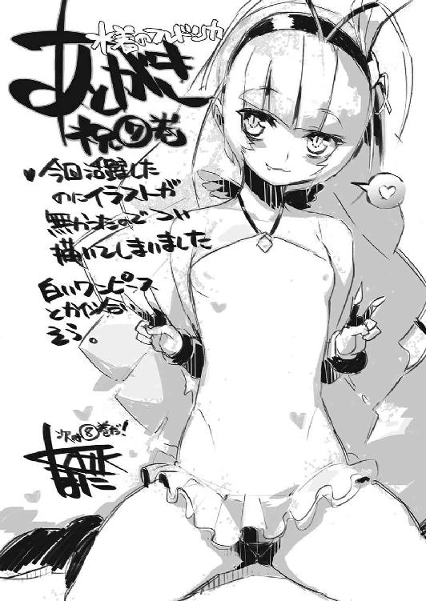
棺姫のチャイカⅦ
榊 一郎
平成25年7月25日 発行
発行者 山下直久
発行所 株式会社富士見書房
〒102-8144 東京都千代田区富士見1-12-14
http://www.fujimishobo.co.jp/
(C)2013 Ichirou Sakaki, NamanikuATtaKai/Fujimishobo
本電子書籍は下記にもとづいて制作しました
富士見ファンタジア文庫『棺姫のチャイカⅦ』平成25年7月25日初版発行